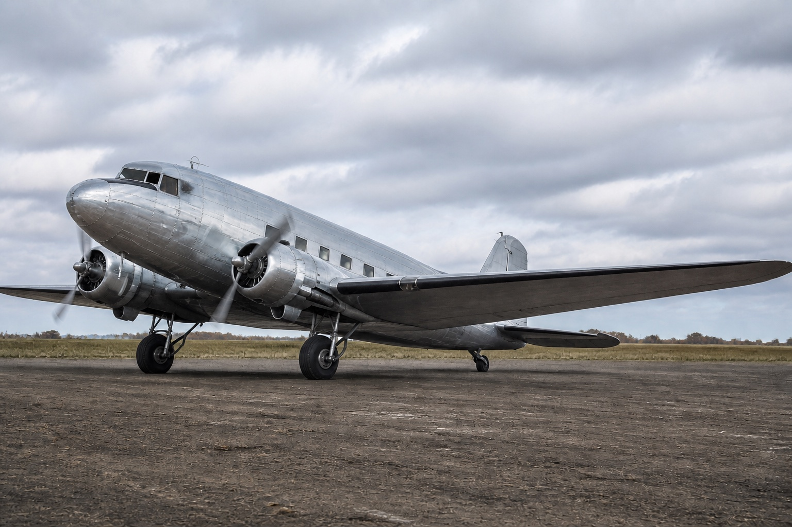
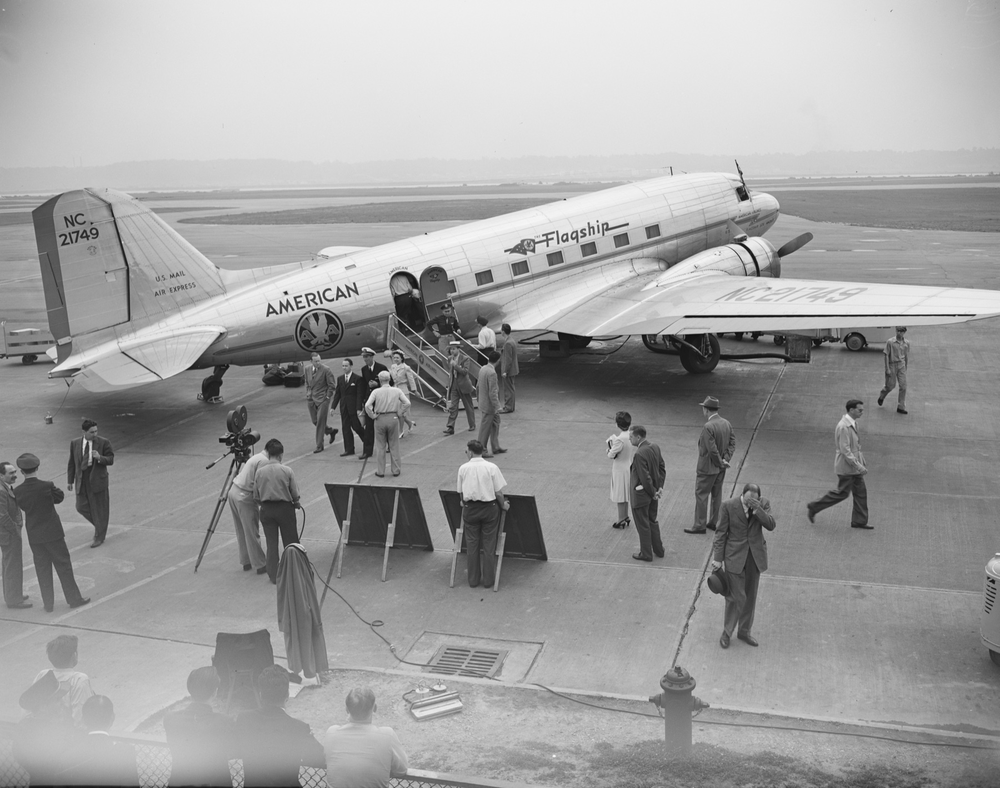
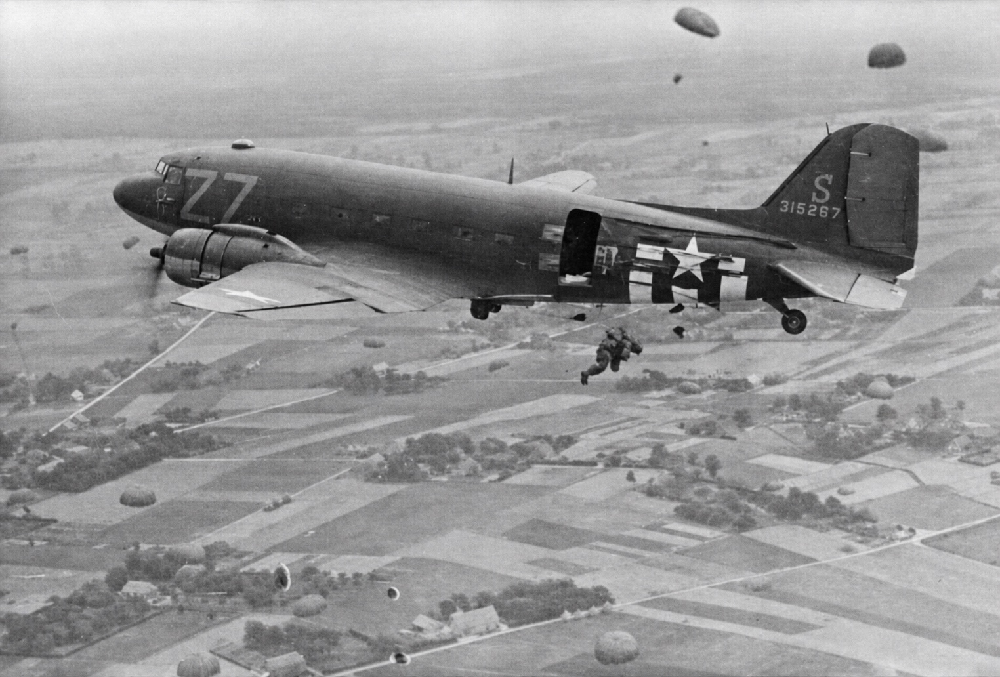
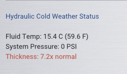

On December 17, 1935, thirty-two years to the day after the Wright brothers' first flight at Kitty Hawk, a new aircraft took to the sky over Clover Field in Santa Monica, California. It was not the fastest airplane ever built. It was not the largest. It was not the most technologically advanced. What the Douglas DC-3 was, and what it would prove to be for the next nine decades and counting, was the most important transport aircraft in the history of aviation.
The DC-3 was born from a phone call. In 1934, C.R. Smith, president of American Airlines, rang Donald Douglas at his home to ask for a stretched version of the DC-2 that could carry passengers coast-to-coast in sleeper berths. Douglas was reluctant. The DC-2 was selling well and a larger variant meant financial risk. Smith persisted, reportedly offering to buy twenty aircraft sight unseen. Douglas relented. The result would change the world.
Before the DC-3, airlines lost money carrying passengers. They survived on government airmail contracts. The economics were simple and grim: no existing aircraft could carry enough people, far enough, cheaply enough, to turn a profit on ticket sales alone. The DC-3 changed that equation. With 21 seats (later expanded to 28), two reliable Pratt & Whitney or Wright Cyclone engines, and operating costs low enough to make passenger service profitable for the first time, the DC-3 did not merely enter the market. It created the market. By 1939, ninety percent of all airline passengers in the United States flew on DC-3s.
Then the war came, and the DC-3 found its second calling.

Redesignated the C-47 Skytrain by the United States Army Air Forces (and the Dakota by the Royal Air Force), the militarized DC-3 became the backbone of Allied air transport. Over 10,000 were built for military service. They flew every theater: the swamps of New Guinea, the deserts of North Africa, the freezing passes of the Himalayas on the legendary "Hump" route between India and China. On D-Day, June 6, 1944, over 800 C-47s dropped paratroopers of the 82nd and 101st Airborne Divisions behind the Normandy beaches.
General Dwight D. Eisenhower would later name the C-47 as one of the four weapons that won the war, alongside the bazooka, the jeep, and the atomic bomb. It was the only aircraft on his list.
The C-47 earned more than a general's praise. It earned nicknames from the crews who depended on it. "Gooney Bird" was the most common, but also "Skytrain," "Old Bucket Seats," "Doug," "Placid Plodder," and, in a nod to its ruggedness, "the aircraft that could be wrecked but not killed."
The DC-3's reputation for survivability is not folklore. It is engineering. The aircraft was designed with structural margins that its creators considered prudent and its operators would eventually consider miraculous. The wing spar is a massive forging that can absorb damage that would be fatal to lighter structures. The fuselage, while not pressurized, is built with redundant load paths that allow it to sustain remarkable punishment and continue flying.
Stories of DC-3 survivability are legion, and they are not exaggerations. Aircraft have returned from missions with entire sections of wing shot away, with landing gear torn off by ground fire, with control surfaces shredded, with engines seized. In one well-documented incident, a C-47 struck a steel cable stretched across a valley in Burma, slicing through the leading edge of the wing to the main spar. The spar held. The crew flew home.
The DC-3's structural strength comes partly from its era. In 1935, aerospace engineers did not have the computational tools to optimize structures to minimum weight. They used generous safety factors. The result was an aircraft considerably stronger than it needed to be, a characteristic that would save countless lives over the following decades.
The airframe was also designed to be maintained in conditions that would make a modern avionics technician weep. Field-level maintenance could be performed with hand tools, under tarps, in driving rain, by mechanics who learned their trade on the job. Parts were simple, standardized, and available. A DC-3 that landed damaged on Monday could be flying again by Wednesday, rebuilt with parts scavenged from another aircraft or fabricated in a field workshop. Try that with a modern composite airframe.
After the war, the United States government sold thousands of surplus C-47s at a fraction of their production cost. Airlines around the world, many of them brand-new national carriers in newly independent nations, built their entire operations around the DC-3. It became the first airliner to operate on every continent, including Antarctica.
Decades passed. Jets arrived. The Boeing 707, the Douglas DC-8, the de Havilland Comet. One by one, the piston-powered transports were retired, scrapped, converted to crop dusters, left to rust on remote airfields. All of them. Except the DC-3.
As of this writing, DC-3s continue to fly commercial operations. The most famous operator is Buffalo Airways, based in Yellowknife, Northwest Territories, Canada. Founded by "Buffalo" Joe McBryde in 1970, the airline operates a fleet of classic piston and turboprop aircraft, including several DC-3s, hauling freight and passengers across the Canadian subarctic. The airline gained international recognition through the television series Ice Pilots NWT, which documented the daily challenges of operating vintage aircraft in one of the harshest environments on Earth.
Buffalo's DC-3s operate in conditions that would ground most modern aircraft: unpaved strips carved into frozen tundra, temperatures that plunge below minus forty (the point where Celsius and Fahrenheit agree on how cold it is), whiteout blizzards, and loads that would make a structural engineer reach for a calculator. The aircraft handle it. They have been handling it for nearly ninety years.
The DC-3 was not supposed to last this long. No one designed a ninety-year service life into the airframe. No one planned for an aircraft to be older than the grandchildren of the engineers who drew it. And yet here it is: still flying, still hauling, still earning its keep. Not as a museum piece or an airshow attraction, but as a working aircraft, performing the same job it was built to do, in places where nothing else will suffice.
| Douglas DC-3 / C-47 Skytrain | |
|---|---|
| Wingspan | 95 ft 0 in (28.96 m) |
| Length | 64 ft 5.5 in (19.65 m) |
| Height | 16 ft 11 in (5.16 m) |
| Empty Weight | ~18,300 lbs (8,300 kg) |
| Max Takeoff Weight | 31,000 lbs (normal) / 36,000 lbs (overload) |
| Engines | 2 × Pratt & Whitney R-1830-92 Twin Wasp |
| Power | 1,200 BHP per engine at 2,700 RPM |
| Propellers | Hamilton Standard Hydromatic, 3-blade, constant speed |
| Fuel Capacity | 804 US gallons (4 center-wing tanks) |
| Oil Capacity | 27.75 US gallons per engine |
| Cruise Speed | 170 mph (148 kts) at 10,000 ft |
| Max Speed | 230 mph (200 kts) |
| Service Ceiling | 23,200 ft |
| Range | 1,500 miles (typical load) |
The LES DC-3 for X-Plane 12 is not an approximation of the Douglas DC-3. It is a systems-level reproduction built from engineering data, maintenance manuals, and the physics that govern real aircraft behavior. Every system that matters, from the oil circulating through the R-1830's fourteen cylinders to the electrons flowing through more than sixty individual circuit breakers, is modeled with the actual equations that describe its real-world behavior.
This matters because physics produces emergent behavior that scripted simulations cannot replicate. When you struggle to start a cold engine on a January morning, the simulation is not rolling a difficulty dice. It is solving the Walther equation to determine your oil viscosity, calculating the starter motor's torque against that resistance, modeling fuel vaporization rates in cold cylinders, and tracking battery capacity depletion under high current draw via Peukert's Law. The result is an engine start that feels different every time because the conditions are different every time, exactly as in the real aircraft.
The simulation includes two aircraft variants, selectable via livery:
The period-correct configuration, as it would have appeared in the 1940s. Instruments and avionics are authentic to the era: a Sperry A-3A Gyropilot for autopilot duties, a radio compass for ADF navigation, and a cockpit full of round-dial instruments. For pilots who want vintage aesthetics alongside modern navigation, the cockpit tablet provides charts and moving-map capability without altering the period panel.
A retrofitted configuration representing the many DC-3s that received avionics upgrades over their long service lives. The instrument panel retains its classic character, but the radio stack has been updated with a Bendix/King KX165A NAV/COMM transceiver, a Garmin GNS 530 GPS/NAV/COMM, a KAP 140 two-axis autopilot, a KT 73 Mode S transponder, and dual KR87 ADF receivers. This variant reflects the practical reality that most flying DC-3s today carry modern avionics for safety and regulatory compliance.
Not every pilot wants the same experience. The simulation offers three difficulty modes that affect multiple systems simultaneously:
| Mode | Intended For | Key Characteristics |
|---|---|---|
| Tourist | Sightseeing, casual flying | Simplified primer (auto-return, no flooding risk). Random failures disabled. Relaxed abuse limits. Reduced wear accumulation. No cold-weather effects (carburettor icing excepted). |
| Standard | Engaged simmers | Simplified primer operation. User controls failure settings. Normal wear rates. A balanced experience that rewards good technique without punishing mistakes harshly. |
| Veteran | Study-level realism | Realistic spring-loaded primer with flooding risk. Random failures enabled. Strict abuse limits. Double wear rate. The full DC-3 experience, for those who want to earn every takeoff. |
These modes affect multiple systems simultaneously: primer switch behavior, failure probability, wear accumulation rate, and maintenance intervals. You can change difficulty at any time through the DC3 Hangar interface.
In Tourist mode, cold weather is shown but never bites. The STATUS tab still displays fluid, battery and outside air temperatures, and they are accurate, but nothing cold costs you anything:
The on-screen cold-weather warnings do not appear in Tourist at all, and where the STATUS tab would otherwise show cold effects it shows a short note that cold-weather effects are off in Tourist instead.
One cold-weather hazard stays active in every mode, including Tourist: carburettor icing. It is not really a cold-weather phenomenon, it is worst in mild, humid air, so it is not switched off with the rest. If you lose power in a descent with the carburettor air cold, suspect carb ice and apply carb heat; it is not a bug.
Standard and Veteran are unchanged: every cold-weather effect listed above is active, and the recalibrated figures in the hydraulic and systems chapters apply in full.
If you have flown modern glass-cockpit aircraft in X-Plane, the DC-3 will require an adjustment. There is no flight management system, no autothrottle, no synthetic vision. Navigation is done with maps, radio bearings, and your eyes. Engine management requires attention and understanding, not just "set and forget" power levers. The aircraft is tailwheel-equipped, which means ground handling demands your full attention, especially in crosswinds.
What you gain in exchange is an aircraft with personality. The DC-3 rumbles and vibrates. Its gauges swing and settle. Its compass overshoots and oscillates. Its hydraulic system has pressure you can watch build and release. Its engines sound different when cold than when warm, different at idle than at cruise, different in rain than in dry air. These are not cosmetic effects layered on top of a generic flight model. They are the natural output of physical systems doing what physical systems do.
Fly the DC-3 long enough and you will develop an intuition for it. You will learn to feel when the oil is warm enough, when the manifold pressure is right, when the hydraulics need a moment to recover. That intuition is real. It comes from the same physics that real DC-3 pilots learn from. The numbers are different, because your "seat" is a desk chair and your "throttle" is a plastic lever. But the relationships are identical, and the skills transfer.
If this is your first time with the DC-3, start with Standard difficulty mode and use the Auto Start feature (in DC3 Hangar > Options) to handle the engine start sequence while you learn the cockpit layout. Once you are comfortable with basic flight, try a manual start. The engine starting procedure is covered in detail in Chapter 7.
The Classic variant recreates the DC-3 cockpit as it appeared during its operational heyday in the 1940s and 1950s. The instrument panel is a wall of round gauges, mechanical indicators, and toggle switches laid out with the functional logic of an era when ergonomics meant "put the important ones where the pilot can reach them."
The main instrument panel is divided between the captain (left seat) and first officer (right seat), with shared engine instruments in the center.
The captain's primary flight instruments follow the standard "basic six" arrangement familiar to any instrument-rated pilot, with period-correct variations:
Engine instruments are arranged in matched pairs, left engine on the left, right engine on the right:
The overhead panel contains the majority of the aircraft's systems controls:
Between the pilots, the center pedestal houses:
A rotary friction lock on the underside of the throttle quadrant controls the tension on all power levers (throttles, propellers, and mixtures) simultaneously. This is not a cosmetic detail; it is a critical part of operating the DC-3.
The R-1830 Twin Wasp engines are 14-cylinder radials. At low RPM, they produce significant vibration through the engine mounts, airframe, and directly into the throttle quadrant. This vibration will gradually shake the levers backward toward idle if they are not held in place. Without the friction lock tightened, you will notice the throttle levers slowly creeping back during ground operations and climb, reducing power when you are not watching. The propeller RPM levers drift toward low RPM. The mixture levers drift toward the nearest gate below their current position.
The drift is most pronounced at low RPM (idle and taxi) where the engine runs roughest. At cruise RPM, the engines are well balanced and vibration is minimal, so lever drift is negligible even with a loose friction lock. This matches the real aircraft: crews tightened the friction lock after setting cruise power and loosened it when they needed to make adjustments.
After setting power for takeoff or cruise, tighten the friction lock. If you leave it loose during a long cruise, you may return to find your throttles have crept back and your airspeed has dropped. During critical phases of flight (takeoff, go-around), a loose friction lock can mean the difference between maintaining power and losing it at the worst possible moment.
The lock does not need to be fully tight to be effective. Even a half-turn provides enough resistance to prevent drift at cruise RPM. Only fully loose (all the way counterclockwise) allows significant creep, and only when the engines are running rough at low RPM.
Lever vibration drift is disabled in Tourist mode. In Tourist, the levers stay exactly where you place them regardless of the friction lock position. In Standard and Veteran modes, vibration drift is active and the friction lock must be managed as part of normal operations.
The Classic variant's autopilot is the Sperry A-3A, a period-correct electromechanical gyropilot with three control channels: heading (via rudder), pitch (via elevator), and bank angle (via aileron). It is covered in detail in Chapter 14. Note that it is a fundamentally different device from modern autopilots. Its hydraulic servos are temperature-sensitive, its gyroscopes drift with time and latitude, and its clutch slips under heavy aerodynamic loads.
Mounted above the windshield, the wet compass is the aircraft's primary heading reference. Unlike the directional gyro, it does not drift over time. Unlike the directional gyro, it is also subject to turn lag, acceleration and slosh errors, and magnetic deviation. Learning to use it effectively is part of the DC-3 experience. See Chapter 11 for details.
The Modern variant represents a DC-3 that has received avionics upgrades during its long operational life. The basic instrument panel remains authentic, but the radio stack and autopilot have been replaced with contemporary equipment. This reflects common practice among operators who continue to fly the DC-3 commercially: the airframe and engines are original, but the avionics meet current regulatory requirements.
The flight instruments, engine instruments, overhead panel, and pedestal are identical to the Classic variant. The differences are concentrated in the avionics stack:
| System | Classic | Modern |
|---|---|---|
| NAV/COMM | Period radio equipment | Bendix/King KX165A |
| Autopilot | Sperry A-3A Gyropilot | Bendix/King KAP 140 |
| Transponder | Mode A/C transponder | Bendix/King KT 73 Mode S |
| ADF | Radio compass | Dual Bendix/King KR87 |
| Compass / HSI | Vacuum DG + Magnesyn compass | KCS 55A: KI 525A HSI + KA 51B slaving |
| RMI | None | KI 229 Radio Magnetic Indicator |
| Flight Director | None | KI 256 Flight Command Indicator |
| Instrument Lighting | Radium glow (no power required) | Electric backlighting (power required) |
| GPS | None | Garmin GNS 530 |
The Classic variant's instrument dials use radium-based luminous paint that glows faintly in darkness without electrical power. The Modern variant replaces this with electric backlighting controlled by the panel rheostats. In a total electrical failure at night, the Classic variant still has legible instruments; the Modern variant goes dark. This is covered in Chapter 13.
The Modern variant's avionics are covered in detail in Chapter 15. Each unit is fully functional with realistic button and knob operation, LCD displays, and proper power requirements.
Your variant is set by which DC-3 aircraft you load: the Classic and Modern airframes are separate aircraft (separate .acf files), and the variant is detected from that at startup. It is fixed for the session, to switch between Classic and Modern you load the other aircraft and restart X-Plane. The AIRFRAME tab in DC3 Hangar selects paint liveries within the loaded variant; it does not change the avionics suite. The underlying aircraft systems (engines, hydraulics, electrical, fuel) are identical between variants.
DC3 Hangar is your primary interface for configuring, monitoring, and managing the aircraft outside of the cockpit instruments themselves. It is a tabbed window that provides access to every configurable aspect of the simulation.
To open DC3 Hangar, take whichever of these suits how you fly:
All four do the same thing, and any of them will close the window again.
The AIRFRAME tab is your landing page. It displays the current aircraft variant, allows livery selection, and provides access to credits and acknowledgments. The "READ THE MANUAL" button opens this documentation in your web browser.
The AIRFRAME tab includes an editable TAIL NUMBER field where you can enter your preferred aircraft registration. Type up to eight characters (letters, numbers, and dashes) and the registration is rendered dynamically onto the exterior of the aircraft in three locations: both sides of the rear fuselage and the underside of the left wing.
The registration updates in real time as you type and is saved automatically between flights. The default registration is VH-LES.
A REG COLOR swatch next to the tail number field lets you choose any colour for the registration text. Click the swatch to open the colour picker. The selected colour is saved between flights.
If more than one font is available, a REG FONT dropdown appears below the colour swatch. The plugin looks for TrueType (.ttf) and OpenType (.otf) font files in the aircraft's resources/fonts/ folder. To add your own fonts, simply copy the font file into that folder and restart X-Plane. The font selection is saved between flights.
The registration text is rendered by the plugin onto the panel texture. Livery painters should leave the registration areas on the fuselage and wing blank in their paint kit. The default text colour is black, but users can change it via the colour picker, so liveries with very dark fuselage colours in the registration area may benefit from a lighter background strip for legibility.
The MAINTENANCE tab shows the current condition of every major system. Wear levels are displayed as percentages, with visual indicators that progress from green (healthy) through yellow (attention needed) to red (maintenance required). Maintenance intervals show hours remaining before the next scheduled service.
Fluid levels for hydraulic fluid, engine oil, and propeller de-ice alcohol are displayed with progress bars showing the current quantity in US gallons. Each has a FILL UP button to restore the fluid to full capacity. The hydraulic fluid level shown here matches the reservoir sight glass in the cockpit; filling it up here is equivalent to a ground crew topping off the reservoir during a service stop.
Maintenance actions are unavailable while the engines are running. Shut down both engines before performing any maintenance.
The STATUS tab is the simulation's real-time monitoring center. It provides information that a real DC-3 crew would gather from experience, ground crew reports, and careful observation, condensed into a single display for the simulator pilot.
When critical situations arise, the STATUS tab displays step-by-step emergency procedure guidance:
Real-time fuel system monitoring including outside air temperature, humidity, carburetor icing risk assessment, fuel line ice accumulation, cold start priming requirements, cylinder fuel charge status (ranging from Dry through Flooded), and water contamination levels per tank with drain buttons.
Vacuum pump output, pump temperature and efficiency, attitude indicator and directional gyro spin-up progress, and stability indicators that warn when gyro readings should not be trusted.
Main system pressure, fluid temperature, and thermal relief valve status.
Battery temperature, cold weather capacity effects, and charging status.
Control cable tension (affected by cold weather), tire condition, and propeller governor oil temperature and response characteristics.
The STATUS tab button pulses when there is an unacknowledged warning requiring your attention. Check it whenever you notice the pulsing indicator.
The OPTIONS tab controls simulation behavior and configuration. It is divided into several sections:
The rear main cabin entry door can be opened and closed from the OPTIONS tab. The current state is displayed as OPEN, CLOSED, or IN TRANSIT with a percentage indicator while the door is moving. Open and Close buttons swing the door open and closed over a few seconds with a weighted, physical motion rather than a fixed-rate slide. The door can also be operated via a click-and-drag manipulator on the 3D model.
For the Classic variant, choose between the full-fidelity Sperry A-3A simulation and a simplified version with more forgiving behavior.
Ground handling assistance for pilots without rudder pedals or who prefer simplified taxi operations:
Select how mixture levers are operated: 3D cockpit manipulators (drag in the virtual cockpit), commands (keyboard or joystick buttons), or axis controls (physical hardware levers).
Select how the carburetor heat levers are operated: 3D cockpit manipulators (drag in the virtual cockpit), commands (toggle on/off via keyboard or joystick buttons), or axis controls (physical hardware levers mapped to X-Plane's carb heat axis). Commands toggle each lever between fully cold (0) and fully hot (1). With axis mode, the levers follow X-Plane's carb heat axis input for proportional control.
Select Tourist, Standard, or Veteran mode. Hover over each option for detailed tooltips explaining what each setting affects.
These three checkboxes follow a procedural sequence. Each step gates the next, just like a real ramp operation:
All three services must be active and the battery switch set to EXT before the GPU will start. Removing any one of them while the GPU is running triggers its normal shutdown sequence.
Protective engine covers can be installed over each engine nacelle while the aircraft is parked. The OPTIONS tab provides Install and Remove buttons for each engine, with a status indicator showing INSTALLED or REMOVED.
Safety interlocks prevent installation if the cowl flaps are open or the propeller is turning. Both conditions must be clear before a cover can be fitted.
While installed, engine covers provide thermal insulation that slows oil cooling in cold weather, keeping the oil temperature closer to ambient rather than dropping below freezing. This can reduce the severity of a cold start after a short shutdown in winter conditions. Attempting to start an engine with its cover still installed will block the start sequence entirely.
In Tourist mode, a pulsating red warning banner will alert you if you attempt to crank an engine with its cover still installed. In Standard and Veteran modes, this warning is intentionally absent. The engine will simply refuse to start, and diagnosing the cause is left as an exercise for the pilot.
Choose the aircraft's initial state when loaded:
These same options (plus After Start) are also available in the startup state selector popup that appears when the aircraft loads. See Persistence for details.
Automated engine start and shutdown sequences. Click AUTO START to have the aircraft step through the complete start procedure automatically. The SHUTDOWN button is available when engines are running, on the ground, stopped, with parking brake set. Either button opens a window titled Auto Procedure Checklist, headed AUTO START PROCEDURE or AUTO SHUTDOWN PROCEDURE, which appears on its own and lists the steps of the sequence so you can follow along: completed steps turn green, the step in progress pulses in red, and those still to come stay white. A button at the bottom becomes available once the sequence has finished, reading Continue after a start and Acknowledge shutdown complete after a shutdown.
Do not interfere with controls during an Auto Start or Shutdown sequence. The pulsing red step on the Auto Procedure Checklist is the sequence telling you it is still working. Wait for it to finish, and for the button at the bottom of that window to become available, before touching anything.
The shortcut tab is a small tab at the lower-left edge of the screen that opens and closes DC3 Hangar with a single click, without going to the menu or looking for the glareshield bezel. It is switched off by default. Turn it on with the Show Shortcut Tab checkbox in Misc Options above; until you do, it is not on screen and there is nothing to look for. The setting is remembered between sessions, so you only need to set it once.
With it enabled, the tab sits mostly hidden against the left edge, showing only a narrow strip so it stays out of your way. Move the mouse onto that strip and it slides out to its full width; move away and it slides back. Click it to open DC3 Hangar, and click it again to close.
On a multi-monitor setup the tab stays on the monitor showing the main panel rather than wandering to another screen, and it follows the panel if you rearrange your displays during a session.
If the FSEconomy xfseconnect plugin is installed, a status section appears at the top of the OPTIONS tab showing connection state, active flight status, flight time, and whether the flight can be ended. If the plugin is not installed, this section shows "FSEconomy plugin not detected" and has no effect. See FSEconomy Integration for setup details.
Enter your SimBrief username or Pilot ID and click Fetch Flight Plan to download your latest flight plan. The Pilot ID can be found in your SimBrief account settings. Once fetched, the flight plan is available to the LOADING tab for fuel recommendations and to the weather radar's NAV MAP overlay for waypoint display. A separate View Flight Plan button displays a formatted flight plan summary as an overlay clipboard window.
Remember to click SAVE OPTIONS after making changes.
The LOADING tab manages aircraft weight and balance. The left panel sets passenger counts (compartments B, C, D), cargo weights (compartments I, II, III), and fuel quantities for all four tanks (Left Auxiliary, Left Main, Right Main, Right Auxiliary). The right panel displays a visual CG envelope chart showing your current loading, with warnings if you exceed weight or balance limits. See Chapter 18 for detailed guidance on loading the aircraft.
The fuel loading section provides several ways to set fuel quantities:
All preset, custom, and flight plan fuel loads use animated refueling. A fuel pump speed selector offers three rates: Realistic (40 GPM), Faster (60 GPM), and Slow (25 GPM). Once started, the fuel truck fills the main tanks first, then the auxiliaries. A progress bar shows the current fill status, and the tank sliders move in real time as fuel flows in. Refueling continues even if the DC3 Hangar window is closed. Fuel loading is disabled while engines are running.
When flying with a SimBrief flight plan active, the aircraft continuously monitors your fuel range against the remaining route distance. Using real-time groundspeed, fuel flow, and fuel on board, it compares your estimated range to the distance remaining to your destination.
These warnings appear through the same on-screen notification system as other aircraft status warnings and can be acknowledged by clicking. They are only active in flight (engines running, groundspeed above 40 knots, more than 5 nm from destination).
The DISPATCH tab is your flight-planning worksheet. It takes the loading you set on the LOADING tab and the live conditions at your current position (field elevation, outside air temperature, altimeter setting, and wind), and computes the weights, balance, and performance numbers a DC-3 crew would work out before departure. Nothing here is entered twice; change a passenger, cargo, or fuel figure on the LOADING tab and the DISPATCH numbers update immediately.
The left side lists every weight component (empty weight, passengers by compartment, cargo holds, and fuel), totalling to zero fuel weight and takeoff weight, each with its computed centre-of-gravity arm, plus an estimated landing weight. Two limit checks are shown in plain language: takeoff weight is flagged WITHIN LIMITS up to the simulation's operating limit of 26,200 lbs, and the CG is checked against the loaded envelope (approximately 6.05 to 6.65 m). An out-of-limit weight or CG turns red so you can catch it before you taxi.
From the takeoff weight and the field conditions, the tab derives pressure altitude, density altitude, and ISA deviation, then computes:
If you have fetched a SimBrief flight plan (see the OPTIONS tab), the DISPATCH tab also picks up your route distance and planned enroute fuel, so the numbers reflect the actual trip rather than a generic profile.
Interactive checklists covering all phases of flight from cockpit entry through aircraft securing. The auto-detect feature monitors over forty aircraft states and automatically color-codes checklist items:
Fourteen checklists are available, including an In-Flight Engine Start procedure for emergency restart situations. See Chapter 19 for the complete list.
The full failure-management console, used for training scenarios and for adding realism. It is organised top to bottom:
Full details of failure behaviour, the scheduling modes and the severity control are in Chapter 17.
Automatic flight tracking with departure/arrival airports, block time, flight time, fuel consumption, and landing counts. Cumulative statistics track your total DC-3 experience. Entries are color-coded by difficulty mode: green for Tourist, white for Standard, red for Veteran. Details in Chapter 21.
The shared cockpit system allows two players to fly the DC-3 together over the internet, with one hosting as Captain and the other joining as First Officer. The NETWORK tab provides all connection management: server hosting, client connection, shared secret authentication, real-time network quality display (RTT, packet loss), and seat swap requests. Full details in Chapter 20.
The DC-3 does not carry its own chart browser. Approach plates, en-route charts, moving maps and airport information come from the cockpit tablet, which runs AviTab. Both variants carry a tablet: the Modern variant has an iPad mounted in the cockpit, and the Classic has a tablet mounted on the control yoke. The tablet is always present and does not need to be switched on.
AviTab is a free, open-source Electronic Flight Bag plugin by Folke Will, now maintained by TeamAvitab. It is a separate download and is not part of the DC-3; Leading Edge Simulations does not ship or support it. With AviTab installed, the tablet becomes a working EFB: moving maps, airport information, route planning, charts, the aircraft manual, and a notepad, all on the cockpit screen.
Download the latest release from the TeamAvitab releases page (github.com/TeamAvitab/avitab) and copy the Avitab folder into X-Plane 12/Resources/plugins/. Install the release package, which contains win_x64, mac_x64 and lin_x64 folders, rather than the source code, then restart X-Plane. Without AviTab installed, the tablet still powers up but shows a status display noting that AviTab was not found.
Using the tablet. Click directly on the screen to operate AviTab, exactly like a touchscreen: tap app icons, pan maps, press buttons. Click the tablet bezel, the frame around the screen, to open the tablet as a movable, resizable popup window; the popup and the cockpit screen share the same session, so an action in one shows in the other. Click the bezel again, or close the window, to dismiss it. The popup is also available from the Plugins > DC-3 > iPad Popup (AviTab) menu, or by binding the command les/dc3/cmd/tablet/popup.
Status bars. The strips above and below AviTab's screen belong to the DC-3's tablet, not to AviTab. The top bar shows a title, local time, and battery state with charge percentage (the battery reading turns red below 10%). The bottom bar shows current position, ground speed in knots, GPS altitude in feet, and magnetic ground track.
Battery. The tablet runs on its own battery and charges from the aircraft's DC bus, drawing a small load whenever aircraft power is available. On battery alone a full charge lasts roughly five and a half hours of screen-on time; if it runs flat the screen goes dark, AviTab included, until aircraft power returns and charges it. Keep an eye on the percentage during long cold-and-dark sessions.
Two additional popup windows display live system schematics:
Opened by binding the command les/dc3/cmd/misc/elec_schematic to a key or button (it toggles the window open and closed).
Displays the complete DC-3 electrical system with live data overlays: battery voltage, GPU output, generator voltages and amperages, and active power paths highlighted based on current switch positions. The schematic updates in real time, allowing you to trace power flow and diagnose electrical issues visually.
Opened by binding the command les/dc3/cmd/misc/hyd_schematic to a key or button (it toggles the window open and closed).
Displays the hydraulic system with color-coded pressure status:
Both schematics are resizable and can remain open during flight. They are particularly useful during pre-flight checks, troubleshooting, and training scenarios.
The DC-3 runs on a 28-volt direct current electrical system. There is no alternator, no AC generator, no solid-state power supply. Every amp the aircraft uses comes from either a pair of engine-driven DC generators, a lead-acid battery, or an external ground power cart. When certain instruments need alternating current, a pair of rotary inverters convert DC to 115-volt, 400-hertz AC, spinning a small motor-generator at 12,000 RPM to do it.
Understanding the electrical system is not optional. Nearly every other system in the aircraft depends on it, and the DC-3's electrical architecture reflects the engineering philosophy of the 1930s and 1940s: simple, robust, and designed so that a crew chief with a multimeter and a wiring diagram could troubleshoot anything in the field. There are no computers, no multiplexed data buses, no software. There are wires, relays, circuit breakers, and voltage. When something fails, it fails in ways you can see, hear, and measure.
Two 12-volt, 88-amp-hour Exide lead-acid batteries sit in a compartment in the aft fuselage, wired in series to produce 24 volts nominal. The battery connects to the electrical system through the battery switch on the copilot's overhead panel and a battery connector relay. The relay is controlled by the switch position: it closes when the switch is set to BAT (provided the battery still holds a usable charge, above roughly 7V) and opens when the switch is moved away from BAT.
The battery's usable capacity is not a fixed number. It varies with temperature and discharge rate. Cold batteries deliver less energy because the chemical reaction in the lead plates slows down; roughly 1% of capacity is lost for every degree Celsius below 25°C. High-current loads like the starter drain disproportionately more capacity than low-current loads like radios, a phenomenon described by Peukert's Law (discussed in Chapter 25). A fully charged battery at room temperature can sustain moderate electrical loads for a reasonable period. That same battery at -20°C, after three failed start attempts, may not have enough left to turn the starter again.
A fully discharged lead-acid battery can freeze at temperatures as mild as -8°C. A fully charged battery survives to roughly -62°C. Keep your battery charged in cold weather. This is not a suggestion.
Each failed engine start attempt consumes a significant portion of battery capacity. Three unsuccessful cranking attempts in cold weather can leave you with a battery that shows reasonable voltage but cannot deliver enough current for another start. If an engine does not catch after two or three attempts, stop, diagnose the problem (insufficient priming, flooded cylinders, incorrect mixture), and correct it before trying again.
Each engine drives a generator rated at 200 amps. The generators are the aircraft's primary power source during normal flight. They charge the battery and power all electrical buses once the engine reaches the speed at which the reverse-current relay closes and brings the generator online to the bus. Below that speed, the generator is spinning but disconnected; the battery carries the load.
The engine speed at which each generator comes online differs between the two variants, reflecting the different equipment fitted to each:
The practical consequence on the Modern variant: watch the ammeters during taxi. At a low idle the battery may be carrying the entire load, slowly discharging. Bringing the engines up to 1300 RPM or above transfers the load to the generators and begins recharging the battery.
Generator output is controlled by voltage regulators that maintain 28V across varying engine speeds and electrical loads. Each generator has its own switch on the copilot's overhead panel. An equalizing resistor network ensures that when both generators are online, they share the load proportionally rather than one generator doing all the work while the other loafs. You can monitor this balance on the dual ammeter.
Each generator is protected by a reverse-current relay that monitors the difference between generator output and bus voltage. When a generator is producing power, the relay stays closed and current flows into the bus. If the generator's output drops below bus voltage (due to engine failure, low RPM, or a voltage regulator fault), current would try to flow backward from the bus into the generator, effectively turning it into a motor. The reverse-current relay detects this at 15 to 35 amps of reverse flow and disconnects the generator, preventing it from dragging down the entire electrical system. If a generator's voltage exceeds approximately 32V (an overvoltage condition, typically caused by a failed voltage regulator), an overvoltage protector relay trips and disconnects it. This requires a manual reset.
If a generator fails, its reverse-current relay opens automatically, and the remaining generator picks up the full load. The Generator Inoperative warning light illuminates on the copilot's panel. The surviving generator can handle the entire aircraft, but you should shed non-essential loads (ice inspection lights, cabin lighting, any unnecessary radios) to keep continuous draw below 50 amps. The STATUS tab in DC3 Hangar provides load-shedding guidance when single-generator operation is detected.
The simulated GPU is an AERO Specialties JetGo 550Mti, a towable diesel-powered ground power unit commonly found at airports worldwide. It provides 28.5 volts DC at up to 550 amps continuous, more than enough to power the DC-3's entire electrical system and support engine starting without touching the aircraft battery.
The GPU is controlled by the battery switch on the overhead panel. Setting the switch to the EXT (external power) position calls for the GPU. The aircraft must be on the ground for the GPU to respond.
Before the GPU can deliver power, the external power access panel on the fuselage must be opened. The panel is secured by an over-center cam latch consisting of a push button, a spring-loaded latch arm, and the door itself.
Opening the panel (3D exterior view):
The GPU will not connect to the aircraft buses until the access door is fully open, even if the diesel engine is already running. If you close the door while the GPU is connected, power is disconnected immediately.
Closing the panel:
The latch will not close unless the door is fully shut, and the door will not open unless the latch is released first.
Using DC3 Hangar (OPTIONS tab, Ground Services):
The "Open GPU Access Panel" checkbox opens and closes the panel in a single click, handling the latch and door automatically. "Connect Ground Power" is greyed out until the panel is open. Closing the panel automatically disconnects the cable. Once all three ground services are checked (chocks, panel, cable), set the overhead battery switch to EXT to call the GPU.
The GPU does not provide power instantly. When all ground services are active and you select EXT on the battery switch, the GPU cart appears beside the aircraft and its Kubota V1505-T diesel engine begins a realistic startup sequence:
Expect roughly ten seconds from flipping the battery switch to EXT until usable power arrives at the buses. Plan accordingly during your pre-flight flow.
Moving the battery switch away from EXT (to either OFF or BAT) disconnects GPU power from the buses immediately, but the GPU itself does not vanish. The diesel enters a 60-second cooldown idle before shutting down and the cart disappears. This mirrors real-world practice: diesel engines should idle briefly after sustained operation to allow turbocharger bearings and cylinder temperatures to stabilize before shutdown.
If you change your mind during the cooldown period and switch back to EXT, the GPU cancels its shutdown and returns to full power without needing to restart.
The GPU's 550-amp capacity is sufficient to power the inertia starter system while simultaneously keeping all avionics and instruments energized. This is a significant advantage over battery-only starts, where heavy starter current causes bus voltage to sag. When the GPU is connected, the battery is effectively isolated from the load, preserving its charge for later use. Switch to BAT after both engines are running and generators are online.
| Specification | Value |
|---|---|
| Model | AERO Specialties JetGo 550Mti |
| Output Voltage | 28.5 V DC |
| Continuous Current | 550 A |
| Engine | Kubota V1505-T turbodiesel |
| Preheat Time | ~7 seconds |
| Time to Power | ~10 seconds from switch |
| Cooldown Idle | ~60 seconds before shutdown |
Most of the DC-3's equipment runs on 28-volt DC, but a handful of instruments require alternating current. The compass system, the Sperry A-3A gyropilot, and certain navigation receivers need 115-volt, 400-hertz, three-phase AC to function. Since the aircraft has no AC generator, this power comes from rotary inverters: motor-generators that take 28V DC in and spin out 115V AC at 400 cycles per second.
Two inverters are installed, but they do not run simultaneously in normal operations. They are a primary and backup pair.
The main inverter (part number E-1737-1) is a 1,500 volt-amp unit mounted in the tail section of the aircraft. It is the primary source of AC power and, under normal conditions, the only inverter running. It powers the G-2 flux gate compass system, the compass amplifier, the radio compass receiver, and the automatic pilot. Its DC input draws approximately 48 amps from the rear bus when running under load, with a brief inrush of around 58 amps during startup as the motor spins up to operating speed. From switch-on, expect about two seconds before the inverter reaches stable 115V output.
The auxiliary inverter (part number E-1617-1) is a smaller 250 volt-amp unit located below the tunnel floor near the nose. It serves as a standby: if the main inverter fails or is switched off, the auxiliary can take over and supply AC power to the same equipment. It is not designed to carry the full AC load indefinitely, but it will keep your compass and essential navigation instruments alive while you troubleshoot.
Two inverter control switches are located on the copilot's overhead electrical panel, one for each inverter. The normal configuration is main inverter ON and auxiliary inverter on TRANSFER (standby). Transfer relays in the main junction box handle the switchover: if AC power from the main inverter is lost, the relays automatically route the auxiliary inverter's output to the equipment that needs it.
With both switches OFF, all AC-powered equipment goes dark. Two red inverter warning lights on the pilot's instrument panel illuminate whenever no inverter is producing AC power, a clear signal that your compass system and autopilot have no electricity.
Two transformers in the voltage regulator compartment step the inverter output down from 115V to 26V AC. This lower voltage feeds the pilot's and copilot's horizon indicators and turn-and-bank indicators. If the inverter is offline, these instruments lose their AC excitation. On the standard DC-3/C-47, the primary gyro instruments (attitude indicator and directional gyro) are vacuum-driven and unaffected by inverter status, but the horizon and turn-and-bank indicators that use AC power will be.
A common point of confusion: the DC-3's primary attitude indicator and directional gyro are driven by engine vacuum pumps, not by electrical power. The inverters power the compass system, the autopilot, and certain secondary flight instruments. Losing inverter power is a navigation problem, not necessarily a flight control problem, as long as the engines are running and the vacuum system is intact.
The DC-3's generators are rated for 60 amps continuous, and the main inverter alone draws 48 amps from the DC bus. On the ground with only one generator running, the inverter's load combined with everything else could easily overload the generator. To prevent this, an AC ground interlock relay is actuated by the landing gear safety switch. When the aircraft is on the ground, the interlock automatically removes the autopilot (175 VA) and the IFF system (175 VA) from the inverter's load, cutting the inverter's DC draw by roughly 10 to 12 amps.
A guarded override switch above the copilot's side window bypasses this interlock, allowing full AC loads on the ground when necessary (for example, when testing the autopilot during maintenance). Use it with caution: the total generator load must not exceed 135 amps during ground operations.
| Inverter | Part Number | Rating | DC Draw | Spin-Up Time |
|---|---|---|---|---|
| Main | E-1737-1 | 1,500 VA | ~48 A (58 A inrush) | ~2 seconds |
| Auxiliary | E-1617-1 | 250 VA | ~8 A | ~1.5 seconds |
The wiring diagram of a DC-3 looks like a city's road network: a main highway with several branches, each protected by its own toll booth. The "highway" is the main bus, a heavy copper bar that carries current from the generators and battery to the rest of the aircraft. From there, the power splits into specialized branches, each sized and protected for its particular role.
The central distribution point for all 28V DC power. Fed by both generators (through their reverse-current relays) and the battery (through the battery connector relay). Everything downstream depends on this bus. If the main bus loses power, you are in the dark.
Connected directly to the main bus with no limiter protection. This bus feeds only the most critical emergency systems: propeller feathering motors and fuel booster pumps. These circuits must work even if a bus limiter has blown, because you need to feather a windmilling propeller or maintain fuel pressure regardless of what else has gone wrong electrically.
Protected by a 225-amp limiter. This is where the majority of the aircraft's circuits live: lighting, instruments, engine accessories, avionics, and most warning systems. The 225A limiter is a fusible link; if sustained current exceeds its rating (from a cascading short circuit, for example), it blows and disconnects the secondary bus from the main bus, protecting the main bus and everything else connected to it.
Protected by a 150-amp limiter at station 177.5 in the fuselage. The rear bus feeds the main inverter through its own 125-amp circuit breaker, plus the aft dome lights. The separate limiter ensures that an inverter fault cannot take down the main bus.
Protected by a 100-amp limiter. All radio equipment draws power through this bus: VHF, UHF, HF receivers and transmitters, ADF, marker beacon, VOR, glide slope, and IFF. The separate protection prevents a radio short from affecting flight-critical circuits.
Always connected to the battery, even when the main bus is dead. The essential bus powers critical flight instruments and communications equipment that must remain available in the worst case. It can be isolated from the main bus to protect essential equipment if the main bus develops a fault.
The 115V, 400-hertz AC bus is fed by whichever inverter is running (main takes priority). It distributes AC power to the compass system, autopilot, and navigation instruments that require alternating current.
Bus limiters are fusible links. Unlike circuit breakers, they cannot be reset in flight. If a bus limiter blows, everything downstream of it is gone for the remainder of the flight. The aircraft is designed so that a blown limiter on one branch does not cascade to the others, but you will need to identify which loads you have lost and manage accordingly. The electrical schematic popup (Plugins > DC-3 > Electrical Schematic) shows limiter status in real time.
A guarded emergency power switch on the overhead panel provides a last-resort option when the main bus has failed completely. In the EMERGENCY position, the switch disconnects the battery from the main bus and routes battery power directly to a small set of essential loads:
This is not a normal operating mode. It is the "everything else has failed and we need to see the instruments to land" switch. It bypasses the main bus entirely, which means nothing else on the aircraft receives power: no radios, no navigation equipment, no landing lights, no gear indicators. You get basic instrument illumination, one gyro instrument, and whatever the vacuum system still provides. Use it to get on the ground.
The Classic panel has 62 individual circuit breakers on the overhead panel, protecting every electrical circuit on the airplane; the Modern variant adds six more (transponder, KAP 140 autopilot, autopilot alert, two DMEs, and GPS) for 68 in total. Each breaker is modeled independently: it can be tripped (pulled out) and reset (pushed in) by clicking on it, and it will trip automatically if the circuit draws excessive current due to a short circuit or equipment malfunction.
The breakers are organized by system across the panel. They range from 5-amp breakers protecting individual instrument lights to 35-amp breakers on the landing light circuits. Every circuit breaker in the simulation is functional, meaning you can selectively disable any electrically-powered system by pulling its breaker.
A breaker that trips due to an actual fault (as opposed to being manually pulled) may refuse to reset. This is realistic: in the real aircraft, a breaker that keeps popping indicates a persistent fault in the circuit, and resetting it repeatedly risks an electrical fire. If a breaker trips on its own, identify the cause before attempting to reset it. If it trips again, leave it out.
Each circuit breaker can be controlled via three X-Plane commands: trip (pull out), reset (push in), and toggle. These can be bound to keyboard keys or joystick buttons. The command naming follows the pattern les/dc3/cmd/cb/trip/[breaker_name], les/dc3/cmd/cb/reset/[breaker_name], and les/dc3/cmd/cb/toggle/[breaker_name].
The 64 breakers are grouped into functional sections on the panel:
| Positions | Section | Circuits |
|---|---|---|
| 1–12 | AC Inverter | Inverter phase outputs, inverter power feeds, inverter warning, aft dome lights, generator fields, heater controls, ground blower |
| 13–23 | Lighting | Cabin dome, navigator lights, landing light controls and lamps (35A each), radio panel lights, instrument panel lights (pilot and copilot), cockpit miscellaneous, wing leading edge (ice inspection) |
| 24–26 | Propeller & T&B | Propeller feathering (L and R), turn-and-bank indicator lights |
| 27–40 | Avionics & Warnings | Range receiver, VOR, glide slope, ADF (two circuits), marker beacon, altimeter, gear position, general warning, door warning, gear warning horn, fuel/oil pressure warning, heater fire, engine fire |
| 41–51 | Instruments & Radios | G-2 compass, autopilot, temperature instruments, fuel quantity, fuel boost pumps (L and R, 15A each), cockpit flood lights, IFF, HF/VHF/UHF transceivers |
| 52–62 | Engine & Utility | Oil cooler doors (L and R), engine starter/ignition, alcohol quantity, de-icer equipment, airscoop heater, pitot heaters (L and R), DC turn-and-bank, cockpit C-4 lights, junction box flood light. Note: the DC-3 cowl flaps are hydraulically actuated, not electric, so there are no cowl flap circuit breakers on this panel. |
Warning lights on the instrument panel are intentionally bright, designed to catch your attention the instant something has gone wrong. They are driven directly from the electrical bus and are not dimmed by the panel-lighting rheostat, so a red light reads full-strength whether or not the instrument lights are on. Their only brightness variation comes from bus voltage: like every incandescent lamp on the aircraft, they glow more weakly on a sagging bus.
An audible warning horn sounds when the landing gear is not down and locked and either the throttles are retarded to low power or, in flight, the flaps are extended past the first notch. The horn is your reminder that you are about to land on your belly. A silence button on the panel mutes the horn temporarily in the throttle-retarded case, but it will sound again if conditions persist; the flap-triggered horn cannot be silenced, since extending flaps toward a landing with the gear up is exactly when you must not be able to mute the warning. The horn is electrically powered through CB #37 (Gear Warning).
Nine thermal switches per engine are installed on the firewall and preheater shroud, wired in series. Any single switch reaching 375°F closes the circuit and illuminates the engine fire warning light. A separate loop monitors the cabin heater. A test mode allows you to verify the warning circuit integrity on the ground. Fire warning circuits are protected by CB #39 (Heater Fire) and CB #40 (Engine Fire).
Four independent warning lights monitor critical fluid pressures: low fuel pressure (left and right engines) and low oil pressure (left and right engines). These are not annunciators that you acknowledge and dismiss. They illuminate when pressure drops below a threshold and extinguish when pressure returns to normal. If a fuel pressure warning comes on in flight, your immediate concern is the engine fuel boost pump for that side. If an oil pressure warning comes on, you are likely about to lose that engine. Protected by CB #38 (Fuel/Oil Warning).
Two red warning lights on the pilot's instrument panel illuminate whenever no inverter is producing AC power. They turn off as soon as either inverter reaches stable output. These lights tell you whether your compass system and autopilot have power. Protected by CB #10 (Inverter Warning).
The overhead panel has dual-purpose gauges for each engine's generator. A toggle switch for each side selects between ammeter (showing charge/discharge current) and voltmeter (showing bus voltage). During normal operations, the ammeter is more useful: it tells you whether the generator is carrying its share of the load and whether the battery is charging or discharging. Switch to the voltmeter to verify bus voltage when troubleshooting.
Two independent pitot heater circuits prevent icing of the pitot tubes that feed the airspeed indicators. Each heater draws 5.77 amps (162 watts) and is protected by its own circuit breaker: CB #58 (Pitot Heater L) and CB #59 (Pitot Heater R). An over-temperature cutout prevents the heating elements from burning out if activated on the ground with no airflow for cooling. Turn pitot heat on before entering visible moisture in icing conditions, not after your airspeed indicator starts reading zero.
If a generator fails, its reverse-current relay opens automatically. The remaining generator picks up the full load. Shed non-essential loads to stay below 50 amps continuous. On the ground, the AC ground interlock automatically reduces inverter load by removing the autopilot and IFF (cutting the inverter's DC draw by roughly 10 to 12 amps). In flight, consider which AC-powered equipment you can live without. The STATUS tab in DC3 Hangar provides load-shedding guidance.
With both generators offline, you are on battery power only. Battery duration depends on your electrical load and state of charge. Shed everything non-essential immediately. The wet magnetic compass (which requires no electricity) becomes your primary heading reference. The vacuum-driven attitude indicator and directional gyro continue operating as long as the engines are running, since they are powered by engine-driven vacuum pumps, not electricity.
If the main bus itself has failed (a bus limiter blown, a wiring fault), the emergency power switch provides battery power directly to basic instrument lighting and the copilot's turn-and-bank indicator, bypassing the main bus entirely. This is your absolute last resort for maintaining instrument reference.
The DC-3 is powered by two Pratt & Whitney R-1830-92 Twin Wasp engines, fourteen-cylinder air-cooled radials that were among the most widely produced aircraft engines in history. Over 173,000 R-1830s were built. They powered not only the DC-3/C-47, but also the B-24 Liberator, the F4F Wildcat, the PBY Catalina, and dozens of other types. The engine's reputation for reliability in adverse conditions is well earned, and the Twin Wasp is arguably the engine that won the war in the Pacific, powering more types of Allied aircraft than any other powerplant.
In the simulation, each engine is modeled as a complete mechanical system with thermal state, oil circulation, ignition, fuel delivery, and propeller governor interactions. The engines are not identical. Random minor variations in RPM and manifold pressure create the characteristic rumble of a twin-radial aircraft where the two powerplants are never quite in sync.
Starting a radial engine is not like starting a car. The R-1830's fourteen cylinders, heavy crankshaft, and cold oil present enormous resistance to rotation. Both variants of the DC-3 use the same inertia starter to overcome it, and the starting procedure is the same for either aircraft.
The DC-3 uses an Eclipse E-80 inertia starter, which is a two-phase device. It is the same unit in both the Classic and Modern variants. First, an electric motor spins a small internal flywheel, storing kinetic energy. Then, the pilot releases the starter switch, engaging a jaw clutch that transfers that stored energy to the crankshaft in one burst. This design exists because a direct-drive motor powerful enough to crank a cold R-1830 would draw impractical amounts of current. The inertia approach stores energy gradually (using modest current over several seconds) and delivers it suddenly (with high torque through the jaw clutch).
How it works: Hold the starter switch to energize the motor. The motor begins spinning the internal flywheel, and you will hear a rising electric whine as the flywheel accelerates toward operating speed. During this phase the propeller does not move at all; the inertia starter is storing kinetic energy in the flywheel, not yet driving the engine. The spin-up takes approximately 12 seconds at full battery voltage. The motor draws roughly 300 amps of inrush current when first energized, tapering to about 150 amps as back-EMF builds.
Once the flywheel is up to speed, the jaw clutch engages automatically and the flywheel's stored kinetic energy begins turning the crankshaft. You will hear a brief mechanical clunk as the dog teeth catch, and the propeller will begin to rotate slowly, around 60 RPM. From this moment, continue holding the starter switch. Do not release. The clutch only stays engaged while the switch is held; releasing it at any point during cranking ends the start attempt and you have to wait for the flywheel to coast down before another try.
A fully wound flywheel provides enough energy to keep the engine cranking for several seconds while the cylinders catch. As the cylinders begin firing one by one, the engine accelerates through the catching phase and into idle. The whole sequence from switch press to running idle is approximately 17 to 20 seconds: 12 seconds of silent flywheel spool-up, then 5 to 7 seconds of mesh, crank, catch, and accelerate to idle. Once the engine is running steadily on its own, release the switch.
Patience is the procedure. The most common new-pilot mistake is releasing the switch too early because the propeller has not started moving yet. The 12-second silent phase is not a stuck simulation; it is the inertia starter doing exactly what it is designed to do. Listen for the rising electric whine, wait for the clunk, watch for the prop to start turning, then hold through the chugging until the engine sustains itself.
Battery voltage affects spin-up. The starter motor is a series-wound DC motor whose torque scales with the square of the supply voltage. At nominal 28V, performance is as described above. On a weak battery (say 22V), the flywheel accelerates more slowly, reaches a lower maximum speed, and the resulting crank has noticeably less authority. In cold weather, with a cold-soaked battery delivering marginal voltage and thick oil demanding more energy to turn, you may find the flywheel never quite winds up enough to produce a successful start. This is when external power (GPU) earns its keep.
The jaw clutch that connects the flywheel to the crankshaft is a precision mechanical component. Engaging it repeatedly at low flywheel speed puts severe impact loads on the jaw teeth. On the real Eclipse E-80, this is one of the most common causes of starter failure. In the simulation, repeated low-speed meshing accumulates wear on the jaw clutch. If the clutch is destroyed, the starter will no longer function and must be replaced in the MAINTENANCE tab of the DC3 Hangar. Practice patience: wind the flywheel fully before releasing.
A successful inertia start takes approximately 17 to 20 seconds end to end: 12 seconds of silent flywheel spool-up while you hear nothing but the rising electric whine, then 5 to 7 seconds of mesh, crank, cylinders catching, and acceleration to idle. The first 12 seconds will feel like nothing is happening. Trust the procedure. Listen for the whine, wait for the clunk, watch for the prop to start turning.
If the engine does not catch, wait for the flywheel to stop completely, then repeat from step 4. Do not attempt rapid back-to-back starts. The starter motor can overheat if continuously engaged for more than 30 seconds, after which it requires a full 60 seconds to cool. In cold weather with thick oil, the motor heats up faster because it is working harder, so monitor your engagement time carefully.
Radial engines are vulnerable to hydraulic lock. When the engine sits idle, oil seeps past the piston rings and pools in the lower cylinders. The R-1830 has 14 cylinders arranged in two rows; at any resting position, two to four lower cylinders can accumulate oil. The longer the engine sits, the more oil collects. Hot oil seeps faster initially (it is thinner), but cold oil, once pooled, does not drain back.
If you attempt to crank an engine with oil pooled in the cylinders, the piston hits an incompressible fluid. The connecting rod bends. This is not a gentle failure; it is catastrophic and requires an engine teardown to repair. In the real aircraft, the pre-flight procedure requires the ground crew to manually pull each propeller through a minimum of nine blades (just over two full revolutions) to push any accumulated oil out through the exhaust valves.
In the simulation, hydraulic lock accumulates automatically while the engines are parked. After about four hours of sitting at normal temperatures, the lock is fully established. Use the prop turning commands (les/dc3/cmd/controls/L_prop_turn and R_prop_turn) to pull the blades through before starting. Each click turns one blade. Nine blades clears a full lock. The MAINTENANCE tab in DC3 Hangar shows the current lock status for each engine.
If you engage the starter with oil in the cylinders, there is a 70% chance of bending a connecting rod. A damaged engine cannot be started and requires maintenance (REPAIR button in DC3 Hangar). If you are lucky, the starter forces the oil through and the engine starts, but you will receive a warning. Do not rely on luck; pull the props through. This applies to both the Classic and Modern variants.
Each engine has dual magnetos (Left and Right) providing independent ignition to two spark plugs per cylinder. The magnetos are mechanically driven by the engine and generate their own spark without electrical power, but they need the engine to be turning at a minimum speed to produce adequate spark energy. During the initial cranking phase, when the engine is turning slowly, a Bendix S-600 booster coil supplements the magnetos by providing high-energy sparks at 4 pulses per second. The booster coil draws 4 amps from the electrical bus and activates automatically during cranking, deactivating once the engine catches and reaches self-sustaining RPM.
A master magneto switch and individual L/R switches control the grounding circuit. With the master magneto switch OFF, both magnetos are grounded and cannot fire regardless of the individual switch positions. This is a safety feature: the master switch ensures the engine cannot accidentally fire during maintenance when someone pulls a propeller blade through by hand.
| Condition | OAT Range | Primer Shots | Notes |
|---|---|---|---|
| Hot restart | Any | 0-2 | Engine recently run, minimal priming needed |
| Normal | 15-25°C | 3-4 | Standard starting conditions |
| Cool | 0-15°C | 5-8 | Cold oil provides resistance |
| Cold | Below 0°C | 8-12 | Difficult start, patience required |
| Severe cold | Below -20°C | 10-15 | Oil dilution strongly recommended |
The cylinder fuel charge is modeled in detail. Each primer stroke adds fuel to the cylinders, but that fuel does not stay indefinitely. In warm cylinders, fuel vaporizes and dissipates quickly (the charge decays at about 0.08 per second). In cold cylinders, fuel sits as liquid and barely evaporates (0.001 per second), which is both why you need more primer in cold weather and why flooding is a real risk: the fuel just accumulates. The optimal fuel charge for ignition is between 25% and 50%. Below 15%, there is not enough fuel to fire. Above 80%, the mixture is too rich. At 100%, the engine is flooded.
Tourist and Standard: The primer switch auto-returns after a brief activation (about half a second), injecting a measured shot. This prevents accidental flooding.
Veteran: The primer switch is spring-loaded and stays on when clicked. Click again to release. This is the realistic behavior, and it means you can flood the engine by holding the primer too long. If the engine becomes flooded, set mixture to IDLE CUTOFF, open the throttle wide, and crank the engine for several seconds to purge excess fuel from the cylinders (approximately 0.15 charge cleared per blade). Return mixture to AUTO RICH and resume with conservative priming.
The simulation models the thermal state of the entire aircraft, which means a cold start and a hot start are fundamentally different experiences.
When the aircraft has been sitting in cold conditions, multiple systems are affected simultaneously:
Restarting a recently-run engine is straightforward: warm oil flows freely, warm cylinders vaporize fuel efficiently, the starter meets minimal resistance, and little or no priming is needed. The main risk is over-priming a warm engine, which can flood it even with a single excessive shot.
Engine power is managed through three primary controls:
| Control | Function | Normal Cruise Setting |
|---|---|---|
| Throttle | Controls manifold pressure (MAP) | 28-30" Hg |
| Propeller RPM | Controls prop governor target RPM | 2,050 RPM |
| Mixture | Controls fuel-air ratio | Auto lean at cruise altitude |
The relationship between throttle and RPM deserves attention. The constant-speed propeller governor automatically adjusts blade pitch to maintain the selected RPM. When you advance the throttle, the engine produces more power, but the RPM stays constant because the governor increases blade pitch to absorb the additional power. The result is that manifold pressure (shown on the MAP gauge) is your primary power indicator, not RPM.
| Power Setting | RPM | MAP | BHP (approx.) |
|---|---|---|---|
| Takeoff (5 min limit) | 2,700 | 48" | 1,200 |
| Max Continuous | 2,550 | 41.5" | 1,050 |
| Normal Climb | 2,250 | 33" | 800 |
| Normal Cruise | 2,050 | 30.5" | 625 |
Never exceed the maximum rated manifold pressure for the current RPM setting. Over-boosting causes excessive cylinder pressures that can damage the engine. In Veteran mode, sustained over-boost contributes to accelerated engine wear and increases failure probability.
The mixture control adjusts the ratio of fuel to air entering the engine. At sea level, AUTO RICH provides the correct ratio for takeoff and climb. As altitude increases, air density decreases, and the mixture should be leaned to AUTO LEAN for cruise efficiency. An over-rich mixture at altitude wastes fuel and fouls spark plugs. An over-lean mixture at any altitude produces excessive cylinder head temperatures and can cause detonation.
The mixture levers feature a gated mechanism with detents that prevent accidental movement between ranges. To move the lever past a gate (for example, from AUTO LEAN into CUT OFF, or from AUTO RICH into EMERGENCY RICH), you must press the release lever on the mixture quadrant first. This is described in detail in Chapter 8: Fuel System.
Each engine nacelle has hydraulically actuated cowl flaps that control airflow over the engine cylinders. Open cowl flaps increase cooling at the cost of aerodynamic drag; closed cowl flaps reduce drag but decrease cooling. Each engine has its own independent control circuit fed from the brake pressure line, with an integral pressure relief valve that opens at 1150 PSI to protect against thermal expansion and excessive aerodynamic loads on the flap blades.
The cowl flap controls are four-position rotary selector valves mounted on the right side wall next to the First Officer's seat. The four positions are:
The real aircraft uses a "position then OFF" operating pattern: select the desired drive position (CLOSE or OPEN), watch the flaps reach the required opening, then move the selector back to OFF to hydraulically lock them there. TRAIL is used as a standing position for normal cruise and climb and does not need to be locked out, because there is no hydraulic force acting on the strut in TRAIL.
Hydraulic pressure requirements. Moving the cowl flaps in CLOSE or OPEN requires main hydraulic pressure. With both engines running, the engine-driven pumps keep the system pressurized and the flaps move in roughly 8 seconds from fully closed to fully open at full pressure. Before engine start, with a dead hydraulic system, the flaps will not move. Stroke the hand pump several times to charge the accumulator, then move the selector. Each actuation draws pressure from the accumulator, so a fully depleted system needs repeated pumping before the flaps will cycle. This matches the procedure shown in period instruction films.
During ground operations and climb, cowl flaps should typically be OPEN. At cruise, move them to TRAIL or CLOSED, monitoring CHT to ensure adequate cooling. The target CHT for cruise is approximately 200°C. If CHT approaches 260°C, select OPEN immediately: sustained operation above that limit causes cylinder damage.
An engine cover interlock blocks the TRAIL and OPEN positions while a cover is installed on that engine. OFF and CLOSE remain available. Remove the cover before running the engine or opening the cowl flaps for maintenance.
During run-up at approximately 2,350 RPM, each magneto is tested individually by switching from BOTH to L and then to R, noting the RPM drop. Normal RPM drop is 50 to 75 RPM per magneto, with a maximum allowable drop of 100 RPM and a maximum allowable difference between L and R of 40 RPM. A drop exceeding 100 RPM indicates a weak magneto or fouled plugs. No drop at all is worse: it means the magneto switch is not properly grounding the opposite magneto, which is a safety hazard (the engine could fire unexpectedly when someone pulls the prop through on the ground).
Each engine carries 29 quarts (7.25 gallons) of oil in its tank. Oil is not just a lubricant in a radial engine; it is the engine's lifeblood. It lubricates bearings, cools internal components through heat transfer, operates the constant-speed propeller governor, and provides hydraulic pressure for prop pitch changes. Losing oil pressure is not a warning. It is the beginning of the end for that engine.
Oil pressure varies with RPM and temperature. The engine-driven oil pump delivers pressure proportional to engine speed, while temperature affects oil viscosity and therefore flow resistance. Normal readings:
| Condition | Oil Pressure |
|---|---|
| Idle (~800 RPM) | 15 PSI minimum |
| 1,200 RPM at 185°F | 45 PSI minimum |
| 2,000 RPM at 140°F | 80-85 PSI (nominal) |
| 2,250 RPM at 200°F | 65 PSI minimum |
| Climb (2,550 RPM at 200°F) | 80 PSI minimum |
| Maximum normal | 90 PSI |
An oil pressure warning light on the instrument panel illuminates when pressure drops below the safe threshold. If the light comes on in flight, you have a short window to diagnose the cause (oil quantity, leak, pump failure) before bearing damage begins. Reduce power immediately to minimize the load on oil-starved bearings.
Oil temperature is monitored on a gauge with a spring-damped needle that responds slowly, just like the real instrument. The gauge reading lags actual temperature significantly: when you see the oil temp gauge start to climb after engine start, the oil itself has been warming for a while already.
| Condition | Oil Temperature |
|---|---|
| Minimum for flight | 40°C |
| Normal operating | 60-75°C |
| Maximum continuous | 85°C |
| Maximum inlet | 100°C |
Each engine has a Harrison air-to-oil heat exchanger mounted in the nacelle. A pair of cooler door handles on the centre pedestal controls how much ram air reaches the cooler core. The handles are continuous (not detented), so any intermediate position is valid: 40% open gives roughly 40% of the maximum cooling airflow.
The cooling effect depends on three factors working together:
The practical consequence: opening the oil cooler doors with engines at idle on the ground does almost nothing. The low RPM means low oil flow, and the lack of forward speed means minimal airflow. The cooler only becomes truly effective at higher RPM and airspeed combined. This is why the standard operating procedure calls for keeping the oil cooler doors closed during warmup and opening them only when the aircraft is taxiing or airborne at higher power settings.
Oil temperature cannot be driven below approximately ambient + 15°C by the cooler alone. Heat soak from the engine block, nacelle structure, and residual friction always maintains a thermal floor above ambient. In extremely cold conditions (below -20°C), keep the doors closed to prevent overcooling, which increases oil viscosity and can starve bearings of lubrication.
The R-1830 consumes oil during normal operation. At idle, consumption is about 0.5 quarts per hour. At cruise, expect approximately 2.5 quarts per hour. At takeoff power, consumption can reach 5 quarts per hour. With a 29-quart tank and a low warning at 12 quarts, you have reasonable endurance, but on long flights at high power, oil level is worth monitoring.
Oil leaks can develop at several locations: propeller shaft seals, pushrod tube seals, sump gaskets, and oil lines. Leak severity ranges from minor (1 quart per hour, manageable) to catastrophic (20 quarts per hour, engine loss imminent). Visual oil streaks appear on the engine nacelle when a leak is active. The MAINTENANCE tab shows oil levels and leak status.
For operations in extreme cold, the oil dilution system is the difference between an engine that starts and one that sits there refusing to turn. The system works by injecting fuel into the engine oil before shutdown, thinning the oil so that it remains fluid at temperatures where undiluted oil would be too thick for the starter to overcome.
A solenoid valve (Minneapolis-Honeywell G10402) routes fuel from the carburetor into the oil system when activated. The system is controlled by a three-position toggle switch on the overhead panel: OFF, LH (left engine), and RH (right engine). The solenoid draws 2 amps and requires the engine to be running at idle (800 to 1,500 RPM) for fuel to flow through the carburetor and into the oil circuit.
The required dilution time depends on the expected cold-soak temperature before the next start:
| Expected Temperature | Dilution Time |
|---|---|
| Above 40°F (4°C) | No dilution needed |
| 40°F to 20°F (-7°C) | 1 minute |
| 20°F to 0°F (-18°C) | 2 minutes |
| 0°F to -20°F (-29°C) | 3 minutes |
| Below -20°F (-29°C) | 4 minutes |
Fuel flows into the oil at approximately 3 gallons per hour. Full dilution reduces oil viscosity by 60 to 70%, making the oil thin enough for the starter to crank the engine even in extreme cold. Once the engine is started and oil temperature reaches approximately 60°C, the fuel component begins to evaporate out of the oil. By the time oil temperature reaches 82°C, the fuel has fully evaporated and the oil returns to its normal properties.
Diluted oil is thinner than normal oil, which means oil pressure will be lower than normal during the early phase of a cold start with diluted oil. This is expected and not cause for alarm, as long as pressure is present and rising. As the fuel evaporates during warmup, oil pressure will climb to its normal range. However, if you dilute the oil and then do not start the engine for an extended period in warm conditions, the fuel may evaporate on its own, leaving you with normal-thickness oil and no dilution benefit for the cold start.
The simulation models different oil grades (SAE 60, 80, 100, and 120), each with its own viscosity characteristics and pour point (the minimum temperature at which the oil will flow). SAE 100 is the standard grade for moderate weather; SAE 80 is recommended for cool weather. In very cold conditions, a lighter grade flows more easily at startup but provides less protection at operating temperatures. The oil grade can be selected in the MAINTENANCE tab. Using the wrong grade for your operating conditions, too heavy in cold weather, too light in hot, affects everything from starter performance to bearing wear rates.
Each engine drives a Hamilton Standard three-bladed, hydromatic, constant-speed, quick-feathering propeller with a diameter of 11 feet 7 inches. "Hydromatic" means the prop uses engine oil pressure to change blade pitch, a system that is elegant in its simplicity but dependent on adequate oil supply and correct oil viscosity.
The propeller governor maintains the RPM you select on the prop lever by automatically adjusting blade pitch. If the engine produces more power than needed to maintain that RPM, the governor increases pitch (taking a bigger bite of air) to absorb the extra power. If the engine produces less (throttle reduced, or altitude gained), the governor decreases pitch to maintain RPM. This is why manifold pressure is your primary power indicator: RPM stays constant while MAP changes with throttle position.
In cold weather, the governor oil thickens and the governor's response to RPM changes slows. At -40°C, the governor's response speed can drop to 10% of normal, meaning blade pitch changes sluggishly. You may notice RPM fluctuations during power changes that would not occur with warm oil. The governor warms up along with the engine oil, so this effect diminishes as the flight progresses.
If an engine fails in flight, its propeller will windmill in the airstream, creating enormous drag. Feathering the propeller (rotating the blades edge-on to the airflow) eliminates this drag and is essential for maintaining altitude on the remaining engine. Each propeller has a dedicated feathering switch protected by circuit breakers #24 (Left) and #25 (Right) on the 10-amp feathering circuit.
Feathering uses oil pressure from a dedicated feathering pump. The propeller blades rotate to the full-feather position (88° blade angle) and lock. To unfeather, the feathering switch is activated again and oil pressure drives the blades back to their normal operating range.
The feathering button is spring-loaded to the OUT position. Push it in to start feathering. When the prop reaches full feather, a pressure switch automatically pops the button back out, cutting power to the feathering motor. If this switch fails, the button stays stuck in and the motor continues running. A placard on the instrument panel reads: "If feathering button fails to pop out, pull out manually." If you notice the button staying in after feathering completes, click it again to manually pull it out. Leaving the motor running will burn it out within about 30 seconds, after which the prop cannot be feathered or unfeathered until the motor is replaced (MAINTENANCE tab in DC3 Hangar).
When both engines are shut down, the Hamilton Standard Hydromatic propellers engage mechanical start locks that hold the blades at a low-pitch stop (approximately 11.5° blade angle). This prevents the blades from creeping to high pitch while the engines are off (which would make the next start much harder, since high-pitch blades present more resistance to cranking). The start locks release automatically when oil pressure builds during engine start.
| Parameter | Limit | Notes |
|---|---|---|
| CHT (ground) | 232°C max | Reduced cooling without propwash |
| CHT (flight) | 260°C max | Absolute limit, structural damage above |
| CHT (cruise target) | 200°C | Optimal for engine longevity |
| CHT (min for takeoff) | 150°C | Engine must be warm before full power |
| Oil temp (min flight) | 40°C | Oil too thick below this for adequate lubrication |
| Oil temp (normal) | 60-75°C | Optimal operating range |
| Oil temp (max continuous) | 85°C | Sustained operation above causes degradation |
| Oil temp (max inlet) | 100°C | Oil cooler system unable to keep up |
Proper shutdown protects the engines and the systems that share the nacelle with them.
That last step reflects real-world good practice. On the actual aircraft, once the propeller wash stops carrying heat away, nacelle temperatures briefly rise (heat soak) before they fall, and hot hydraulic fluid trapped in the cowl-flap actuator can expand enough to trigger the thermal relief valve, a safety device that vents pressure back to the reservoir to prevent line rupture. Opening the cowl flaps lets that heat escape.
In the simulation, the fluid trapped in the cowl-flap actuator is modeled as hot while the engine is running (the nacelle runs well above ambient), and the thermal relief valve vents it if its pressure climbs past the setpoint. The valve is designed for occasional actuation, not routine cycling; repeated cycling accelerates wear, which is tracked in Veteran mode and contributes to maintenance requirements. Note that the current model does not tie cowl-flap position to the thermal relief calculation, so opening the cowl flaps is real-world good habit rather than a modeled mitigation.
Make opening the cowl flaps after shutdown a habit. It costs nothing and, on the real aircraft, lets nacelle heat vent so it cannot soak into the trapped hydraulic fluid.
Engine fires are modeled as a progressive event, not a binary switch. An engine fire begins with ignition (typically from a fuel or oil leak contacting hot exhaust components) and accumulates damage over time. On the real aircraft the fire warning light is driven by nine thermal switches per engine (four on the firewall, five on the preheater shroud) tripping above 375°F; in the simulation the warning follows the simulator's engine fire state rather than a per-switch thermal model.
Response to an engine fire:
Fire damage is cumulative. A fire caught and extinguished in the first few seconds may leave the engine recoverable. A fire that burns for about 8 seconds or more will cause sufficient damage to render the engine unusable for the remainder of the flight, even if extinguished. The fire extinguisher system is covered in Chapter 12: Environmental Systems.
When parking the aircraft in cold conditions, engine covers can be applied to retain heat in the engine nacelles. The covers provide roughly 20°C of insulation above ambient temperature and prevent the engines from cooling below 0°C in moderate cold. This can make the difference between a routine start and a difficult one. On a -15°C night, covered engines will be sitting at roughly -15°C with covers versus well below -20°C without. Combined with oil dilution, covers significantly extend the temperature range at which the DC-3 can operate from unimproved fields without ground support equipment.
In the real world, engine covers (or "engine tents") were standard equipment for any C-47 unit operating in cold theaters. Ground crews in Alaska, Russia, and Northern Europe would install covers and sometimes place small oil heaters under them to keep the engines warm overnight. Without these measures, starting the R-1830 at -30°C was an exercise in profanity and patience, and sometimes neither was sufficient.
Engine instruments in the DC-3 do not snap to their readings. Oil temperature, oil pressure, CHT, and fuel pressure gauges use spring-damped movements that respond slowly and realistically. The gauges use an underdamped spring model (damping ratio 0.18 at 5.0 Hz natural frequency), which means the needles slightly overshoot and settle, just like real instruments. Oil temperature in particular lags actual temperature significantly: when you see the oil temp gauge start to climb after engine start, the oil itself has been warming for a while already.
The RPM gauges include a subtle fluctuation model that simulates the inherent unevenness of a radial engine's power delivery. At idle, RPM fluctuations of up to 15 RPM are normal. At cruise, fluctuations narrow to about 5 RPM. During starting, fluctuations of up to 80 RPM are visible as individual cylinders fire unevenly.
The DC-3 carries fuel in four center-wing tanks, positioned in the wing center section between the fuselage and the engine nacelles. This is not a simple left-right fuel system. It is four independent tanks with fully selective routing, and managing it properly is entirely the pilot's responsibility. There is no fuel computer, no automatic transfer, no equalization. Every gallon of fuel that reaches an engine gets there because the pilot selected the right tank, verified the right pressure, and kept the right valves open. Get it wrong and an engine quits. Get it very wrong and both engines quit.
| Tank | Designation | Capacity | Location |
|---|---|---|---|
| Left Auxiliary | No. 4 (Left Rear) | 200 US gal | Left wing, outboard |
| Left Main | No. 3 (Left Front) | 202 US gal | Left wing, inboard |
| Right Main | No. 2 (Right Front) | 202 US gal | Right wing, inboard |
| Right Auxiliary | No. 1 (Right Rear) | 200 US gal | Right wing, outboard |
| Total: 804 US gallons | |||
The main tanks are inboard, closest to the engines, and provide the most direct fuel path. The auxiliary tanks are outboard. All four tanks sit in the center wing section, above and slightly forward of the cabin, which gives them a gravity head of approximately 2 PSI to assist fuel flow even when the pumps are not running.
Fuel density is not constant. AVGAS at the standard reference temperature of 15°C has a density of 0.721 kg/L, but this changes with temperature. Cold fuel is denser (more mass per gallon), warm fuel is lighter. The simulation tracks fuel temperature per tank and adjusts density accordingly, which affects weight and balance calculations.
Unlike many modern aircraft, the DC-3 has no automatic fuel transfer or tank equalization. Each tank is completely independent. If you feed both engines from the left tanks, the left tanks will drain while the right tanks remain full. This creates a fuel imbalance that affects aircraft trim and, in extreme cases, controllability. Monitor your fuel state and manage tank selection to maintain balance.
Each engine has an independent cable-operated fuel selector on the cockpit floor, one for the left engine and one for the right. Each selector can route fuel from any of the four tanks to its engine. The selectors have five positions:
| Position | Source | Use |
|---|---|---|
| OFF | No fuel | Shutdown, emergency fuel shutoff |
| L AUX | Left Auxiliary tank | Cruise (burn aux first) |
| L MAIN | Left Main tank | Normal operations |
| R MAIN | Right Main tank | Normal operations, crossfeed |
| R AUX | Right Auxiliary tank | Cruise, crossfeed |
The key point is that both selectors can independently select any of the four tanks. The left engine is not limited to left-side tanks, and the right engine is not limited to right-side tanks. This gives you full crossfeed capability: if the right engine fails, you can feed the left engine from the right-side tanks to use that fuel rather than waste it. You can also feed both engines from a single tank if necessary, though this will drain it twice as fast.
Standard fuel management practice: start and land on the main tanks (they have the most direct fuel path to the engines). Use auxiliary tanks during cruise. Monitor fuel quantities and switch tanks to maintain lateral balance. When switching tanks in flight, verify fuel pressure on the gauge within a few seconds. If pressure does not stabilize, you may have selected an empty tank or have a blockage.
When the aircraft is loaded in Cold and Dark configuration, both fuel selectors are set to OFF and both mixture levers are in CUT OFF. This is correct: a properly secured aircraft has its fuel shut off. You must select tanks and advance the mixture before attempting an engine start.
Each engine drives a mechanical fuel pump that provides 19 to 21 PSI of fuel pressure (20 PSI nominal) whenever the engine is running. These are the primary fuel pumps. They require no switches, no electrical power, and no pilot input. As long as the engine turns, the pump delivers fuel.
Two electric boost pumps (one per engine, 24V DC, 1/3 HP each) supplement the engine-driven pumps. They deliver 20.5 to 21.5 PSI (slightly above the engine-driven pumps) and serve three purposes:
Boost pumps are controlled by switches on the overhead panel. Each has an indicator light with adjustable brightness (rheostat). They are powered through the electrical system via circuit breakers #45 (Left Fuel Boost Pump, 15A) and #46 (Right Fuel Boost Pump, 15A).
Each engine has a firewall shutoff valve that can completely isolate fuel flow. These are emergency controls: in case of engine fire, closing the firewall valve cuts off fuel to that engine and prevents fuel from feeding the fire through a ruptured line in the nacelle. In normal operations, both valves remain fully open. Closing a firewall valve on a running engine will cause it to quit within seconds as the fuel in the lines downstream of the valve is consumed.
A fuel strainer (filter) sits in the fuel line between the tank selector and each engine. The strainer catches particulate contamination and water before it reaches the engine-driven pump and carburetor. Over time, strainers can accumulate contamination that restricts fuel flow, causing a pressure drop of up to 8 PSI across the strainer element.
A severely contaminated strainer can clog completely, blocking fuel flow to that engine. This is a realistic failure mode, and it is worth understanding what does and does not clear it. The simulation tracks two separate things: the particulate loading that restricts the strainer and produces the pressure drop (up to 8 PSI, which the fuel-pressure gauge reflects), and water, which collects in the tanks and drives fuel-line icing in cold weather. The STATUS tab provides drain buttons for each tank, reproducing the real-world practice of sumping fuel before flight: they clear the accumulated water, resetting it to zero. They do not clear a particulate strainer blockage, which is a wear/failure condition managed through the FAILURES and MAINTENANCE systems.
A single fuel quantity gauge on the instrument panel serves all four tanks through a rotary selector knob with four positions (L AUX, L MAIN, R MAIN, R AUX). Turn the knob to the desired tank and read the needle. The gauge is calibrated in litres and shows the quantity for the selected tank.
This is a four-position detented selector, not a continuously spinning knob. It steps through L AUX, L MAIN, R MAIN, R AUX in order, with a positive detent at each tank and a mechanical stop at both ends. To go from R AUX back to L AUX you rotate back through the intermediate positions; the knob does not wrap around past either end. This is how the original aircraft instrument worked: one gauge, four tanks, and the pilot deciding which one to look at.
The needle is not instantaneous. It uses a spring-damped movement that takes a moment to settle after switching tanks, just like a real fuel gauge. During turbulence or maneuvering, the needle may fluctuate slightly due to fuel slosh (see below).
A warning light illuminates when either engine's selected feed tank drops below approximately 50 US gallons (about 189 litres). The light has an adjustable brightness rheostat. The warning follows the two fuel selector valves, the tanks actually feeding the engines, not the fuel quantity indicator knob. It illuminates whenever a tank being drawn from is low, regardless of where the indicator knob is pointed.
Fuel in the tanks is not a static volume. During maneuvers (banking, pitching, acceleration, turbulence), fuel shifts within the tank. The simulation models this as a damped oscillation that affects the fuel quantity reading near the low-fuel threshold. In practice, this means the fuel low warning light may flicker on and off during turns when a feed tank is near the 50-gallon mark, as fuel sloshes toward and away from the sensor. This is realistic behavior, not a bug.
The pilot's cockpit clock is a dual-time instrument with two independent hour hands: a white hand showing local time and a green hand showing Zulu (UTC) time. Both hour hands share a common minute hand and second hand, driven by a mechanical movement that runs independently of the aircraft's electrical system.
The clock includes an integrated chronograph (stopwatch) function, controlled by two buttons:
The hour hands always show the current time regardless of mode. Only the minute and second hands alternate between clock and chronograph functions. The chronograph is useful for timing approaches, holds, and other procedures where elapsed time matters.
Two fuel pressure gauges on the instrument panel (one per engine) show the pressure in the fuel line between the pump and the carburetor. Normal indications:
| Condition | Pressure |
|---|---|
| Engine running, normal power | 14-16 PSI |
| Engine at idle | ~7 PSI |
| Boost pump on, engine off | ~21 PSI |
| Warning light threshold | Below 6 PSI |
The fuel pressure warning lights (one per engine, with adjustable brightness) illuminate when fuel pressure drops below 6 PSI. This is your first indication of a fuel delivery problem: wrong tank selected, empty tank, clogged strainer, failed pump, or icing in the fuel lines. If a fuel pressure warning light comes on in flight, your immediate action is to verify the tank selector, check the fuel quantity in the selected tank, and turn on the boost pump for that engine.
The mixture levers control the fuel-to-air ratio entering each engine's carburetor. On the DC-3, the mixture system uses a gated lever mechanism with four distinct ranges:
| Gate | Lever Position | Fuel/Air Ratio | Use |
|---|---|---|---|
| CUT OFF | Full aft | Zero fuel | Engine shutdown |
| AUTO LEAN | First detent forward | ~0.06 | Economy cruise |
| AUTO RICH | Second detent forward | ~0.08 | Takeoff, climb, landing |
| EMERGENCY RICH | Full forward | Maximum rich | Emergency only (bypasses auto control) |
The gates are physical detents that prevent accidental movement between ranges. To move the mixture lever past a gate, you must first press and hold the release lever (a small paddle on the mixture quadrant), then move the mixture lever through the detent. Without the release lever pressed, the mixture lever will stop at the gate boundary. This prevents you from accidentally pulling the mixture to CUT OFF when you meant to go to AUTO LEAN, or accidentally shoving it to EMERGENCY RICH when you meant AUTO RICH.
In the cockpit, click and hold the mixture release paddle, then drag the mixture lever through the gate. Once the lever is past the detent, you can release the paddle and adjust within that range freely. The gate between CUT OFF and AUTO LEAN is at approximately 30% lever travel; the gate between AUTO RICH and EMERGENCY RICH is at approximately 83%.
Fuel flow is calculated based on the R-1830-92 engine's actual performance data, taking into account RPM, manifold pressure, mixture setting, and altitude. The simulation tracks per-engine fuel flow in gallons per hour and deducts consumption only from the tank currently selected by that engine's fuel selector. There is no automatic equalization: X-Plane's built-in fuel management is completely overridden.
| Power Setting | RPM | MAP | Mixture | Flow (per engine) |
|---|---|---|---|---|
| Takeoff | 2,700 | 48" | Emergency Rich | ~155 GPH |
| Initial Climb | 2,550 | 40" | Auto Rich | ~122 GPH |
| Normal Climb | 2,350 | 36" | Auto Rich | ~55-62 GPH |
| Cruise | 2,050 | 30" | Auto Lean | ~45 GPH |
| Economy Cruise | 1,750 | 25" | Auto Lean | ~40 GPH |
| Idle | ~800 | 12" | Any | ~8 GPH |
At economy cruise (40 GPH per engine, 80 GPH total), 804 gallons gives a theoretical endurance of roughly 10 hours. At takeoff power (155 GPH per engine, 310 GPH total), you would drain all tanks in under 2.6 hours. Real-world endurance falls between these extremes, depending on your power management, altitude, and how long you spend at high power settings during climb.
The mixture setting has a significant effect on fuel efficiency. AUTO LEAN produces a brake specific fuel consumption (BSFC) of approximately 0.44 lb/(hp·h), the most efficient setting. AUTO RICH increases consumption to roughly 0.52 lb/(hp·h) but provides better engine cooling through the richer mixture, which is why it is used during climb. EMERGENCY RICH is the least efficient at approximately 0.62 lb/(hp·h) and should only be used when maximum cooling is needed, not as a normal operating range.
The cabin heater burns fuel from the aircraft's tanks (it is a combustion heater, not an electric one). This consumption is separate from and in addition to engine fuel burn. On long flights in cold weather with the heater running continuously, the additional fuel consumption is worth accounting for in your planning.
Carburetor icing is one of the most insidious hazards of piston-engine flight, and the R-1830 is not immune. As fuel vaporizes in the carburetor's venturi, it absorbs heat from the surrounding air. Combined with the cooling effect of the venturi itself (air accelerating through a constriction drops in temperature), the temperature at the carburetor throat can fall 11 to 22°C (20 to 40°F) below the outside air temperature. If that puts the throat temperature near or below freezing, and there is moisture in the air, ice forms on the internal surfaces of the carburetor and progressively restricts airflow.
The dangerous thing about carburetor icing is how broad the conditions are. It can occur at outside air temperatures as high as 21°C (70°F) if humidity is high. Most pilots associate icing with cold weather, but a warm, damp day at low altitude is a classic carb ice scenario. The most dangerous throttle setting is partial power (cruise and descent), where venturi velocity is high enough to produce maximum cooling but engine heat is not sufficient to keep the carburetor warm.
Carburetor ice builds progressively. The simulation tracks five severity levels:
| Severity | Ice Level | Symptoms |
|---|---|---|
| None | <5% | No effect |
| Light | 5-20% | Slight RPM drop, easily cleared with carb heat |
| Moderate | 20-50% | Noticeable power loss, roughness. Apply carb heat. |
| Severe | 50-80% | Significant blockage, engine running rough. Immediate carb heat. |
| Critical | >80% | Near-complete blockage. Engine failure imminent. |
The carburetor heat control on each engine diverts heated air (warmed by the exhaust manifold) into the carburetor intake, raising the temperature of the incoming air by up to 35°C. This either prevents ice from forming or melts existing ice. Applying carburetor heat costs approximately 8% of engine power, because hot air is less dense and the engine breathes less mass per cycle. At high throttle settings (above 75%), carburetor heat effectiveness is reduced because the large volume of intake air overwhelms the heat exchanger.
Use carburetor heat preventively when the carburetor air temperature gauge indicates conditions near freezing, especially at partial throttle during cruise and descent. Do not wait for symptoms. By the time you notice an RPM drop from carb ice, the blockage is already significant. Carb heat is normally removed for takeoff and landing (you want full power available), unless active icing conditions are present.
Descent is the most common phase of flight for carburetor icing events. You are at partial throttle (low engine heat), descending through moist air, and possibly distracted by approach briefing and checklists. Monitor the carburetor air temperature gauge during every descent, and apply carb heat if the temperature is anywhere near the icing range. Ice builds gradually and the engine may run normally until the restriction becomes severe enough to cause a power loss that gets your attention at exactly the wrong moment.
Fuel line icing is a separate phenomenon from carburetor icing, and it is caused by a different mechanism. Water naturally accumulates in fuel tanks through condensation: as the aircraft climbs and descends, temperature changes cause moisture in the air inside the tanks to condense on the tank walls and settle to the bottom. This water is heavier than fuel and collects at the lowest point, which is where the fuel pickup is located.
When outside air temperature drops below 0°C and water contamination is present, that water freezes into ice crystals that can block the fuel strainer and restrict flow to the engine. Unlike carburetor icing (which is an aerodynamic/thermodynamic phenomenon in the carburetor itself), fuel line icing is a contamination problem that occurs upstream of the engine.
The simulation tracks water contamination per tank. Fuel line ice builds at a rate proportional to the contamination level and the degree of cold. Once the ice level reaches approximately 10%, fuel flow begins to be restricted. Above 70%, the line is effectively blocked and the engine will starve for fuel.
Prevention is straightforward: drain the tank strainers before flight. This removes accumulated water from the bottom of the tanks where it collects. In the simulation, use the drain buttons on the STATUS tab. In cold weather operations, this is not optional.
Fuel line ice thaws slowly when the engine is warm (oil temperature above 40°C), as engine heat radiates into the nacelle and warms the fuel lines. But relying on engine heat to melt fuel line ice is a gamble: if the blockage is severe enough to starve the engine, the engine stops, and there is no more heat to melt the ice.
Fuel temperature affects engine starting directly. Cold fuel vaporizes poorly, which means the fuel-air mixture entering the cylinders during cranking may not be rich enough to ignite reliably. The simulation models this as a vaporization factor that ranges from 1.0 (good vaporization at 15°C and above) down to 0.3 (poor vaporization at very cold temperatures).
The practical effect is that cold starts require more primer strokes to wet the cylinder walls with enough fuel to fire. The number of extra strokes depends on fuel temperature:
| Fuel Temperature | Extra Primer Strokes Needed |
|---|---|
| 15°C and above | 0 (standard priming) |
| 0°C to 15°C | 1 to 3 extra |
| -10°C to 0°C | 3 to 6 extra |
| Below -10°C | 6 to 8 extra |
Fuel temperature approximates the outside air temperature after the aircraft has been sitting. Once an engine is running, heat from the cylinders gradually warms the fuel in the lines and nearby tank structure. This warming is slow and partial; the bulk of the fuel in the wing tanks remains close to ambient temperature throughout the flight.
| Parameter | Value |
|---|---|
| Total fuel capacity | 804 US gal (4 tanks) |
| Fuel type | AVGAS 100LL |
| Fuel density (at 15°C) | 0.721 kg/L |
| Engine-driven pump pressure | 19-21 PSI (20 PSI nominal) |
| Electric boost pump pressure | 20.5-21.5 PSI (21 PSI nominal) |
| Boost pump power | 24V DC, 1/3 HP each |
| Normal fuel pressure (cruise) | 14-16 PSI |
| Fuel pressure at idle | ~7 PSI |
| Low fuel pressure warning | Below 6 PSI |
| Gravity head assist | ~2 PSI |
| Fuel low warning threshold | ~50 US gal per feed tank |
| Carb heat temp rise | Up to 35°C |
| Carb heat power penalty | ~8% |
| Carb temp drop (venturi + vaporization) | 11-22°C below OAT |
| Carb icing OAT range | -15°C to +25°C |
| Max strainer pressure drop | 8 PSI (when contaminated) |
The DC-3's hydraulic system is a pressure-accumulator system operating at 650 to 875 PSI using MIL-H-5606 hydraulic fluid. It powers the landing gear, wing flaps, cowl flap actuators, wheel brakes, and windshield wipers. The system is mechanical, not electronic. There are no solenoid valves controlled by software, no computers deciding when to pressurize what. There are pumps, plumbing, valves, and pistons. When you move a lever in the cockpit, you are physically repositioning a valve that routes pressurized fluid to an actuator. The fluid does the work. The pilot does the thinking.
This simplicity is both the system's strength and its demand on the crew. There is no hydraulic logic to prevent you from sequencing operations incorrectly, no computer to refuse a gear retraction when accumulator pressure is marginal. The system will do exactly what you tell it to do, and if what you tell it to do is unwise, it will do that too, right up until the accumulator runs dry and nothing moves at all.
Each engine drives a hydraulic pump rated at 3 gallons per minute at 1,400 RPM. In normal configuration, the pump selector valve on the cockpit floor routes both pumps into the main hydraulic system. The pumps operate on a pressure-regulating cycle: when system pressure drops to 650 PSI (the cut-in point), the pump begins delivering fluid. When pressure reaches 875 PSI (cut-out), the pump unloads and stops pressurizing, though it continues to turn mechanically. This cycle repeats continuously during normal operations. You do not control it; the pressure regulator handles it automatically.
If system pressure ever exceeds 1,000 PSI (from a regulator malfunction or thermal expansion), a pressure relief valve opens and dumps fluid back to the reservoir. This is a safety device, not something you should ever see activate during normal operations.
The pump selector valve on the cockpit floor has two positions: NORMAL and ALTERNATE. In the NORMAL position, both engine pumps feed the main hydraulic system. In the ALTERNATE position, the right engine pump is redirected from the main system to the Sperry A-3A autopilot's hydraulic servo circuit. This provides dedicated hydraulic power to the autopilot when engaged, ensuring that autopilot servo demands do not compete with gear, flap, and brake operations for accumulator pressure.
When the selector is in ALTERNATE, the left engine pump alone maintains main system pressure. This is adequate for normal flight, but be aware that recovery time after a gear or flap cycle will be longer with only one pump feeding the system.
A separate shutoff valve gates hydraulic pressure to the autopilot servos. It must be open for the A-3A to function. When closed, the autopilot has no hydraulic authority regardless of the pump selector position. This valve is normally closed when the autopilot is not in use, isolating the servo circuit from the main system.
The hydraulic reservoir holds 2.5 US gallons (10 quarts) of MIL-H-5606 fluid. On the real aircraft it is divided into two compartments: a main compartment (1.75 gallons, 7 quarts) feeding the engine-driven pumps and a separate reserve compartment (0.75 gallons, 3 quarts) feeding the hand pump exclusively, so that a leak draining the main system still leaves the hand pump reserve for emergency use. The simulation models the reservoir as a single fluid level (shown on the MAINTENANCE tab and the cockpit sight glass) rather than reproducing the isolated-compartment protection during a leak.
A glass sight tube is mounted on the side of the hydraulic reservoir, allowing the crew to visually confirm the fluid level before flight and during operation. The tube shows the fluid level in real time as it rises and falls with system demand, thermal expansion, and any leaks.
At a normal full charge of 2.5 US gallons, the fluid sits near the top of the glass. During gear retraction, fluid moves from the reservoir into the gear actuator cylinders, and you will see the level drop visibly (each gear leg displaces roughly 0.12 gallons, about 0.36 gallons total with all three legs retracted). Extending the gear pushes that fluid back to the reservoir. Flap extension similarly draws a small amount. The accumulator also holds fluid when charged to system pressure. These fluctuations are normal. A steady decline in fluid level with no recovery indicates a leak somewhere in the system. If the fluid drops below the visible portion of the glass, the main system is critically low and only the hand pump reserve remains.
The sight glass is also useful for monitoring thermal relief valve cycling after engine shutdown on warm days. As residual heat expands the fluid, the relief valves crack open to vent excess pressure back to the reservoir, and you may notice the level rise slightly in the glass as fluid returns.
The accumulator is a pressure vessel pre-charged with 250 PSI of compressed air. As the pump forces hydraulic fluid in, the air compresses and stores energy. Think of it as a hydraulic battery. When an actuator demands flow (gear extension, flap movement, brake application), the compressed air pushes fluid out of the accumulator and into the actuator circuit, providing immediate pressure without waiting for the pump.
The accumulator's capacity is finite. A single gear cycle or flap extension draws it down significantly, and the pump needs several seconds to recharge it. This is why sequencing matters.
Do not cycle the landing gear and flaps in rapid succession. Each operation draws from the accumulator, and the pump needs time to recharge between operations. If you retract the gear immediately after raising the flaps, the accumulator may not have sufficient pressure for a complete gear cycle. Wait for the system pressure gauge to return to 875 PSI before commanding the next operation.
A hand-operated hydraulic pump is installed on the cockpit floor between the pilot seats. It draws from the dedicated reserve compartment in the reservoir (3 quarts, completely separate from the engine pump supply) and feeds directly into the main hydraulic system. The hand pump serves two purposes: ground maintenance (cycling gear or flaps with engines shut down) and emergency pressurization if both engine-driven pumps fail in flight.
Before the hand pump can deliver pressure, the hand pump shutoff valve must be open. This valve is normally closed during flight to isolate the hand pump circuit from the main system. Open it before pumping. Watch the hydraulic system pressure gauge on the instrument panel while pumping; each stroke should register an increase of approximately 50 PSI, confirming that the pump is delivering fluid and the shutoff valve is open. If the gauge does not move, verify the shutoff valve is in the open position.
Operation: Click the pump handle to raise it, then click again to push it down. The pump is double-acting: it delivers fluid on both the up and down strokes. Each complete stroke adds approximately 50 PSI to the system. To build working pressure from zero, expect 15 to 20 strokes to reach the 650 PSI cut-in threshold, or around 20 to 22 strokes to reach full system pressure of 875 PSI. Pump steadily; internal leakage bleeds pressure slowly between strokes, so faster pumping is more efficient.
Engines shut down, you need to retract the gear for maintenance. Open the hand pump shutoff valve, then click the pump handle repeatedly (up, down, up, down) until the system pressure gauge reads above 650 PSI. Now operate the gear handle normally. The accumulator will store the pressure you built, but you may need to pump additional strokes if the gear cycle depletes it. A full gear retraction from the extended position typically requires 2 to 3 extra pump strokes to complete.
A compressed air bottle charged to 1,590 PSI provides a pneumatic reserve for emergency wheel braking if the main hydraulic system loses brake pressure. The bottle's pressure varies with ambient temperature (governed by the Ideal Gas Law), so the gauge will read lower on cold days and higher on hot days even when the bottle is fully charged. A pressure gauge on the cockpit panel shows current bottle pressure.
The bottle feeds an emergency brake valve that routes air pressure to the wheel brakes. The bottle itself, its temperature-dependent pressure, and its depletion as pressure is drawn off are all simulated. Note, however, that this build does not yet bind an in-cockpit control to open the valve, so emergency air braking is not currently a pilot-selectable function. The bottle does not extend the landing gear; emergency gear extension is by gravity free-fall (see Gravity Extension), not air pressure.
It is a one-shot system: once discharged, the bottle cannot be recharged in flight.
The DC-3 has conventional (tailwheel) landing gear with the main gear retracting rearward into the engine nacelles. Gear operation requires roughly 2,000 PSI for extension and 3,500 PSI for retraction (the retraction pressure is higher because the actuators must lift the gear against gravity and aerodynamic loads). The gear control valve on the center pedestal has three positions: UP, NEUTRAL, and DOWN.
In the cockpit, the gear valve has two labelled clickspots on the side wall next to the lever: UP and DN. Click the UP text to command gear retraction, click DN to command extension. Each acts as a toggle: click once to move the valve to that position, click again to return to neutral. After the gear has completed its cycle, click the same label again to return the valve to the neutral position. The valve does not spring back automatically; you must return it to neutral yourself.
A mechanical lock lever secures the gear in the down-and-locked position. Before the gear can be retracted, the lock lever must be released through a deliberate sequence:
The safety latch is there because accidentally retracting the gear on the ground would be catastrophic. The sequence is intentionally awkward: you must defeat the latch, then move the lever, then move the valve. Three deliberate actions, not one careless bump.
Even with the lock lever released, electrically-powered safety solenoids prevent gear retraction while the aircraft is on the ground. The solenoids are energized by the weight-on-wheels switch; as long as the aircraft's weight is on the wheels, the solenoids physically block the gear retraction mechanism. The gear can only retract after the aircraft lifts off and the weight comes off the gear struts.
An audible warning horn sounds when the throttles are retarded to low power and the landing gear is not down and locked. A silence button on the panel mutes the horn temporarily, but it will sound again if conditions persist. The horn is electrically powered through circuit breaker #37 (Gear Warning) and can be disabled by pulling that breaker, though doing so is not recommended outside of ground maintenance.
If all hydraulic pressure is lost (below approximately 100 PSI) and the emergency air bottle is depleted, the landing gear will extend under its own weight. This is not a controlled extension; it is gravity pulling the heavy gear legs down with no hydraulic damping. The gear will fall and lock, but the process is rougher and slower than a normal hydraulic extension. It is the last line of defense, and it works, because the gear is heavy and hinges are reliable even when everything else has failed.
Split flaps extend from the trailing edge of both wings simultaneously, controlled by the flap lever on the center pedestal. The lever has three positions: UP, NEUTRAL, and DOWN. Flap extension increases both lift and drag, allowing lower approach speeds at the cost of increased fuel consumption and reduced climb performance. On the real aircraft a flap relief valve (rated around 450 PSI) protects the flap actuator seals from the full 875 PSI of main system pressure. In the current build this valve is represented as a failure mode (it can stick open) rather than as an active nominal pressure limiter, so the flap circuit is not separately pressure-capped in normal operation.
In the cockpit, the flap lever has two labelled clickspots next to it: UP and DN. Click and hold UP to retract the flaps, click and hold DN to extend them. The lever is spring-loaded and returns to the neutral position as soon as you release the mouse button. The flaps move for as long as you hold the click, and stop when you release. Watch the flap position indicator to achieve the desired setting.
The flaps require at least 500 PSI of system pressure to move. Below that threshold, the flap actuators will not respond regardless of lever position.
When the flap lever is in the NEUTRAL position, hydraulic fluid is trapped in the actuating cylinder, holding the flaps at whatever position they were last commanded to. This hydraulic lock holds even with no system pressure, so flaps remain in position after engine shutdown.
However, if the actuator seals have worn past their service limit, fluid can bypass the piston internally. With no pump pressure to oppose the leak, gravity slowly pulls the flaps down. This flap creep is gradual and may not be immediately obvious, but over time you may return to the aircraft and find the flaps have sagged from their retracted position. The rate depends on the severity of the seal wear: a mildly degraded system may take many minutes to show any movement, while a severely worn system will sag noticeably within a few minutes.
Flap creep is an indication that the hydraulic flap actuator seals need attention. Check the MAINTENANCE tab in DC3 Hangar for flap seal wear percentage and schedule maintenance accordingly. Retract the flaps using the hand pump before flight if they have crept down during a long park.
The hydraulic lock that holds the flaps in position depends on fluid trapped in the actuating cylinder. If hydraulic system pressure drops below 500 PSI while airborne, the actuator can no longer resist aerodynamic loads acting on the flap surfaces. Air pressure pushes the flaps toward the fully extended position at a rate proportional to airspeed: the faster you fly, the faster they drift.
At typical approach speeds (90 to 100 knots), drift is gradual and may take over a minute to produce a noticeable change. At cruise speeds (140 to 160 knots), the flaps can drift to full extension in under 30 seconds. This is not a subtle event at cruise: the sudden increase in drag will decelerate the aircraft, increase the pitch-down moment, and significantly raise fuel consumption.
Aerodynamic drift does not occur on the ground. With no airflow over the wing, there is no force to push the flaps down, so they remain in whatever position they were last commanded to.
Several situations can cause a loss of hydraulic pressure in flight:
If you lose hydraulic pressure in flight with the flaps retracted, the flaps will begin drifting toward extension. Your options are limited:
Monitor the hydraulic system pressure gauge during flight. A slow decline in pressure is the first indication of a developing problem. Catching a pressure loss early, while the accumulator still has reserve, gives you time to diagnose and respond before the flaps begin to drift.
Hydraulic disc brakes are operated by toe pedals on both the captain's and first officer's rudder pedals. Brake pressure comes from the main hydraulic system, limited to 875 PSI by a brake control valve. A brake pressure gauge on the instrument panel shows the pressure being applied.
Differential braking (applying more brake to one side) is the primary method for directional control during taxi, especially at low speeds where rudder authority is limited. The OPTIONS tab in DC3 Hangar offers an option to link rudder input to differential brakes for pilots without toe brake hardware, with adjustable sensitivity (four levels).
A parking brake handle on the centre console locks brake pressure in the lines, holding the brakes applied. Pull the handle to set, push to release. The handle latches hydraulic pressure into the brake lines, which is what actually holds the wheels. This means the parking brake cannot be set without hydraulic pressure (minimum 100 PSI in the main system).
The recommended procedure is to set the parking brake while engines are still running, before shutdown. With the engine-driven pumps supplying pressure, the handle will latch immediately. Once set, the trapped pressure holds the brakes regardless of whether the engines continue running.
If you need to set the parking brake with engines off (for example, after being towed or repositioned), use the hydraulic hand pump to build pressure above 100 PSI, then pull the handle. A few full strokes of the hand pump should be sufficient.
If you attempt to set the parking brake with insufficient hydraulic pressure, nothing will happen. The handle will not latch. Always verify system pressure on the hydraulic gauge before relying on the parking brake. If the aircraft has been sitting cold with no recent engine operation or hand pump use, the parking brake will not hold.
Releasing the parking brake requires no pressure. Simply push the handle in to unlatch it.
The DC-3 carries a compressed-air bottle intended as a pneumatic brake reserve if main hydraulic pressure is lost. In the current build the bottle and its emergency brake valve are simulated (pressure, temperature, and depletion), but there is no cockpit control bound to route that pressure to the brakes, so it cannot yet be commanded in flight. See Emergency Air Bottle above for the full description.
Hydraulic windshield wipers operate from system pressure through a three-position switch for each side: OFF, LOW, and HIGH. Their speed varies with available hydraulic pressure: at normal system pressure (875 PSI) they operate at full speed, but if pressure drops below 400 PSI (during a gear cycle, for instance), the wipers slow and eventually stop until pressure recovers.
Hydraulic pressure requirements. Like the gear, flaps, and cowl flaps, the wipers are driven by the main hydraulic system, not by an electric motor. With the engines shut down and the system depressurized, moving the wiper switch to LOW or HIGH does nothing — the blades will not move and no fluid flows. To run the wipers on the ground before engine start, open the hand pump shutoff valve and stroke the hand pump until the hydraulic gauge shows adequate pressure; the wipers will then come to life. You will hear hydraulic fluid begin to flow through the wiper valve at the moment pressure becomes available and the blades start to move — switching the wipers on with a dead system produces no such sound, because nothing is flowing. Once an engine is running, the engine-driven pumps keep the system pressurized and the wipers operate normally.
In cold weather, the wipers can freeze to the windshield. The windshield defrost system must be used to clear ice before the wipers can operate effectively. Forcing the wipers against ice does not work; the blades simply stall against the frozen surface until the ice loosens. Below -10°C with significant ice accumulation, the wipers will freeze in place regardless of switch position and will not free until the ice thaws or the defrost system heats the windshield above freezing.
The simulation models windshield frost and ice accumulation based on outside air temperature, humidity, and aircraft thermal state. Frost begins forming at 0°C, and solid ice forms below -5°C. At their worst, frost can reduce forward visibility by 80% and ice by 95%.
The defrost system uses heated air from the cabin heater to warm the windshield. The cabin heater must be operating with its combustion chamber active, and the outlet temperature must exceed 30°C for defrost to be effective. Frost clears relatively quickly; ice takes roughly twice as long because it requires more thermal energy to melt. In severe icing conditions, ice can accumulate faster than the defrost system can clear it, especially at very low temperatures where the heater's output is fighting a larger temperature differential.
The wipers can help clear light frost mechanically, but they are useless against ice. Do not rely on wipers alone in icing conditions.
The engine cowl flaps are hydraulically actuated. Each engine has its own independent four-way selector valve fed from the brake pressure line (which itself taps off main system pressure), with a double-acting strut mounted on the lower segment of the anti-drag ring. The selector has four detented positions (OFF, CLOSE, TRAIL, OPEN) described in detail in the throttle quadrant chapter.
Each cowl flap control valve contains an integral pressure relief valve that opens at 1150 ±50 PSI to protect the circuit against thermal expansion of the trapped fluid or excessive aerodynamic loads on the flap blades. A minimum of approximately 400 PSI is needed to overcome strut friction and air loads before the flaps will move; below that threshold the flaps hold position regardless of selector state. At the main system's rated pressure of 875 PSI the flaps drive from fully closed to fully open in about 8 seconds.
When the selector is in OFF, all valve ports are closed and no fluid can flow either to or from the strut, hydraulically locking the piston in place. In TRAIL, the two ends of the strut are connected together so the flap floats to aerodynamic equilibrium with no hydraulic draw on the main system.
MIL-H-5606 hydraulic fluid becomes more viscous as it gets cold, and this is not a subtle effect. The STATUS tab expresses it as a thickness multiplier measured against a mild day: 1.0 times normal at +15°C, so on an ordinary day the fluid reads normal and there is nothing to warm. As the fluid cools the multiplier climbs steeply, and it keeps climbing throughout the usable range rather than flat-lining just above freezing. It reaches a maximum of about thirty-six times normal at the coldest modeled temperature, around -54°C, so a sub-freezing ramp or an overnight cold-soak genuinely keeps getting stiffer the colder it gets, like cold honey.
This section describes cold-weather behaviour in Standard and Veteran modes. In Tourist mode the fluid never thickens whatever the temperature, so the warm-up chore below does not apply (see Difficulty Modes).
| Fluid temperature | Thickness | Brake response | On-screen warning |
|---|---|---|---|
| +15°C and above | 1.0x normal | 100% | — |
| 0°C | 2.2x normal | 73% | — |
| -6°C | 3.0x normal | 65% | CAUTION |
| -16°C | 5.0x normal | 52% | WARNING |
| -20°C | 6.2x normal | 48% | WARNING |
| -40°C | 17.5x normal | 32% | WARNING |
Cold viscosity affects everything the hydraulic system touches:
The hydraulic fluid, and the emergency air bottle, now begin at the outside air temperature rather than a fixed mild value. An aircraft left out overnight in the cold therefore starts genuinely cold-soaked, with no warm head-start to burn through, which makes the warm-up that much more worthwhile.
The fluid warms only through hydraulic activity: working the hand pump with its shutoff valve open, cycling the services so the fluid circulates and generates friction heat, and the engine-driven pumps running once the engines are started. It does not warm on its own from engine heat, cabin heat, or sitting at idle. In cold weather you make the system responsive by exercising it, not by waiting. This matters below about -6°C, where the CAUTION or WARNING will be showing; on a mild day the fluid is already at 1.0x normal and there is nothing to warm. The next section gives the full procedure. The STATUS tab in DC3 Hangar shows current fluid temperature, system pressure, and a thickness multiplier throughout.
When the aircraft has been cold-soaked, overnight or on a cold ramp, the hydraulic fluid thickens and the system needs to be warmed before you rely on it. This is a normal cold-weather chore on the DC-3, and it mirrors real C-47 practice: exercise the hydraulic units through several full cycles before flight to warm and circulate the fluid. The whole job takes well under a minute of vigorous exercise, because the fluid heats fastest when it is coldest.
Be clear about what this does and does not affect. Cold, thick fluid degrades the response of the flaps and brakes, and it makes the pumps spike higher pressure until the fluid thins. It does not stop the engines from starting; the R-1830s do not need hydraulic pressure to crank or fire. So this is not a "you cannot start until it clears" item. It is a "get the hydraulics responsive before you need them for taxi and takeoff" item.
The plugin watches how thick the fluid is and warns you in two tiers, keyed to the thickness multiplier on the STATUS tab. The on-screen banner appears only if status warnings are enabled in the OPTIONS tab.
| Indication | Thickness | Typically when | Action |
|---|---|---|---|
| No thick-fluid indication | At or near 1.0x normal (up to 3.0x) | Fluid on a mild day, at or above its +15°C reference and down to about -6°C | None; system ready |
| Amber CAUTION: "Cold hydraulic fluid..." | Above 3.0x normal | A cold ramp; fluid below roughly -6°C | Warm the system before high-flow use |
| Red WARNING: "Hydraulic fluid extremely thick!" | Above 5.0x normal | A cold-soaked or deep sub-freezing ramp; fluid below roughly -16°C | Run the warm-up procedure before taxi and takeoff |
The WARNING banner prompts you to "Click to view STATUS tab." Its Hydraulic Cold Weather Status shows the live fluid temperature, the system pressure, and a Thickness readout (the viscosity multiplier, shown as "X.Xx normal"); you warm the system while watching the Thickness fall toward 1.0x and the temperature climb. The banner clears itself once the fluid thins past the threshold. While the fluid is thick you will also feel the effects directly: flap travel slows, up to twice as long as normal in deep cold, the brakes apply with a sluggish delay and reduced force, and system pressure sits a few hundred PSI higher than usual as the pumps fight the thick fluid. Landing-gear speed is unaffected.
Before the engines are running, the hand pump is your warming tool, and it does the job on its own. With the shutoff valve open, actively working the hand pump both circulates and warms the fluid directly, so you can warm a cold-soaked system on the hand pump alone without cycling any service first. It is a sustained effort: keep pumping steadily rather than giving it a few quick strokes. Cycling the flaps, brakes, and wipers adds more heat if you want it, though those services move slowly while the fluid is still cold.
The hand pump only warms the fluid when its shutoff valve is open, because only then is it actually moving fluid through the system. Pumping against a closed valve builds no pressure, circulates nothing, and warms nothing. If the pressure gauge does not rise as you stroke, check that the valve is open.
Once an engine is running, its engine-driven pump keeps the system pressurized and the pump running is itself warming activity. This is the easiest way to finish, or to do the whole job if you did not start before engine start.

The STATUS tab is your gauge of progress, and the Thickness readout is the most direct one: watch it fall toward 1.0x normal, with the fluid temperature climbing alongside. Thickness is what determines when the flaps and brakes will behave normally again, so it is the number to trust for the taxi and takeoff decision. The on-screen warning banner clears itself as the fluid thins back past the threshold. The procedure is complete when the thick-fluid indication is gone, the Thickness reads at or near 1.0x normal, and the flaps and brakes respond at normal speed. At that point the system is ready for taxi and takeoff.
When the aircraft is parked after a flight, heat from the hot engines soaks into the nacelles and warms the hydraulic fluid trapped in the lines. Fluid expands as it heats up. In a closed volume with no room to expand (a sealed actuator, a trapped brake line), pressure rises at roughly 50 PSI for every degree Celsius of temperature increase. Without protection, this thermal expansion could burst lines, blow seals, or damage actuators.
The DC-3 has five independent thermal relief valves protecting different zones of the hydraulic system:
| Thermal Relief Valve | Relief Setpoint | Trapped Volume |
|---|---|---|
| Main hydraulic accumulator | 950 PSI | 0.5 gal |
| Left brake line | 750 PSI | 0.1 gal |
| Right brake line | 750 PSI | 0.1 gal |
| Landing gear actuators | 1,000 PSI | 0.3 gal |
| Cowl flap control valves (integral relief, per engine) | 550 PSI | 0.15 gal |
When pressure in a zone exceeds its setpoint, the relief valve cracks open and vents fluid back to the reservoir at up to 0.5 gallons per minute. The valve reseats once pressure drops approximately 50 PSI below the setpoint. This cycling is normal and expected after engine shutdown on a warm day. You may notice slight fluid level changes in the reservoir sight glass as thermal relief valves cycle.
Thermal relief valves themselves are subject to wear from repeated cycling and sustained flow. Over time, a valve can fail in one of two ways: stuck open (a permanent slow leak that gradually drains pressure from that zone) or stuck closed (no thermal protection, risking overpressure damage to seals and lines in that zone). The MAINTENANCE tab shows thermal relief valve condition. This is covered in more detail in Chapter 7: Engine Shutdown and Chapter 30.
The hydraulic system tracks wear on multiple components, and this wear accumulates across flights through the persistence system. It is not cosmetic. Worn components change how the system behaves.
The gear and flap actuator seals wear gradually with use. Normal cycling (extending and retracting) wears them slowly. Leaving a selector valve in the UP or DOWN position rather than returning it to NEUTRAL wears seals roughly ten times faster, because the seals are held under continuous pressure with no relief. Cold weather operation (below -20°C) doubles the wear rate.
At 30% wear, seals are beginning to degrade but function normally. At 70%, internal leakage begins: fluid bypasses the piston seals, causing the gear to drift slowly toward the extended position and the flaps to creep downward under gravity. At 100%, leakage is severe enough that holding a position becomes unreliable. Check the MAINTENANCE tab for current seal wear percentages.
The system tracks total gear and flap cycles separately. Warning thresholds are set at 5,000 gear cycles and 8,000 flap cycles. Overhaul thresholds are 10,000 and 15,000 respectively. These are realistic numbers based on typical maintenance intervals for hydraulic actuators of this era.
Each engine-driven pump tracks operating hours independently. Warning threshold is 800 hours; overhaul threshold is 1,500 hours. Pump degradation reduces flow rate and the pump's ability to maintain the 650-875 PSI regulator cycle.
The system logs events where pressure exceeds 1,200 PSI. After 100 such events, a warning is generated. High-pressure events accelerate seal wear and indicate a regulator or thermal relief issue that should be investigated.
| Component | Warning Threshold | Overhaul Threshold |
|---|---|---|
| Gear cycles (up + down) | 5,000 | 10,000 |
| Flap cycles (up + down) | 8,000 | 15,000 |
| Pump hours (per engine) | 800 hrs | 1,500 hrs |
| High pressure events (>1,200 PSI) | 100 events | N/A |
| Parameter | Value |
|---|---|
| Operating fluid | MIL-H-5606 |
| Reservoir capacity | 2.5 US gal (10 qt) total |
| Engine pump reserve | 1.75 US gal (7 qt) |
| Hand pump reserve | 0.75 US gal (3 qt) |
| Pump cut-in pressure | 650 PSI |
| Pump cut-out pressure | 875 PSI |
| Pressure relief valve | 1,000 PSI |
| Accumulator pre-charge | 250 PSI (air) |
| Gear extension pressure | ~2,000 PSI |
| Gear retraction pressure | ~3,500 PSI |
| Flap minimum operating pressure | 500 PSI |
| Flap relief valve | 430-485 PSI |
| Brake control valve limit | 875 PSI |
| Emergency air bottle (at 15°C) | 1,590 PSI |
| Wiper minimum pressure | 400 PSI |
| Hand pump output per stroke | ~50 PSI |
| Engine pump flow rate | 3 GPM at 1,400 RPM |
| Gravity extension threshold | <100 PSI |
The DC-3's flight controls are mechanically operated through cables and push-pull rods. There is no hydraulic boost, no fly-by-wire, and no artificial feel system. What you push on the yoke is transmitted directly to the control surfaces through steel cables that run the length of the fuselage and wings.
The control forces in a DC-3 are substantial, particularly in roll. The right aileron carries a geared trim tab with about 12° of trim travel, driven by aileron trim, on top of its geared aerodynamic assist. The ailerons are large surfaces that require real effort to deflect at speed. Pilots who have flown smaller aircraft may notice the DC-3 feels heavier on the controls, because it is.
| Surface | UP / LEFT | DOWN / RIGHT |
|---|---|---|
| Aileron | 27° up | 18° down |
| Elevator | 30° up | 20° down |
| Rudder | 29.5° left | 29.5° right |
| Elevator trim tab | 12° up | 12° down |
| Rudder trim tab | 12° left | 12° right |
| Flaps (split) | 0° to 45° | |
Elevator trim and rudder trim are available via trim wheels on the center pedestal. Proper trim management is essential for comfortable flight, particularly in single-engine operations where the rudder trim offsets the yaw from asymmetric thrust.
When enabled in DC3 Hangar options (Show Trim Pop-Ups), visual indicators appear on screen when trim is adjusted, showing the current trim position.
The DC-3 is a tailwheel aircraft, and ground handling is the area where most new DC-3 pilots earn their education. The main gear is ahead of the center of gravity, and the tail is behind it. This means the aircraft is inherently directionally unstable on the ground. Any deviation from straight-ahead tends to increase rather than self-correct, a phenomenon that will end in a ground loop if not promptly addressed.
The tailwheel is a full-castering, 360-degree swiveling wheel that provides directional control at low speeds through rudder pedal input. Rudder authority over the tailwheel diminishes as speed increases: below 10 knots, rudder steering is fully effective; above 30 knots, rudder input has minimal effect on the tailwheel as aerodynamic forces on the rudder take over directional control.
A spring-loaded locking pin can be engaged to prevent the tailwheel from castering freely. The lock engages only when the wheel is within 5° of center and the aircraft is moving at least 2 knots. If steering forces push the wheel angle past 8°, the lock releases automatically. This means you cannot lock the tailwheel while in a turn; bring the tail straight first, then engage the lock.
For takeoff and landing, the tailwheel lock should be engaged. It holds the tail straight during the ground roll, when directional stability matters most. For taxi, unlock the tailwheel to allow full castering for tight turns with differential braking and throttle.
Above approximately 40 knots with the tailwheel unlocked, the wheel begins to shimmy: a rapid side-to-side oscillation at roughly 4 Hz. The amplitude increases with speed and is worse with a worn tailwheel (tracked by the maintenance system). Shimmy is not dangerous in the short term, but it is unpleasant, produces vibration through the airframe, and accelerates tailwheel wear. Locking the tailwheel eliminates shimmy. This is one more reason to lock the tailwheel before takeoff.
Tire pressure varies with temperature per the Ideal Gas Law (see Chapter 26). Main gear tires are rated at 60 PSI at 15°C; the tailwheel tire at 50 PSI. On a cold morning, pressures will read lower; on a hot ramp, higher. The STATUS tab shows current tire pressures and temperature.
At taxi speeds, rudder authority is limited. Directional control comes from three sources:
The OPTIONS tab in DC3 Hangar provides assistance options for pilots without full rudder pedal and toe brake hardware: rudder input can be linked to differential throttles and/or differential brakes with adjustable sensitivity.
In cold weather, the steel control cables contract, increasing tension and making the controls feel stiffer. This is a real phenomenon in cable-operated aircraft, and the simulation models it based on ambient temperature using the thermal expansion coefficient of steel. The effect accumulates gradually: a 30°C temperature drop from a warm hangar to a cold cruise altitude shifts the neutral trim point by a noticeable amount, requiring retrimming of both elevator and rudder. The STATUS tab shows the current cable temperature and the resulting elevator and rudder trim bias. Expect to re-trim as the aircraft cold-soaks during climb or warms up during descent.
The DC-3's instrument panel is a collection of individual, self-contained instruments, each with its own power source, error characteristics, and personality. Unlike modern glass cockpits where a single computer generates all the displays, every gauge in the DC-3 is an independent device that can fail, drift, or behave differently depending on conditions.
The attitude indicator (AI) and directional gyro (DG) are powered by engine-driven vacuum pumps, not by electricity. Two Type B-12 rotary vane-type suction pumps (one per engine) provide vacuum to the instrument manifold. A check valve automatically selects the pump producing higher vacuum, so the instruments work normally on a single engine. As long as at least one engine is running and producing adequate vacuum (normal: 4.0 inches of mercury, acceptable range 3.75 to 4.25), these instruments function. A relief valve prevents over-suction by opening at 5.2" Hg. If both engines fail, the gyros spin down and become useless.
Suction gauges on the instrument panel show the vacuum being produced by each pump. A vacuum warning light illuminates when vacuum drops below 3.5" Hg, indicating that one or both pumps are producing insufficient suction. The pumps are positive-displacement devices whose output is proportional to engine RPM; below roughly 400 RPM, they produce no useful vacuum, and full output requires at least 1,400 RPM. The pumps also degrade with wear over their 2,000-hour service life: a new pump operates at full efficiency, while a pump near overhaul produces about 75% of its rated output.
At high altitudes, air density decreases, which reduces the effectiveness of the vacuum pumps (less air mass per revolution). The simulation models this with a density exponent, so expect slightly lower vacuum readings at cruise altitude versus sea level. Cold weather also affects pump output: thickened lubricant inside the pump reduces efficiency until the pump warms up, with output as low as 30% of normal in extreme cold.
Gyro instruments require time to reach operating speed after engine start. The panel attitude indicator and directional gyro reach full speed in approximately 90 seconds at normal temperatures. In cold weather, thickened lubricant in the gyro bearings dramatically increases spin-up time, up to five minutes in severe cold. During spin-up, the instruments display erratic, unreliable indications. Do not attempt instrument flight until the gyros have fully stabilized.
The Sperry A-3A autopilot's gyros (a directional gyro in the Gyro Turn Unit and a bank-and-climb gyro) run on the same engine-driven vacuum as the panel attitude indicator and directional gyro, and reach operating speed in about the same time, roughly 90 seconds when warm and longer in the cold. The autopilot will refuse to engage until those gyros are spun up to at least 90% of operating speed. This is enforced by the engagement prerequisites; the engagement lever will not stay in the ON position before the autopilot's gyros are ready, regardless of how the panel instruments look.
The STATUS tab in DC3 Hangar shows real-time spin-up progress for both panel gyro instruments, including stability indicators that warn when the readings should not be trusted.
No mechanical gyro is perfect. Friction in the bearings creates small forces that cause the gyro to precess (drift) over time. The directional gyro must be periodically reset to match the magnetic compass. Drift rate varies with conditions: temperature, bearing wear, and the individual instrument's characteristics all contribute. Expect to reset the DG every 10-15 minutes during normal flight.
Both the attitude indicator and the directional gyro have a caging knob mounted below the face of each instrument. Caging mechanically locks the gimbal so it cannot precess freely, and at the same time engages a clutch between the knob and the instrument's reference card. While caged, rotating the knob slews the heading (DG) or the pitch reference bar (AI). While uncaged, the knob is mechanically disconnected from the card; turning it has no effect on the indication. This prevents accidental bumps during normal flight.
The cage knob is modelled as a sticky push-pull plunger, period-correct for the Sperry/Pioneer instruments fitted to the DC-3. Click the knob once to push it in (caged); click it again to pull it out (uncaged). The button rests in whichever position you leave it.
The heading-set knob only moves the card while the directional gyro is caged. Push the cage knob in first, then turn the knob to set your heading. With the gyro uncaged, the knob still turns, but the displayed heading does not change. This is authentic push-to-set behaviour, not a fault. If your heading will not move when you scroll the knob, the gyro is uncaged: cage it, set the heading, then pull the knob out to fly.
The AI cage knob works the same way. While caged, the adjust dial slews the miniature aircraft pitch reference (the small horizontal bar you align with your wings during level flight). While uncaged, the dial spins for visual feedback only. Caging the AI before tumble-inducing manoeuvres also protects the gyro (see Tumble Limits below), though the DC-3 is rarely flown in such conditions.
Caging in flight does not reset or zero the indication. The card freezes at whatever heading or pitch reference it was reading at the moment you caged. The cage is a freeze-and-slew mechanism, not a recentre button.
Which seats carry a manual vacuum directional gyro, and whether you have to reset it at all, depends on the variant you are flying.
The vacuum-driven DG is the primary heading instrument at both the pilot's and the copilot's position. Each one is a free gyro: it drifts, and each pilot resets their own DG against the magnetic compass every 10 to 15 minutes of straight-and-level flight, using the cage, set, uncage procedure above. Two gyros, two independent resets.
The pilot no longer flies a manual vacuum DG for heading. The pilot's heading comes from the KCS 55A slaved compass system, shown on the KI 525A HSI, which is electrically slaved to the flux valve and corrects its own drift continuously. In normal operation it needs no caging and no periodic resetting, so the cage-and-set drill above does not apply to it. See Chapter 15 for the HSI and the KCS 55A system.
The copilot's position keeps the traditional vacuum directional gyro. It behaves exactly as described here: it drifts, and the copilot resets it with the same cage, set, uncage procedure, just as in the Classic aircraft.
Cage behaviour during the spin-up period after engine start differs between difficulty modes. The two extremes both have a defensible argument; the choice is between operational convenience and period-correct mechanical realism.
While the directional gyro is below 90% of operating speed, the cage state is forced ON regardless of the cage knob's position. This means:
This is a deliberate convenience for pilots who have not yet built the habit of timing the gyro spin-up and prefer to set their initial heading immediately during taxi or run-up.
The cage knob is purely mechanical and works exactly as it would in a real 1940s Sperry or Pioneer DG. Spin state and cage state are independent:
The same difficulty split applies to the copilot's DG. The attitude indicator and the autopilot's GTU directional gyro are always button-driven (no spin-up auto-cage in any mode), since their cage mechanisms in the real aircraft were not tied to spin state.
Gyroscopic instruments have gimbal limits, but the two panel gyros behave differently in the model. The vacuum attitude indicator does not tumble in the simulation, regardless of the attitude you fly. The directional gyro tumbles at about 100 degrees of bank, losing its heading reference until it re-erects, which takes time. There is no pitch-tumble threshold on the vacuum gyros; the 60-degree pitch figure sometimes quoted for the DC-3 relates to the Classic Sperry A-3A gyro, not the vacuum AI and DG.
The wet compass mounted above the windshield is the aircraft's most reliable heading reference, in the sense that it never drifts. It also never stops moving.
The DC-3's compass is a damped pendulum suspended in fluid, and it behaves like one. It exhibits:
Learning to read the wet compass accurately, compensating for its known errors, is a fundamental skill for DC-3 pilots. It is the only heading reference that works without electricity, without vacuum, and without any external input.
Positioned on the lower section of the pilot's instrument panel, the Magnesyn compass is a heading repeater driven by a flux valve mounted in the wingtip. A Magnesyn (magnetic synchro) transmitter in the flux valve senses the Earth's magnetic field and sends an electrical signal to the indicator, where a small servo motor rotates the compass card to display magnetic heading.
The Magnesyn compass bridges the gap between the wet compass and the directional gyro. Unlike the DG, it does not drift, because it is continuously slaved to the flux valve's magnetic reference. Unlike the wet compass, it has no turning errors, no acceleration errors, and no pendulum oscillation. It simply displays magnetic heading, smoothly and steadily.
The tradeoff is that the Magnesyn requires electrical power. It is fed through the G-2 COMPASS circuit breaker on the essential bus. If the breaker trips or bus voltage drops below 18 volts, the servo motor loses power, the compass card freezes at its last heading, and over time drifts slowly away from the correct reading. There is no warning flag; the only indication of failure is a heading that stops tracking your turns. Cross-checking against the wet compass is the standard practice.
The servo response is noticeably slower than a gyro instrument. After a heading change, the card takes two to three seconds to settle, with a slight overshoot before stabilizing. This lag is a characteristic of the Magnesyn system, not a fault. In turbulence, the card tracks the average heading smoothly rather than chasing every bump.
The altimeter uses a mechanical tumbler drum display, the same type of counter mechanism found in car odometers of the era. Digits tumble (roll) from one number to the next with realistic mechanical inertia. During rapid altitude changes, you can watch the drums rolling, with each drum driving the next through a mechanical linkage. The Kollsman window allows barometric pressure setting.
The AN/APN-1 is a frequency-modulated radar altimeter that provides altitude above ground level (AGL). Unlike the barometric altimeter, which measures altitude above a pressure datum, the radio altimeter transmits a continuous FM signal downward and measures the frequency difference between the transmitted and reflected signals. This difference is directly proportional to the aircraft's height above the terrain.
The AN/APN-1 system consists of a transmitter/receiver unit (RT-7) mounted remotely in the aircraft, two half-wave dipole antennas under the wings (one transmit, one receive), and the ID-14 altitude indicator on the instrument panel. The transmitter operates in the 420-460 MHz range at approximately 100 milliwatts, sweeping 120 times per second. An internal dynamotor converts the aircraft's 24VDC bus power to approximately 275VDC for the vacuum tubes.
| Control | Location | Function |
|---|---|---|
| ON Switch | Lower left knob | Powers the unit on and off |
| RANGE Switch | Upper right knob | Two-position: Low (0-400 ft) or High (0-4000 ft) |
The indicator displays altitude through a single needle sweeping a semicircular arc. Four rolling number drums visible through cutouts in the dial face show the scale markings for the currently selected range. When set to Low range, the drums read 1, 2, 3, 4 (hundreds of feet). When switched to High range, the drums roll to show 10, 20, 30, 40 (hundreds of feet, representing 1000 to 4000 ft). The drums transition smoothly when the range switch is changed.
An OFF flag appears in the dial window whenever the instrument is unpowered, warming up, or receiving an invalid signal.
| Parameter | Value |
|---|---|
| Low Range | 0 to 400 feet AGL |
| High Range | 0 to 4,000 feet AGL |
| Accuracy (Low) | ±6 feet |
| Accuracy (High) | ±60 feet |
| Power Required | 28VDC, ALTIMETER circuit breaker |
| Current Draw | ~5.5A inrush, ~2.5A steady state |
| Warmup Time | Approximately 5 seconds (vacuum tube warmup) |
The radio altimeter reads terrain altitude, not altitude above the runway threshold. Over hilly or uneven terrain, the reading will fluctuate as the ground profile changes beneath the aircraft. Over water, readings are stable and accurate. The signal can be disrupted by steep bank angles that point the antennas away from the ground.
The radio altimeter draws significant current during startup. On a heavily loaded electrical bus with marginal generator output, activating the radio altimeter may cause a momentary voltage dip. Allow the dynamotor to reach steady state before relying on other sensitive electrical equipment.
Engine instruments in the DC-3 do not snap to their readings. Oil temperature, oil pressure, and cylinder head temperature gauges use spring-damped movements that respond slowly and realistically. Oil temperature in particular lags actual temperature significantly, just as in the real aircraft. When you see the oil temp gauge start to climb after engine start, the oil itself has been warming for a while already.
The DC-3 was designed in an era before pressurization, bleed air systems, and digital environmental controls. Its environmental systems are mechanical, direct, and effective within their design parameters.
The aircraft carries two CO2 fire bottles (port and starboard) for fire suppression. The system requires two actions: first, select the affected compartment with the selector valve, then pull the discharge handle to release CO2.
The selector valve has four positions:
| Position | Target |
|---|---|
| OFF | No compartment selected (safe position) |
| LEFT ENGINE | Left engine nacelle |
| RIGHT ENGINE | Right engine nacelle |
| HEATER COMPT | Cabin heater compartment (below cabin floor) |
Each fire bottle has a limited capacity. There are no second chances. Select the correct compartment before discharging. Discharging into the wrong compartment wastes a bottle and leaves you without suppression for the actual fire.
The fire bottles are pressurized vessels, and their pressure is displayed on cockpit gauges. A bottle showing low pressure may not deliver adequate CO2 for fire suppression. Full discharge takes 8-10 seconds. The CO2 dissipates over 30-60 seconds (faster in flight due to airflow through the nacelles).
The DC-3 is unpressurized. Above 10,000 feet, the partial pressure of oxygen in the atmosphere drops to levels where human cognitive performance degrades. By 14,000 feet, supplemental oxygen is required for extended operations. The DC-3's oxygen system provides demand-flow oxygen from a compressed cylinder through individual regulators to crew masks.
A single NAF 1133-297 compressed oxygen cylinder, charged to 1,800 PSI, carries 22 cubic feet (623 liters at standard temperature and pressure) of breathing oxygen. A pressure gauge on the cockpit panel shows current cylinder pressure. The low-pressure warning threshold is 200 PSI, at which point the remaining supply is limited. Below 50 PSI, the cylinder is effectively empty.
Each crew position (pilot and copilot) has an independent A-12A oxygen regulator (AN6004-1) mounted on the cockpit sidewall. The regulator has three controls:
| Control | Function |
|---|---|
| Center Dial | Master ON/OFF switch for that regulator |
| Mode Paddle | NORMAL (diluter-demand) or 100% OXYGEN |
| Red Emergency Knob | Continuous free-flow bypass (pulls open) |
In NORMAL mode, the regulator operates as a diluter-demand system: it mixes oxygen with cabin air in a ratio that increases with altitude. At 10,000 feet, only a small supplement is needed (roughly 2 liters per minute). At 25,000 feet, the mix is heavily oxygen-enriched at approximately 8 liters per minute. This altitude-based metering conserves oxygen by delivering only what is physiologically necessary.
In 100% mode, the regulator delivers pure oxygen at a constant 10 liters per minute, regardless of altitude. This is used when cabin air may be contaminated (smoke, CO from a heater malfunction) or when maximum oxygen concentration is needed.
The red emergency knob bypasses the demand valve entirely and delivers a continuous free-flow of 25 liters per minute. This drains the cylinder rapidly but provides immediate oxygen in an emergency. At this rate, the full cylinder lasts roughly 25 minutes. With both crew positions on emergency flow simultaneously, halve that figure.
Each regulator has a small blinker indicator that pulses with each breath, confirming that oxygen is flowing. The blinker activates for approximately 1 second with each breath (roughly every 3 seconds at rest, accelerating to every 1.2 seconds at high altitude where breathing rate increases). If the blinker is not pulsing while the regulator is on and the mask is donned, oxygen is not flowing. Check the cylinder pressure and regulator settings.
The A-14 oxygen mask hangs on a hook next to each crew position's regulator, connected by a flexible hose. Click the mask (or its hook) to don or remove it. When the mask is on, a translucent overlay appears on screen simulating the restricted peripheral vision of wearing a rubber face mask. When the mask is removed, the overlay disappears. The regulator must be switched on and the mask donned for oxygen to flow; the regulator will not deliver oxygen to an unoccupied mask hose (the demand valve requires inhalation suction to open).
A red handwheel on the oxygen cylinder controls the main shutoff valve. This valve must be open for oxygen to flow to the regulators. The valve operates continuously, not as a simple on/off switch: partially opening the valve restricts flow proportionally, which has direct consequences for both oxygen consumption and hypoxia protection.
At full open, the regulators receive unrestricted flow and provide full protection. At half open, flow is restricted to roughly half the normal rate. The regulators still attempt to deliver oxygen, but the reduced supply means the pilot receives less than the demanded volume. The result is partial hypoxia: the screen begins to darken even with the mask on and the regulator active. The cylinder also depletes at a proportionally reduced rate, so partial opening extends bottle endurance at the cost of reduced protection.
Before any flight above 10,000 feet, confirm the oxygen cylinder valve is fully open. A partially open valve can produce symptoms identical to a malfunctioning regulator: the blinker pulses, the mask is on, everything appears correct, but the pilot is slowly becoming hypoxic because the restricted valve cannot deliver adequate flow. If you experience unexplained vision narrowing with the oxygen system apparently active, check the cylinder valve first.
The simulation models hypoxia as a progressive impairment. Above 10,000 feet without supplemental oxygen, the pilot's effective altitude (felt altitude) climbs toward actual altitude. The higher the felt altitude, the more impaired cognition becomes: peripheral vision narrows, reaction time increases, and judgment degrades. At approximately 25,000 feet felt altitude, incapacitation occurs. Donning the mask and activating the regulator causes felt altitude to drop rapidly toward a safe equivalent (roughly 8,000 feet in NORMAL mode, 5,000 feet in 100% or EMERGENCY mode). Recovery is not instantaneous; it takes a few seconds for oxygen to restore cognitive function.
The cylinder valve position directly affects the degree of protection. Partial valve opening produces partial hypoxia: the felt altitude settles at a point between full protection and no protection, proportional to how far the valve is open. This means hypoxia onset is not always obvious. A valve at 60% open might keep you comfortable at 15,000 feet but leave you impaired at 20,000 feet, because the restricted flow cannot meet the higher demand at altitude.
The insidious nature of hypoxia is that the affected pilot often feels fine. The simulation reflects this: there is no dramatic warning, no alarm. Your vision narrows quietly, your judgment softens, and if you do not intervene, you lose consciousness. Monitor altitude, know your oxygen system, and do not delay donning the mask.
10,000 ft: Supplemental oxygen recommended. 14,000 ft: Required for flights exceeding 30 minutes at this altitude. 15,000 ft: Required at all times. These thresholds are based on FAR 91.211 standards of the era. The DC-3's service ceiling is well above 15,000 feet, so high-altitude operations require oxygen system management as a matter of course.
| Parameter | Value |
|---|---|
| Cylinder capacity | 22 cu ft (623 L at STP) |
| Full charge pressure | 1,800 PSI |
| Low pressure warning | 200 PSI |
| Empty threshold | 50 PSI |
| Normal flow (10,000 ft) | ~2 L/min |
| Normal flow (25,000 ft) | ~8 L/min |
| 100% mode flow | 10 L/min constant |
| Emergency free-flow | 25 L/min |
Real aviation oxygen cylinders are not perfectly sealed. Every valve seat, fitting, and regulator passes a tiny amount of gas under normal conditions. The simulation models this leak so a DC-3 that has been sitting for days, weeks, or months will show a gradually reduced cylinder pressure on the gauge when you return to it, just like the real aircraft.
The leak rate is proportional to the pressure differential between the cylinder and atmospheric pressure (14.7 PSI at sea level). This is the same physics that governs any sealed pressure vessel passing gas through imperfect seals: the higher the differential, the faster the loss. As the cylinder pressure drops, the differential shrinks, and the leak rate slows accordingly. The cylinder cannot leak below ambient pressure; it asymptotes to atmospheric and stays there.
The mathematical form is first-order exponential decay, the same shape that describes a discharging capacitor or a cooling cup of coffee:
P(t) = P_atmospheric + (P_initial − P_atmospheric) × e−t/τ
The time constant τ is tuned for a realistic well-maintained period system that loses approximately 3% of its (cylinder − atmospheric) pressure differential per month under storage. Practical figures starting from a 1,800 PSI fresh fill:
| Idle Time | Approximate Gauge Reading | Loss From Fresh Fill |
|---|---|---|
| 1 day | ~1,798 PSI | Imperceptible |
| 1 week | ~1,788 PSI | ~1% |
| 1 month | ~1,746 PSI | ~3% |
| 3 months | ~1,640 PSI | ~9% |
| 6 months | ~1,500 PSI | ~17% |
| 1 year | ~1,270 PSI | ~30% |
| 3 years | ~600 PSI | ~67% |
| 5 years | ~310 PSI | ~83% |
The leak operates regardless of the cylinder shutoff valve position. Closing the valve only blocks downstream flow to the regulators; it does not seal the bottle itself, because the bottle's own valve seats and fittings are upstream of the shutoff. This is the real-world behavior, and it is why a parked aircraft loses oxygen pressure whether the master switch is on or off.
The clock for the leak is real-world time, not simulator time or flight hours. Park the DC-3 today with a full cylinder, come back in two weeks, and the gauge will read what it would have read on the real aircraft in the same circumstance. The simulation tracks the time-of-last-save and applies the appropriate decay on load. If you load a saved flight from 30 days ago, the oxygen system reflects 30 days of standing.
Check the oxygen pressure gauge during pre-flight on any flight that may go above 10,000 feet, particularly if the aircraft has been sitting for more than a few weeks. A bottle that read 1,800 PSI last time you flew may read 1,500 PSI today if it has been three months. That is normal, expected behavior, not a leak failure. Refill from the maintenance tab before departure if pressure is below the level required for your planned altitude profile and expected duration.
The maintenance tab provides three refill modes for the oxygen cylinder, accessible by the buttons labeled INSTANT, ACCELERATED, and REALISTIC. All three are only available on the ground (the same restriction that applies to every fluid fill-up). The buttons are replaced by a status indicator and a STOP button while a gradual fill is in progress.
The choice exists because real cylinder refills take time, and not every flight session is the right moment to sit and wait for a ground cart to top off a bottle. The three modes let you choose how much of that physics you want to engage with.
| Mode | Behavior | Empty to Full | From 1,500 PSI |
|---|---|---|---|
| INSTANT | Snaps the cylinder pressure directly to 1,800 PSI. No physics. | Immediate | Immediate |
| ACCELERATED | Twice the realistic rate. Same exponential physics as REALISTIC, just compressed in time. | ~5 minutes | ~1.5 minutes |
| REALISTIC | Matches a careful single-bottle ground fill from a cascade source, with full pressure-differential physics. | ~10 minutes | ~3 minutes |
The physics for the gradual modes follows the same form as the leak, but in reverse. Real aviation oxygen carts maintain their storage cylinders at roughly 2,400 PSI, deliberately higher than the 1,800 PSI aircraft target. The reason: to drive the aircraft bottle to full, the source pressure must remain above the target throughout the fill. If the source matched the target, the fill would slow asymptotically and never quite reach 1,800. With source above target, the fill can complete and is then manually stopped by the operator at the target reading.
Fill rate is proportional to the pressure differential between the cart and the bottle:
dP/dt = (P_source − P_bottle) / τ
At the start of an empty-cylinder fill, the differential is large (2,400 − 0 = 2,400 PSI) and the fill is fast. As the bottle pressure climbs, the differential shrinks (2,400 − 1,000 = 1,400, then 2,400 − 1,500 = 900) and the fill slows accordingly. This is why filling a partially full bottle takes much less than half the time of filling an empty one. The gradual deceleration is the same physics that makes a bicycle pump harder to push as the tire pressure rises.
The REALISTIC time constant matches a continuous, careful fill of approximately 10 minutes for an empty cylinder. ACCELERATED halves the time constant. INSTANT skips the physics entirely.
A few practical notes:
If you want maximum realism, use REALISTIC and plan your pre-flight to overlap with the fill (10 minutes is roughly the time it takes to do a careful walkaround, climb-in, and cockpit setup). If you want some physics flavor without committing the full real-world wait, ACCELERATED at 5 minutes overlaps with a quick pre-flight. INSTANT is for when you just want to fly and do not want the simulation to nag you about ground operations every time you load a long-idle aircraft.
An alcohol-based anti-icing system prevents ice accumulation on the propeller blades. A 50-litre reservoir (about 13 US gallons, matching the 0-50 L cockpit quantity gauge) feeds isopropyl alcohol through electric pumps to slinger rings mounted on each propeller hub. As the propeller spins, centrifugal force distributes the alcohol along the blade leading edges, preventing ice from bonding to the surface.
Each engine has an independent pump switch. The pumps draw 2 amps each from the DC bus through the DEICER_EQUIPMENT circuit breaker (10A) and require a minimum bus voltage of 18V. When active, each pump delivers alcohol at approximately 0.5 gallons per hour. At that rate, the 50-litre (~13 gal) tank provides roughly 26 hours of single-engine protection (one pump) or about 13 hours with both pumps running (1 GPH total).
An alcohol quantity gauge on the instrument panel shows the remaining fluid level, powered through the ALCOHOL_QUANTITY circuit breaker (5A). A low-fluid warning activates when the tank drops below 1 gallon (4 quarts). Once the tank is empty, the pumps run dry and provide no protection.
Prop anti-ice and surface de-ice boots serve different purposes and are controlled independently. The prop anti-ice system prevents ice from forming on the propeller blades (anti-icing). The de-ice boots remove ice that has already formed on the wing and tail leading edges (de-icing). In icing conditions, you typically need both systems active. Use the wing edge lights (ice inspection lights) to monitor accumulation on the wings, and activate de-ice boots when a visible layer has built up.
The oil dilution system is covered in Chapter 7: Engines, as it is integral to the engine starting and shutdown procedures.
Ice on the airframe is modelled as real accumulation with real consequences, not as a visual effect. The simulation tracks ice separately on each surface that can collect it: both wing leading edges, the horizontal and vertical stabiliser leading edges, the propeller blades, both pitot tubes, the windshield, the radio mast, and both engine cowl inlets. Each surface accumulates at its own rate, so ice does not appear everywhere at once or in equal measure.
Cold air alone does not ice the aeroplane. Icing requires visible moisture, cloud or precipitation, holding liquid water at below-freezing temperatures. The rate at which ice builds depends on how much liquid water the air is carrying, how large the droplets are, your true airspeed, and the outside air temperature. Flying fast through a wet cloud just below freezing accumulates ice quickly; the same temperature in clear air accumulates none at all.
A separate case is ground frost, which forms on a parked aircraft when the surfaces cool below the dew point overnight. It is not flight-acquired impingement, but it is still on the wing when you walk out to the aeroplane.
What the ice looks like, and how much it hurts, depends on how quickly the water freezes when it strikes the surface. This is not cosmetic: the type matters as much as the amount.
| Type | Appearance | How it forms | Why it matters |
|---|---|---|---|
| Rime | Opaque, rough, milky white | Droplets freeze almost instantly on impact, typically in colder air | Conforms roughly to the leading edge. The lesser evil, and it sheds from the boots readily. |
| Mixed | Between the two | Partial freezing on impact | Behaves between rime and glaze. |
| Glaze | Clear, smooth, heavy | Droplets flow back before freezing, typically nearer 0°C | The dangerous one. It builds horn shapes that wreck the airflow, it is heavier, and it clings to the boots rather than cracking off. |
Ice on the wings and tail degrades the aerofoil directly. For the same thickness, glaze costs you appreciably more than rime, because the shape it forms disrupts the airflow far more than a rough conforming layer does.
With ice on the wing, the aircraft stalls at a higher indicated airspeed than the published figure, and it may do so with less pre-stall buffet than you are used to. Fly the approach faster than normal when you have carried ice down, do not extend full flap by reflex, and treat the published stall speed as optimistic until the ice is gone.
There is no ice-thickness gauge in the DC-3 and none in DC3 Hangar. You find ice the way the original crews did: you look at it, and you notice what the aeroplane is doing.
The wing and tail leading edges are cleared by the de-ice boots, described in the next section. The propellers are protected by alcohol anti-ice, and the pitot tubes by electric heat, both covered elsewhere in this chapter and in Chapter 6. Note the distinction: the boots remove ice that has already formed, while the prop alcohol and pitot heat prevent it, so they should be running before you need them.
Boot timing rewards judgement, and the simulation models why. The boots crack ice off by inflating underneath it, and that works within a window:
| Ice on the leading edge | What a boot cycle achieves |
|---|---|
| Less than about 3 mm | Nothing. The layer is too thin to crack, and cycling now simply flexes the boot underneath it. |
| About 6 to 25 mm | The effective window. The ice cracks and sheds cleanly. |
| More than about 25 mm | Shedding becomes less effective again; the accumulation is too thick and heavy to break away cleanly. |
Ice type stacks on top of that. Rime sheds willingly; glaze is adhesive and resists the boots even inside the window, which is the real-world bridging problem and the reason glaze is treated so seriously. The practical doctrine is to let a genuine layer build, then cycle, rather than either cycling continuously on a trace or leaving it until the wing is loaded. In glaze, expect to work harder for a poorer result, and consider leaving the icing conditions rather than managing them.
Boot performance also depends on the system being healthy: the boots need adequate air pressure to be effective at all, and a distributor motor failure means they will not cycle no matter what the ice is doing. Both are modelled failures.
Inflatable rubber boots on the leading edges of the wings and tail surfaces crack and dislodge accumulated ice. The boots contain span-wise rubber cells that are inflated alternately by engine-driven air pumps, creating a wave-like ripple that breaks ice free.
Two engine-driven Type B-12 rotary pumps (one per engine) supply air through oil separators and a pressure regulating valve (normal operating pressure: 8 PSI). A distributor valve, driven by an electric motor through the DEICER_EQUIPMENT circuit breaker, rotates through five positions in sequence. One full revolution takes approximately 40 seconds, with each section inflated for about 8 seconds:
The de-ice boots are controlled by a single toggle switch on the co-pilot's overhead panel, labeled "Boots De-Ice." There is no separate control per surface; the one switch activates the entire system for all wing and tail boots simultaneously.
Switch the de-ice boots ON when ice begins to accumulate on the leading edges. Do not activate the boots when the ice layer is too thin; a thin layer may not crack cleanly and can form a bridge over the inflated boot, making subsequent cycles less effective. Wait until a visible ice layer has built up before cycling.
When the switch is turned OFF, the distributor motor continues running until the rotor reaches the exhaust port position, where pump air is vented overboard and all boots deflate. This ensures the boots do not remain inflated in any section when the system is deactivated.
The de-ice boot pressure gauge in the cockpit shows current system pressure. Normal reading is approximately 8 PSI during inflation. Low pressure indicates a pump failure, loss of engine RPM, or a leak in the pneumatic system. The gauge drops to zero when the system is off.
The de-ice boots are most effective when cycled periodically. Let ice accumulate to a visible thickness, then run one or two cycles. Continuous operation wastes pump capacity and can allow ice to form bridges over the boots. In heavy icing, cycle more frequently; in light icing, less often.
The Stewart-Warner (Janitrol) S-100 combustion heater burns aviation gasoline from the right main fuel tank in a sealed combustion chamber. A heat exchanger transfers thermal energy from the combustion products to cabin air driven by a squirrel-cage blower. The combustion exhaust is vented overboard and never mixes with the cabin air supply under normal conditions.
| Control | Function |
|---|---|
| Master Switch | ON/OFF. Enables the heater system. |
| Blower Speed | OFF / LOW / HIGH. Controls the cabin air blower motor speed. Higher speed moves more air through the heat exchanger. |
When the master switch is turned ON with blower set to LOW or HIGH:
This produces a characteristic sawtooth temperature pattern on the discharge duct gauge, cycling between 120°C and 130°C during steady-state operation. The cabin delivery temperature is lower than the duct temperature (typically around 60-80°C) because of heat loss through the delivery ducting.
Below 0°C, the heater may require multiple ignition attempts before the fuel-air mixture lights. The colder it is, the more attempts may be needed. Below -20°C, ignition becomes unreliable and several retries are normal. Once the first successful ignition occurs and the combustion chamber warms up, subsequent re-ignitions during thermostat cycling are nearly instantaneous.
On the ground, the heater cannot draw combustion air from ram air scoops. A ground blower (powered through the HEATER_GROUND_CTRL circuit breaker) provides combustion airflow. The ground blower requires either both engines above approximately 1200 RPM, or the GPU connected. Without ground blower operation, the heater will not ignite on the ground.
In flight, ram air provides combustion airflow naturally and the ground blower is not needed.
A Fenwal drop-out switch monitors discharge duct temperature as a safety device. If the temperature reaches 176°C (350°F), the drop-out switch activates, permanently disabling the heater by blowing a one-shot thermal fuse. The heater-inoperative light illuminates and the system cannot be restarted until maintenance resets the fuse on the ground.
Under normal conditions, the drop-out switch never activates because the cycling thermostat keeps the discharge duct temperature between 120-130°C. The drop-out switch is a safety backup that responds only if the thermostat fails.
The heater burns avgas from the right main fuel tank at approximately 0.8 GPH (low blower) to 1.5 GPH (high blower). This is a small but continuous drain. On long flights, monitor the right main tank level, especially if you rely on the heater for extended periods. If the right main tank runs dry, the heater extinguishes due to fuel starvation.
The heater has several failure modes that can be triggered randomly (MTBF-based) or injected manually from the FAILURES tab:
The most dangerous heater failure is a stuck-closed thermostat combined with a failed drop-out switch. With both safety devices out of action, the combustion chamber temperature rises unchecked past the fire threshold, resulting in a heater compartment fire. If this occurs, select HEATER COMPT on the fire extinguisher selector valve and discharge a CO2 bottle. The fire warning light will illuminate when a compartment fire is detected.
The fire extinguisher selector valve has a HEATER COMPT position in addition to the LEFT ENGINE and RIGHT ENGINE positions. If a heater compartment fire occurs, set the selector to HEATER COMPT and pull a discharge handle. The CO2 will be directed into the heater compartment. Once the fire is suppressed, the heater remains locked out (drop-out fuse blown) until maintenance.
The DC-3's lighting systems serve both practical and atmospheric functions, and all of them draw from the electrical system through individually-fused circuit breakers. Every light on the aircraft, from the landing lights to the smallest reading lamp, responds realistically to bus voltage and circuit breaker state.
Two 600-watt landing lights are faired into the wing leading edges behind perspex covers. Each light draws 21.4 amps at nominal voltage, making them one of the heaviest electrical loads on the aircraft. Each side is protected by two circuit breakers: a 35A light breaker (CB 17/18) and a 10A control breaker (CB 15/16). Both must be closed for the light to illuminate.
The DC-3's landing lights are fixed, faired-in installations (not the retractable/extendable type fitted to some later aircraft), so there is no separate extend control to operate. Each lamp illuminates directly from its own on/off switch whenever the light breaker (CB 17/18) and control breaker (CB 15/16) are closed and the bus is powered.
Landing lights draw significant current. Operating both on battery power alone will drain the battery within minutes. Always confirm at least one generator is online before switching landing lights on.
Standard position lights: red on the left wing tip, green on the right, white on the tail. Each lamp draws approximately 0.9 amps. A master switch controls all three, with an additional flash mode that cycles the lights at 90 flashes per minute (1.5 Hz, 50% duty cycle) via a flasher relay. Protected by CB 14: Navigator Lights (10A).
Two 100-watt ice inspection lights (3.6 amps each) mounted on the wing leading edges, used to visually check for ice accumulation during flight in icing conditions. Protected by CB 23: Wing Leading Edge Lights (10A). These are not intended for continuous use; switch them on periodically to inspect the wings, then switch off to conserve electrical load.
Two rotating beacons, one on the vertical tail (upper) and one on the belly (lower). Each beacon contains a motor-driven reflector that sweeps a focused beam through a full rotation. The upper beacon rotates at approximately 42 RPM and the lower at approximately 45 RPM. Because the motors run at slightly different speeds, the two flashes naturally drift in and out of phase, never staying synchronized. Each beacon draws about 1.8 amps. Controlled by a single master switch on the overhead panel.
| Light | Power | Current | Circuit Breaker |
|---|---|---|---|
| Landing Light (per side) | 600W | 21.4A | CB 17/18 (35A) + CB 15/16 Control (10A) |
| Navigation Light (per lamp) | 25W | 0.9A | CB 14: Navigator Lights (10A) |
| Wing Edge Light (per side) | 100W | 3.6A | CB 23: Wing Leading Edge Lights (10A) |
| Anti-Collision Beacon (per unit) | 50W | 1.8A | Bus power (no dedicated CB) |
Two 25-watt dome lights are mounted in the cockpit ceiling, one on the captain's side and one on the first officer's side. They are controlled by a single switch with a brightness rheostat, providing general cockpit illumination for preflight, checklist reading, and paperwork. Protected by CB 13: Cabin Dome Lights (10A). The rheostat allows dimming to preserve night vision while still providing enough light to read charts.
The overhead switch panels (left and right) are illuminated by the cockpit dome lights. There are no separate switches for the overhead panels; when the dome lights come on, they cast light across the overhead panels on their respective sides. The left dome light illuminates the left overhead panel, the right dome light illuminates the right overhead panel. Brightness follows the dome light rheostat.
This means that in a dark cockpit with the dome lights off, the overhead panels are unlit. If you need to see the overhead switches at night, turn on the dome lights and adjust the rheostat to a level that provides visibility without destroying your night adaptation. Each overhead panel light can fail independently as part of the bulb wear system.
Three sets of flood lights illuminate the instrument panel from above:
| Flood Light | Controls | Circuit Breaker |
|---|---|---|
| Pilot Flood | Switch + rheostat | CB 20: Pilot Inst Panel Lights (5A) |
| Copilot Flood | Switch + rheostat | CB 21: Copilot Inst Panel Lights (5A) |
| Pedestal Flood | Switch | CB 20: Pilot Inst Panel Lights (5A) |
The pilot and copilot panel rheostats also control the backlighting of their respective instrument gauges. The radio panel has an independent lighting circuit with its own rheostat, protected by CB 19: Radio Panel Lights (5A). A separate compass light illuminates the magnetic compass for night operations.
The two turn-and-bank indicators, one on the pilot's panel and one on the copilot's, each have a dedicated post light mounted above the gauge face. These are the only instruments on the panel with their own dedicated lighting circuit, protected by CB 26: Cockpit Lights, Turn-and-Bank Indicator (5A).
Unlike the panel flood lights, the turn-and-bank post lights have no switch and no rheostat. They illuminate at full brightness whenever CB 26 is closed and the DC bus is powered. The only ways to extinguish them are to pull CB 26 or cut power to the bus entirely (battery switch off with no generators online).
Why a separate circuit for just two small lights? The turn-and-bank indicator is a critical instrument for maintaining wings-level flight in instrument conditions, and it is the one gyro instrument that remains useful even during a vacuum system failure (the copilot's unit is electrically driven via CB 62). By giving its lighting an independent circuit breaker with no switch to accidentally leave off, the designers ensured that if a pilot needed to fly partial panel at night, the one instrument most likely to save them would still be legible, regardless of what happened to the rest of the panel lighting.
On the Classic variant, the instrument panel rheostats control post lights that illuminate the gauges from above. The gauge dial markings themselves use radium-based luminous paint that glows without electrical power (see Instrument Illumination below).
On the Modern variant, the same rheostats additionally control electric backlighting inside the gauges, providing brighter and more uniform illumination. This backlighting requires power, so in a total electrical failure the Modern variant's gauges go dark, while the Classic variant still has its radium glow.
The cabin lighting is divided into five independent zones, each with its own switch. All cabin lights are incandescent, drawing from the main DC bus through CB 13: Cabin Dome Lights (10A).
One light on each side of the cockpit ceiling, as described above. Controlled by a single switch with a brightness rheostat. Both lights share the same circuit.
A single 15-watt light mounted just aft of the cockpit bulkhead, facing rearward into the crew rest area above the bunks. Controlled by its own switch, independent of the cockpit domes and the main cabin lights.
Eight 25-watt fixtures run along the ceiling of the passenger cabin. A single master switch on the overhead panel controls all eight simultaneously. When the switch is on and power is available, all eight ceiling lights illuminate together, providing general cabin illumination.
Fourteen individual 10-watt reading lights are installed above the passenger seats, seven on each side of the cabin. Each reading light has its own switch mounted beside it, allowing passengers (or the virtual crew) to control them independently. These are the lowest-power lights on the aircraft, but with all 14 on they still draw a combined 5 amps.
| Light | Power | Switch | Notes |
|---|---|---|---|
| Entry Light | 25W | Switch + rheostat | Illuminates the main boarding door area |
| Lavatory Light | 15W | Switch | Aft cabin lavatory |
| Tail Access Light | 15W | Switch | Illuminates the tail section for maintenance access |
The seatbelt and no smoking signs are controlled by separate switches on the overhead panel. These are low-power indicator lights rather than area illumination.
The Classic and Modern variants use different methods for illuminating instrument dials, reflecting their respective eras of manufacture.
The Classic variant's instrument markings use radium-based luminous paint, standard practice for military and commercial aircraft of the 1940s. This paint glows faintly in darkness without any external power source, providing basic instrument readability during complete electrical failure or before the panel lights are switched on.
The simulation models this glow effect based on ambient lighting conditions. In bright daylight, the radium markings are invisible. As cockpit lighting dims (twilight, night, overcast), the glow becomes progressively more visible. In complete darkness with all panel lights off, the radium glow provides enough illumination to read the primary flight instruments, exactly as the original designers intended.
The Classic variant's post lights (controlled by the panel lighting rheostats) still function for general cockpit illumination, illuminating items like the RMI, flaps indicator, and other panel-mounted instruments from above.
The Modern variant replaces the radium paint with electric backlighting inside the instrument gauges. This provides brighter, more controllable gauge illumination, but requires electrical power. The backlighting is controlled by two separate rheostats:
| Rheostat | Illuminates | Circuit Breaker |
|---|---|---|
| Pilot Panel | Pilot-side instrument gauges and center panel gauges | CB 20: PILOT INST PANEL LIGHTS (5A) |
| Copilot Panel | Copilot-side instrument gauges | CB 21: COPILOT INST PANEL LIGHTS (5A) |
In addition to gauge backlighting, the post lights provide flood illumination over the instrument panel. Items such as the RMI and flaps indicator are illuminated by these post lights rather than by internal backlighting. Post lights are controlled by the same panel lighting rheostats and are also protected by their respective circuit breakers.
The radio panel has its own separate lighting circuit protected by CB 19: RADIO PANEL LIGHTS (5A). This allows the radio stack illumination to be controlled independently from the flight instrument lighting.
Unlike the Classic variant's radium glow, the Modern variant's gauge backlighting requires electrical power. In a total electrical failure at night, the Modern variant's gauges will go completely dark. Pilots flying the Modern variant should be aware of this difference when planning for electrical emergencies.
All incandescent lights on the DC-3, both interior and exterior, respond realistically to electrical bus voltage. Tungsten filament brightness is not linear with voltage; it follows a steep power curve where even a modest voltage drop produces a noticeable reduction in light output.
The most dramatic demonstration of this effect occurs when the pilot forgets to turn on the generators after engine start. With generators offline, all electrical loads are powered solely by the 24-volt battery. As the battery drains, bus voltage drops and every light on the aircraft dims progressively. Landing lights, which draw over 21 amps each, accelerate battery drain significantly. Within a few minutes of operating on battery alone with landing lights on, the pilot will notice the lights fading from full brightness to a dull orange glow before going dark entirely.
| Bus Voltage | Approximate Brightness | Situation |
|---|---|---|
| 28V (nominal) | 100% | Normal operations, generators online |
| 24V | 58% | Battery only, light load, early discharge |
| 20V | 32% | Battery draining, noticeable dimming |
| 16V | 15% | Battery low, dim |
| 14V | 9% | Battery nearly depleted, dim |
Panel post lights and instrument lighting are also affected. The rheostat-set brightness level is scaled by the voltage-dependent factor, so even with the panel light rheostat at full, the instruments will dim as the battery drains. On the Modern variant, this includes the electric gauge backlighting; on the Classic variant, the radium glow is unaffected by voltage since it requires no power.
A single generator provides 60 amps continuous, which is sufficient for normal operations including all lighting. The dimming effect only becomes apparent when both generators are offline. If only one generator fails, the remaining generator can handle the full electrical load without any light dimming.
Every incandescent bulb on the aircraft has a finite lifespan. The simulation tracks operating hours for 102 individual bulbs across the aircraft, and each bulb can fail independently based on its accumulated hours and rated life. This is not random destruction for its own sake; it is a realistic maintenance consideration that rewards proper systems management.
| Bulb Category | Rated Life | Count |
|---|---|---|
| Landing lights | 37.5 hours | 2 |
| Navigation lights | 1,500 hours | 3 |
| Wing edge / anti-collision | 750 hours | 3 |
| Cockpit dome / overhead spills | 1,500 hours | 4 |
| Crew rest | 2,500 hours | 2 |
| Cabin ceiling | 1,500 hours | 6 |
| Reading / entry / lav / tail access | 2,500 hours | 18 |
| Panel flood / compass | 2,000 hours | 5 |
| Seat belt / no smoking signs | 3,000 hours | 2 |
| Post lights (Modern variant) | 2,000 hours | 57 |
Bulb hours accumulate in all difficulty modes, but failures only occur in Standard and Veteran modes. In Tourist mode, hours are tracked but bulbs never fail. Bulb wear persists between flights through the save system.
The MAINTENANCE tab in DC3 Hangar shows bulb wear by zone, with individual bulb status visible. Failed bulbs can be replaced individually or all at once, simulating a maintenance visit. The 37.5-hour landing light bulbs are the most frequently replaced items; crews in the real aircraft carried spares for exactly this reason.
The 37.5-hour rated life of a sealed-beam landing light was a genuine maintenance headache for C-47 operations. During the Berlin Airlift (1948-1949), where aircraft flew round-the-clock approach and landing patterns in terrible weather, ground crews reportedly replaced landing light bulbs more often than any other consumable on the aircraft except fuel and engine oil.
The Classic variant's avionics reflect the state of the art in the 1940s and 1950s. Navigation was done with radio bearings, dead reckoning, and looking out the window. Autopilots existed, but they were electromechanical gyroscope systems that assisted the pilot rather than replacing him.
The Sperry A-3A is an electromechanical gyropilot from an era when "autopilot" meant something profoundly different from what it means today. It holds heading, pitch attitude, and bank angle through three independent servo channels, but its authority is limited, its gyroscopes drift, and its behavior changes with temperature. Understanding what it can and cannot do is essential to using it effectively.
The A-3A contains vacuum-driven gyroscopes that sense deviations from the selected heading, pitch, and bank angle. When the aircraft deviates, the gyros detect the error and command hydraulic servos to deflect the control surfaces. An electric oil pump (powered through the AUTOPILOT circuit breaker) provides 40 to 60 PSI of hydraulic pressure to the servo actuators.
Three control knobs on the A-3A panel set the reference values:
Each channel has an independent sensitivity dial (0 to 6, default 3) that controls how aggressively the servo responds to deviations. Low sensitivity produces gentle, smooth corrections suited to calm air. High sensitivity produces snappy responses better suited to turbulence, but with the risk of overcontrolling in smooth conditions.
The maximum servo authority is approximately 65% of full control deflection, and each servo has a torque limit of 15 pounds. The servos cannot overpower the pilot; you can always override the autopilot by hand. The clutch mechanism ensures that if aerodynamic loads exceed the servo's capability, the clutch slips rather than damaging the control cables.
Before the A-3A will engage, several conditions must be met:
Once these conditions are met, move the engagement lever to ON. The A-3A ramps in over approximately 1.5 seconds. Disengagement is nearly instant (0.3 seconds).
How the autopilot picks up the aircraft at engagement is scaled by difficulty mode, the same philosophy used for the gyro cage behaviour. The historical Sperry procedure required the pilot to trim the aircraft, then align the bank and climb command indices to the gyro before engaging, with the level control OFF and not below 1000 ft. Tourist and Standard relax this; Veteran flies it as written.
Disengaging and using the LEVEL knob in flight never drop the autopilot; the engagement discipline gates only the initial engagement, not an autopilot that is already flying.
Trim the aircraft for straight-and-level flight before engaging. The A-3A holds attitude, not airspeed or altitude. If the aircraft is out of trim when you engage, the servos will fight the trim forces, the clutch will run hot, and the autopilot will eventually lose its grip. A well-trimmed aircraft makes the A-3A's job easy. In Veteran, also confirm the Level Flight knob is OFF and you are above 1000 ft before engaging.
The A-3A's directional gyroscope is subject to three independent sources of drift, all of which are modeled:
All three components accumulate simultaneously. At mid-latitudes, expect total drift of 12 to 15° per hour. Periodic correction is required: compare the heading tape to the magnetic compass, apply the known compass errors, and update the gyro reference using the heading adjust knob. This was a routine task for DC-3 crews, performed every 10 to 15 minutes, and is part of the simulation's authentic experience.
The A-3A's servos connect to the control cables through friction clutches that provide a mechanical breakaway. If aerodynamic loads on a control surface exceed the servo's 15-pound torque limit (from heavy turbulence, strong crosswinds, or high-speed maneuvering), the clutch slips rather than forcing the servo or damaging the cables. The clutch generates heat during slip events, and sustained slipping (more than a few seconds) causes the clutch to lose grip as it overheats. Once the load subsides and the clutch cools, grip is restored.
The cable linkage between the servo and the control surfaces has approximately 0.3° of mechanical backlash (play in the cables). The follow-up mechanism that provides position feedback has an additional 0.2° of backlash. Together, these create a small deadband within which the servo cannot sense or correct deviations. In smooth air, this is imperceptible. In gusty conditions, the aircraft may oscillate within this deadband, producing a subtle, rhythmic hunting that is characteristic of cable-driven autopilots of this era.
The A-3A's servo hydraulic system uses oil that is sensitive to temperature. At the optimal operating temperature of 40°C, servo response is crisp with a lag of about 0.35 seconds. At -20°C (cold start, high altitude), oil viscosity triples and the servo becomes sluggish, slow to respond and slow to correct. At 80°C, the oil thins, making the servo faster but weaker. The oil warms up along with the engine (it draws heat from the nacelle environment), so expect degraded autopilot performance until the oil pump has built full pressure, roughly the first 30 seconds after engine start. In practice the gyros' own spin-up already imposes a longer wait before you would engage the autopilot, so the oil is usually up to pressure by then.
The attitude gyroscopes have physical gimbal limits. Exceeding approximately 60° of pitch or 100° of bank causes the gyro to tumble: the gimbal locks reach their stops and the gyro loses its spatial reference. A tumbled gyro is useless until it re-erects, which takes approximately 30 seconds with the aircraft returned to normal flight attitudes. During recovery, the A-3A's attitude indication is frozen and the autopilot must be disengaged. Do not attempt aerobatic maneuvers with the A-3A engaged.
| Parameter | Value |
|---|---|
| Elevator knob range | ±20° |
| Aileron knob range | ±30° |
| Heading tape | 0-360° (continuous) |
| Sensitivity range | 0 to 6 (default 3) |
| Servo max authority | 65% of full deflection |
| Servo torque limit | 15 lbs |
| Clutch stall force | 25 lbs |
| Oil pump pressure | 40-60 PSI |
| Servo lag (optimal) | 0.35 seconds |
| Gyro spin-up time | ~3 minutes |
| Gyro spin-down time | ~50 seconds |
| Pitch tumble limit | ±60° |
| Bank tumble limit | ±100° |
| Tumble recovery time | ~30 seconds |
| Engagement ramp time | 1.5 seconds |
| Vacuum required | ≥3.5" Hg |
The A-3A control panel is mounted between the pilot and copilot, below the main instrument panel. It contains two gyro instruments, three trim knobs, three sensitivity dials, a vacuum gauge, and several caging controls.
The left circular instrument contains two overlapping compass cards visible through a single window:
Heading adjust knob (below the DG, labelled "IN TO CAGE"): Rotate to adjust the desired heading on the top card. Push to cage the directional gyroscope (locks the bottom card in place). When caged, the DG stops tracking heading. This is used during gyro spin-up, after tumble events, or when you want to manually set a heading reference. The CAGED flag appears in the instrument window when caged.
The large central instrument is the A-3A's own attitude reference. It shows:
Bank/Climb cage knob (lower right of centre instrument, labelled "UNCAGE / CAGED"): This is a spring-loaded, return-to-center knob. Turn clockwise to cage the bank and climb gyroscope, turn counter-clockwise to uncage it. The knob springs back to center after each action; the cage state latches. Caging locks the gyro and freezes the attitude display. Always uncage the bank/climb gyro before engaging the autopilot. The cage knob does only one thing: it cages or uncages the gyro. It is not an engage control and has no secondary function.
Level Flight knob (small knob at the bottom-centre of the bank and climb unit, labelled "LEVEL" and "OFF"): A two-position rotary with a 90-degree throw. In OFF, the autopilot follows the aileron and elevator command knobs normally. Turned to LEVEL, it overrides both command knobs and drives the aircraft to straight-and-level flight, wings level, level pitch, regardless of where the command knobs are set. Return it to OFF to resume commanded flight. It is a workload-relief and quick-recovery control: flip to LEVEL to straighten the aircraft out, then back to OFF. It has effect only while the Gyropilot is engaged. The Sperry placard and procedure are emphatic that the level control must be OFF before takeoff and before engaging; in Veteran difficulty this is enforced (the autopilot will not initially engage with the level knob in LEVEL).
The vacuum gauge (labelled "In. Hg.") shows the suction pressure feeding both A-3A gyroscopes. Normal operating range is 3.75 to 4.25 inches of mercury. Below 3.5" Hg, the gyros are starved for suction and the autopilot should not be trusted. The gauge needle rests below zero when engines are not running.
Three rotary knobs across the top of the panel set the autopilot servo centering for each control axis. These are NOT flight control trim tabs; they adjust the A-3A's internal servo bias.
The bank and climb command indices on the centre instrument move in response to the aileron and elevator knobs, giving you visual feedback on what you have commanded.
Three rotary dials across the bottom of the panel control how aggressively each servo channel responds to attitude deviations. Range is 0 (minimum) to 6 (maximum), with 3 as a good starting point.
In smooth air, lower sensitivity (2-3) produces gentle, comfortable corrections. In turbulence, higher sensitivity (4-5) keeps the aircraft more tightly controlled, at the cost of more active servo movement and faster clutch wear. Setting 6 is aggressive and may cause overcontrolling in most conditions.
Located below the left DG instrument. Move up to engage the autopilot, down to disengage. The lever will only stay in the ON position when all engagement prerequisites are met (vacuum, oil pressure, gyros uncaged and spun up to operating speed, electrical power). If any condition fails while engaged, the autopilot automatically disengages.
After engine start, expect to wait approximately three minutes before the autopilot can be engaged. The Sperry's gyros run on the same engine-driven vacuum as the panel attitude indicator and directional gyro, and reach operating speed at the same time, about 90 seconds warm and up to a few minutes from a cold soak. The engagement lever will spring back to OFF if you attempt to engage before the gyros are ready. See the Operating Procedure below for the full engagement sequence.
A dedicated gauge shows the A-3A's internal servo oil pressure. The electric oil pump (powered through the AUTOPILOT circuit breaker) drives this system independently of the aircraft's main hydraulic system. Normal range is 40 to 60 PSI. Below 40 PSI, the servos cannot hold position and the autopilot will not engage. The gauge needle rests below zero when the system is unpowered.
The directional gyro drifts 12-15 degrees per hour at mid-latitudes. Every 10-15 minutes, compare the heading card to the wet compass, apply known deviation, and correct using the heading adjust knob. Failure to do this will result in the aircraft slowly veering off course.
The Sperry A-3A was developed from the Sperry A-3, which first flew in commercial service with American Airlines on DC-3s in 1937. Elmer Sperry Jr. (son of the gyroscope pioneer Elmer Sperry Sr.) led the development. The A-3A was the military version installed in C-47s during WWII. Over 10,000 units were produced. Pilots had a love-hate relationship with it: in smooth air it was a tireless heading holder that freed the crew for navigation and radio work; in rough air it was, in the words of one C-47 pilot, "about as useful as a screen door on a submarine."
The OPTIONS tab in DC3 Hangar offers two modes for the Sperry A-3A: Realistic (full gyro drift, clutch slippage, cable backlash, temperature effects) and Simplified (turn-coordinator yaw damping for smoother tracking; full gyro drift is still modeled in both modes). Choose Simplified if you want heading hold without the full maintenance demands of a period-correct gyropilot.
The Classic variant includes a radio compass (ID-48/ARN-7 style indicator) on the copilot's panel that provides bearing information to NDB (Non-Directional Beacon) stations. The indicator displays a single needle that points toward the tuned NDB, providing a relative bearing that can be combined with the aircraft's heading to determine the direction to the station.
ADF navigation is a skill that predates VOR and GPS. The needle simply points "that way," and the pilot must interpret the indication, account for crosswind drift, and track courses using timing, heading corrections, and the procedural knowledge that was fundamental to instrument flying before electronic course guidance.
The radio compass needle's behavior reflects the actual quality of the received NDB signal, which is calculated by the terrain-aware radio propagation model (see Chapter 16). On a strong signal, the needle tracks the bearing accurately and smoothly, with a maximum slew rate of 90° per second and gentle damping. As signal quality degrades (due to terrain masking, distance, or low altitude), the needle begins to wobble. At moderate signal strength, the wobble is a few degrees of flutter. At very weak signal levels, the needle wanders through up to 15° of erratic oscillation, making the bearing unreliable. Below a signal quality threshold of 0.3, the needle is effectively unusable.
The wobble is not random noise. It is composed of three layered oscillation frequencies (0.8 Hz primary, plus two harmonics) that produce the characteristic "searching" behavior of a real ADF needle hunting for a weak station. If you have ever watched an ADF needle trying to track an NDB behind a mountain ridge, this is what it looks like.
The radio compass requires electrical power (minimum 14V bus voltage) and the ADF_RED circuit breaker must be closed. Without power, the needle freezes at its last position.
Before VOR, before ILS, the primary instrument navigation system in the United States was the low-frequency four-course radio range. From the late 1930s through the mid-1950s, a network of roughly 400 radio range stations defined the Federal Airways, and the DC-3 flew them all. This simulation includes a complete implementation of the system.
A radio range station transmits on a single frequency in the 190-415 kHz band (the same band used by NDB stations). Two pairs of antennas, mounted at right angles, each transmit a keyed 1020 Hz tone. One pair keys the Morse code letter A (dit-dah). The other keys the letter N (dah-dit). Because A and N are complementary in timing, the signals interlock: when A is transmitting, N is silent, and vice versa.
The antenna patterns create four sectors (quadrants) radiating from the station. Two opposing quadrants carry a stronger A signal. The other two carry a stronger N signal. At the boundaries between quadrants, the A and N signals are received at equal strength, and their complementary keying merges into a nearly continuous 1020 Hz tone. These four boundaries are the "beams," or courses, that define the station's airways.
| Position | Audio | Meaning |
|---|---|---|
| A quadrant | Clear "dit-dah" (Morse A) | Off course, in an A sector |
| N quadrant | Clear "dah-dit" (Morse N) | Off course, in an N sector |
| On beam | Steady 1020 Hz tone | On course (within ~3°) |
| Cone of silence | Signal drops to nothing | Directly over the station |
Every 37.5 seconds, the station transmits its Morse code identifier. The ident is sent first on the A antenna pair (3.75 seconds), then on the N antenna pair (3.75 seconds). This tells you which quadrant you are in: if you hear the ident clearly during the first half, you are in an A quadrant. If during the second half, you are in an N quadrant.
The radio range receiver requires:
The Modern variant's two KR87 ADF receivers can each tune a different radio range station independently. ADF 1 audio routes to the pilot's headset; ADF 2 routes to the copilot's. Both receivers have their own power gating through separate circuit breakers.
To navigate using the radio range, tune the ADF receiver to the station's frequency and set the mode to ADF. The radio compass needle will point toward the station, just as it does for any NDB. But the real navigation information is in the audio.
Listen for the steady tone. If you hear A (dit-dah), you are in an A quadrant and need to turn toward an N quadrant to find the beam, or vice versa. As you approach the beam, the dominant letter fades and the opposing letter grows until both merge into the continuous tone. Hold that tone. If it breaks into A, correct toward N. If it breaks into N, correct toward A.
When the signal suddenly drops to silence, you are in the cone of silence directly above the station. Note the time. You have just passed the station and are now outbound on one of the four courses.
Flying the beam required intense concentration. The pilot listened to the keyed tone through headphones, often for hours, making small heading corrections to stay centered on the steady tone. There was no visual course deviation indicator. In turbulence or thunderstorms, the signal could bend, fade, or be drowned in static. Night flying was worse: ionospheric reflection caused false signals and beam bending. The radio range was the backbone of instrument flying for two decades, and every DC-3 pilot knew it intimately.
The simulation includes a set of historical radio range stations covering major US airways of the 1940s-1950s era. The station data file is located at:
resources/data/radio_range_stations.dat
Each station is defined by its frequency, position, four beam courses, transmitter power, and Morse identifier. The file is plain text and can be edited to add stations, correct historical data, or create fictional stations for training. Lines beginning with # are comments. The format is documented in the file header.
Every radio range station has a Z-marker beacon installed directly on the transmitter site. The Z-marker transmits a narrow beam straight up on 75 MHz. When you fly through the cone of silence above the station, the Z-marker confirms your station passage with two simultaneous indications:
The Z-marker was essential for instrument approaches. The cone of silence was the only reliable way to confirm you had passed over the station, since the A-N tone provided bearing information but not distance. Timing your descent from the Z-marker passage was how pilots flew approaches before distance measuring equipment existed.
Low-frequency radio signals behave differently at night. During the day, the D-layer of the ionosphere absorbs LF/MF signals, preventing them from reaching the reflective E-layer above. After sunset, the D-layer dissipates. Without it, signals bounce off the E-layer at roughly 100 km altitude and return to Earth as skywaves that interfere with the ground wave your ADF receiver is tracking.
The simulation models this interference with two effects:
The severity depends on three factors:
| Factor | Effect |
|---|---|
| Time of day | Worst during twilight (sunset to about 45 minutes after). Full night is actually more stable than the transition period. |
| Distance | Inside 15 NM, the ground wave dominates and night effect is minimal. Beyond 30 NM, it increases rapidly. The critical zone is 30-60 NM. |
| Frequency | Stations below 350 kHz are less affected than those above it. |
Real DC-3 pilots avoided flying radio range approaches at night whenever possible, and when they had to, they stayed close to the station. If the ADF needle starts wandering at dusk, get within 15 NM of the station before you need it for an approach. The closer you are, the more the ground wave overpowers the skywave interference.
| Dataref | Type | Description |
|---|---|---|
les/dc3/radio/range_active | int | 1 if a radio range station is being received |
les/dc3/radio/range_on_beam | int | 1 if the aircraft is within the on-course beam (~3°) |
les/dc3/radio/range_beam_deviation | float | Angular distance from the nearest beam (degrees) |
les/dc3/radio/range_signal_quality | float | Signal quality (0.0 = no signal, 1.0 = strong) |
les/dc3/radio/range_cone_of_silence | int | 1 if in the cone of silence above the station |
les/dc3/radio/range_quadrant | int | Current quadrant (0=A, 1=N, 2=A, 3=N, clockwise) |
les/dc3/radio/range_night_severity | float | Night effect severity (0.0 = none, 1.0 = peak twilight) |
les/dc3/radio/range_zmarker | int | 1 if Z-marker beacon is active (in cone of silence) |
The Modern variant replaces the Classic avionics with a Bendix/King stack that represents the kind of retrofit commonly seen on DC-3s that continue flying in regulated airspace. These are proven, well-understood units that provide the functionality required for modern operations without fundamentally changing the aircraft's character.
Each unit in the Modern stack has its own illustrated operating guide, covering every control, display mode and procedure in far more detail than this chapter. They live alongside this manual in the Avionics folder:
If you are reading a printed or PDF copy of this manual, the guides are in the same docs/Manual/Avionics/ folder as the manual file itself.
Each unit in the Modern stack can be popped out into its own floating window, handy for tuning on a second monitor or working a box in VR. The Avionics Stack popup goes one step further: it is a single window that shows the entire radio stack at once, every unit's live screen side by side, with every control fully usable. You can open one unit on its own, open the whole stack, or run any mix of the two; they coexist happily. This is a Modern-variant feature.
The window gathers all six boxes together:
A dedicated clickspot on the panel opens the stack, separate from each unit's own clickspot. It sits on the upper-left side of the stack, just to the left of the KAP 140. Click it to bring up the unified window. Each individual unit keeps its own clickspot, so this one is reserved for the whole stack.
The stack is not a static readout. Every knob and button on every unit is interactive and reacts visually as you work it: knobs turn, buttons depress, pull-knobs pop out toward you, and the GNS 530 power knob snaps off its OFF detent when you switch the unit on. Because the panel, the individual popups, and the stack all reflect the same unit, a change made in any one of them shows up everywhere at once. Set a frequency on the panel and it appears in the stack; tune a code in the stack and the panel follows. There is only ever one state per unit, shown in three places.
The stack window has its own dock clickspot, the same feature the individual popups carry. You will find it along the bottom edge of the GNS 530 bezel, at the two small inserts there. Click it to pop the stack out into its own resizable operating-system window; undocked, it becomes an ordinary window you can drag onto a second monitor or size for a streaming overlay. Click the same spot again to dock it back into the simulator. One spot toggles both directions.
The Bendix/King KX165A is a combined VHF communication and VOR/ILS navigation receiver. It replaces whatever radio equipment the Classic variant carried with a single unit that covers both functions.
| Parameter | Specification |
|---|---|
| Frequency Range | 118.000 - 136.975 MHz |
| Channel Spacing | 25 kHz |
| Active/Standby | Yes, with flip-flop button |
| Parameter | Specification |
|---|---|
| Frequency Range | 108.00 - 117.95 MHz |
| Capabilities | VOR bearing, ILS localizer and glideslope |
| DME | Hold function available |
The KX165A's 7-segment LCD display is rendered using Cairo 2D graphics for authentic appearance. Active and standby frequencies are displayed simultaneously, and the flip-flop button allows instant frequency changes, essential for busy terminal environments.
The KAP 140 is a two-axis autopilot with altitude preselect capability, a significant upgrade from the Classic variant's rudder-only Sperry A-3A. It provides lateral and vertical guidance through aileron and elevator servos.
| Mode | Function |
|---|---|
| ROL | Wing leveler (default) |
| HDG | Heading hold (follows heading bug) |
| NAV | VOR/GPS course tracking |
| APR | ILS approach (localizer tracking) |
| REV | ILS back-course approach |
| Mode | Function |
|---|---|
| VS | Vertical speed hold |
| ALT | Altitude hold |
| ARM | Altitude capture armed (captures preselected altitude) |
| GS | Glideslope tracking (with APR mode) |
The KAP 140 requires adequate bus voltage (above 10V) and the AUTOPILOT circuit breaker to be closed. If power is lost, the autopilot disengages immediately.
The KT 73 is a Mode S datalink transponder that replies to ground radar interrogations with a four-digit squawk code and the aircraft's pressure altitude. Mode S adds a unique selective address and an eight-character Flight ID that ties the radar return to your callsign, the foundation modern surveillance is built on. It replaced the earlier Mode A/C-only units and is required for operations in modern controlled airspace. In place of four little octal knobs, the code and the Flight ID are entered with a cursor you drive across the display.
| Mode | Function |
|---|---|
| OFF | Unit powered down |
| FLT ID | Displays and edits the eight-character Flight ID; does not transmit |
| SBY | Standby (warm-up, no replies) |
| TST | Self-test |
| GND | Ground; Mode S only, suppresses the older replies that clutter the surface picture |
| ON | Replies with the squawk code (Mode A and Mode S), altitude reporting off |
| ALT | Replies with the squawk code and pressure altitude (Mode A, C, and S); normal operation |
The Modern variant includes two Bendix/King KR87 ADF receivers, one for each pilot station. Each unit is an independent NDB receiver with its own frequency selection and bearing output.
| Mode | Function |
|---|---|
| REC | Receive only (audio monitoring, no bearing) |
| ADF | Automatic Direction Finding (bearing needle active) |
| BFO | Beat Frequency Oscillator (for identifying CW beacons) |
The Modern panel carries two KDI 572 DME indicators, each the control head for its own remote transceiver mounted out of sight in the airframe. Each unit shows three readouts at once: distance in nautical miles, groundspeed in knots, and time to station in minutes.
A rotary function selector on each unit chooses what it listens to:
When you first channel a station the display shows dashes while the unit searches, which takes about a second. Distance appears first, then groundspeed and time to station once the unit has watched the range change for long enough to compute them.
DME measures slant range, the straight-line distance from the aircraft to the station, not the distance across the ground. Directly overhead a station at 6,000 feet the DME reads about one mile, not zero.
The groundspeed and time-to-station readouts are derived from how fast that slant range is changing, so they are only meaningful when you are tracking more or less directly toward or away from the station. Flying an arc or passing abeam, the groundspeed reads low and the time to station becomes meaningless, which is correct behaviour for this kind of DME and not a fault.
Full details, including the display ranges and the behaviour on station passage, are in the KDI 572 DME Operating Guide.
When BendixKing introduced the RDR 2000 in the late 1980s, it brought capabilities to single-pilot general aviation that had previously required a dedicated radar operator and a rack of equipment in the back of a transport aircraft. For the first time, a lightweight, affordable unit could give a pilot in a Cessna or Beechcraft the same weather picture that airline crews relied on. The unit became one of the most widely installed weather radars in general aviation history, and it found its way into retrofitted aircraft of every description, the DC-3 included.
The LES DC-3 Modern variant carries a BendixKing RDR 2000 (with optional RDR 2100 extended range). The simulation was coded directly from BendixKing's installation and operation manual, reproducing every mode, control, display behavior, fault condition, and operational quirk documented in that manual. This is not a simplified weather overlay. It is a study-level simulation of a specific piece of avionics, integrated with X-Plane 12.3's volumetric weather radar API to produce actual precipitation scanning from the simulator's live weather engine.
The weather radar requires X-Plane 12.3 or later with SDK version 4.20 (XPLM420). If your X-Plane installation does not meet this requirement, the radar will not initialize and will remain unavailable. No error is shown; the display simply stays dark.
Like the real unit, the radar does not produce a picture the instant you flip the switch. The magnetron, the vacuum tube that generates the microwave pulse, needs time to reach operating temperature. When you first switch from OFF to SBY (Standby), the display shows a warmup countdown. For sixty seconds, the magnetron heats. The antenna parks at its stowed position of -30° tilt. You cannot transmit during this period, and any attempt to advance to a transmit mode will be held at SBY until warmup completes.
This is not a nuisance delay; it is magnetron physics. Transmitting before the tube is thermally stable degrades the pulse quality and shortens the tube's life. The real manual is explicit about this, and so is the simulation.
When warmup completes, the display shows READY. You may now select any operating mode. On first transition to a transmit mode after power-up, the radar automatically selects WX mode at 80 nm range, matching the real unit's behavior.
Switching the radar to OFF does not produce an instant shutdown. The antenna enters a 30-second parking sequence, driving to its stowed position at -30° tilt to protect the feed horn and waveguide. During this period the display goes dark but the unit remains internally active. This is the same behavior described in the BendixKing manual, and it prevents mechanical damage from abrupt power cuts during antenna movement.
The mode selector cycles through seven states. Each serves a distinct purpose, and understanding when to use each one is the difference between a radar that helps you and a radar that clutters your scan.
| Mode | Display | Purpose |
|---|---|---|
| OFF | Blank | No power. Antenna parks at -30°. |
| SBY | Warmup countdown | Magnetron warmup, no transmission. Required for 60 seconds before first use. |
| TEST | Color arcs | Display self-test. Four concentric arcs (green, yellow, red, magenta) verify all four color channels are rendering correctly. |
| WX | 4-color weather | Primary weather detection. Precipitation returns mapped to intensity: green (light), yellow (moderate), red (heavy), magenta (extreme). |
| WxA | 4-color + flash | Weather with turbulence alert. Identical to WX, but areas of turbulence (magenta returns) flash on and off at 1 Hz to draw the eye. |
| MAP | 3-color terrain | Ground mapping. Displays terrain, coastlines, and cultural features. Uses three colors only (green, yellow, magenta; no red), per the BendixKing color convention for ground returns. |
| TURB | Turbulence only | Filters display to show only turbulence signatures. Useful for identifying clear-air turbulence in areas that appear benign in WX mode. |
The WxA mode's flashing magenta is specifically designed for situations where you need to distinguish between heavy precipitation (which is dangerous but predictable) and embedded turbulence (which is dangerous and sudden). If you are flying near convective weather and need to identify which cells contain turbulence versus which are simply heavy rain, switch to WxA. The flashing areas are the ones to give the widest berth.
The radar display is a 256 x 256 pixel screen oriented heading-up, with your aircraft at the bottom center. North is not fixed; the display rotates with your heading, so what you see directly ahead is always at the top of the screen.
Three dotted cyan range rings divide the display into quarters. Labels on the right edge show the distance each ring represents at the current range setting. If you are set to 80 nm, the rings appear at 20, 40, and 60 nm, with the full range of 80 nm at the top of the display.
The color mapping follows BendixKing's standard palette. In weather modes (WX, WxA, TURB), four colors are used:
| Color | Meaning (WX Modes) | Meaning (MAP Mode) |
|---|---|---|
| Green | Light precipitation | Low terrain/weak returns |
| Yellow | Moderate precipitation | Moderate terrain/returns |
| Red | Heavy precipitation | Not used in MAP mode |
| Magenta | Extreme/turbulence | Strong terrain/cultural features |
MAP mode deliberately omits red from its palette. The BendixKing manual specifies three colors for ground mapping because the intensity gradations that matter for terrain are different from those that matter for weather. Seeing red on a weather radar means "avoid this." The same color on a terrain display would create false urgency.
The radar overlays several text annotations on the display. Knowing where to look and what each one means is part of operating the unit efficiently.
| Annotation | Location | Color | Meaning |
|---|---|---|---|
| Mode label (WX, WXA, MAP, etc.) | Bottom-left | Green | Current operating mode |
| NAV / NO NAV | Bottom-left, above mode | Green | Flight plan overlay status |
| UP/DN + angle | Upper-right | Green | Current tilt angle (e.g., UP2.0, DN5.5) |
| Range values | Right edge, at rings | Cyan | Distance in nm at each range ring |
| CAL / U/D offset | Upper-right (MAP only) | Green | Gain setting: CAL = auto, U0.5 = manual above cal, D0.3 = below |
| STAB OFF | Lower-right | Yellow | Antenna stabilization disabled |
| STAB LMT | Lower-right | Yellow | Stabilization gimbal limit exceeded |
| PROFILE | Bottom-left | Green | Vertical Profile mode active |
| L/R + bearing | Bottom-left | Green | VP cursor bearing (e.g., L 6, R 25) |
| TX FLT | Center | Red, large | Transmit fault (on ground) |
| ANT FLT | Center | Red, large | Antenna fault |
Fault annunciations (TX FLT, ANT FLT) override the entire display when active. You will not see weather returns behind a fault message. The fault must be resolved before the radar is usable.
Six range settings are available on the RDR 2000: 10, 20, 40, 80, 160, and 240 nm. The range up/down commands cycle through these in order. Direct range selection commands are also available if you need to jump immediately to a specific setting.
Choosing the right range is a judgment call. Short ranges (10-40 nm) give you fine detail for immediate maneuvering decisions. Medium ranges (80 nm) provide a good balance for enroute weather avoidance. Long ranges (160-240 nm) let you see the big picture for strategic planning, but at the cost of resolution; a small but dangerous cell can be a single pixel at 240 nm.
Experienced radar operators develop a habit of cycling through ranges. Check 160 or 240 nm every few minutes for strategic awareness, then return to 40 or 80 nm for tactical maneuvering. The weather picture changes constantly, and what was a benign area at long range can reveal embedded cells at shorter range that were below the resolution threshold.
The antenna tilt control adjusts the vertical angle of the radar beam from -15° (below horizon) to +15° (above horizon) in 0.5° steps. This is one of the most important and most misunderstood controls on the radar.
The radar beam is not a pencil line; it is a cone. At long range, the beam covers a significant vertical slice of the atmosphere. But the beam's center must be aimed correctly to produce useful returns. Tilt the antenna too far down and you paint the ground, producing clutter that obscures weather. Tilt it too far up and you look over the tops of cells, seeing clear air where dangerous weather exists below your scan.
Auto-tilt calculates the antenna angle needed to place the lower edge of the beam at the ground approximately 80% of the current range setting. This ensures the beam covers the atmosphere from ground level up to your altitude and beyond, without painting excessive ground clutter. As your altitude or range setting changes, auto-tilt adjusts automatically.
Auto-tilt is a good default for enroute operations. For approach and departure phases, where you may want to see weather at specific altitudes or suppress ground returns more aggressively, manual tilt gives you finer control. Any manual tilt adjustment disables auto-tilt until you re-enable it.
In turbulence or during maneuvering, the aircraft pitches and rolls, which would normally drag the radar beam across the sky and produce a smeared, useless picture. The stabilization system compensates for aircraft attitude changes, keeping the beam pointed at the same spot in space regardless of how the aircraft moves.
Stabilization has mechanical limits. The gimbal can only compensate so far. If the combined pitch, roll, and tilt angle exceeds 30°, the system reaches its limit and the display shows STAB LMT in yellow. This is not a failure; it is a physical constraint. In steep turns or during aggressive maneuvering, the radar picture may degrade temporarily. Level the wings and the picture stabilizes.
You can disable stabilization with the STAB toggle, which shows STAB OFF on the display. There is rarely a reason to do this in normal operations, but it is available for troubleshooting or for situations where the stabilization reference is unreliable.
In weather modes (WX, WxA, TURB), the radar uses Sensitivity Time Logic (STL) to auto-calibrate the gain. STL adjusts sensitivity based on range, compensating for the fact that distant targets return weaker signals than nearby ones. The gain is locked at the calibrated position and manual adjustment is not available. This is by design; STL produces the most accurate weather intensity picture.
In MAP mode, STL is disabled and manual gain control is available. Ground returns vary enormously depending on terrain, surface type, and angle of incidence. Auto-calibration cannot account for these variables, so the pilot adjusts gain to optimize the picture. The display shows CAL when at the calibrated position, or a U/D offset value when manually adjusted (e.g., U0.5 means gain is 0.5 above calibrated).
The GCS toggle enables or disables ground clutter suppression. In weather modes, GCS is typically enabled to filter out ground returns that would otherwise obscure precipitation. In MAP mode, GCS is automatically disabled, since ground returns are exactly what you want to see.
The antenna sweeps a sector of the sky ahead of the aircraft. The RDR 2000 offers two sector widths: 90° (±45° from the nose) and 100° (±50°). A wider sector shows more of the sky to either side, but each sweep takes longer, meaning the display updates more slowly. For most operations, 90° provides adequate coverage with the fastest update rate.
Vertical Profile was a BendixKing exclusive feature, and it remains one of the most useful tools on any weather radar. Instead of the normal plan-view sweep, VP mode tilts the antenna through a ±30° vertical arc along a single bearing, building up a cross-section view of the weather. The display shows altitude on the vertical axis and range on the horizontal axis.
This is how you determine the vertical extent of a cell. A plan-view display tells you where the weather is horizontally, but it cannot tell you how high it goes. VP mode answers the question every pilot asks when looking at a red return: "Can I go over it?"
To use VP mode:
The TRK line that appears when you adjust the VP cursor bearing in horizontal mode disappears after 15 seconds. This is intentional; it prevents a permanent line from cluttering the weather picture. If you need to see it again, nudge the cursor.
VP mode scans a single bearing. While you are examining one cell's vertical structure, you have no scan coverage anywhere else. Weather moves and develops. Do not stay in VP mode for extended periods. Get the information you need, make your decision, and return to horizontal scan.
Target Alert warns you that significant weather exists beyond your current range setting. When active, two short red bars appear at the top of the display, flanking the center. This is your cue to increase the range setting and take a look at what is building out there.
Target Alert is enabled by default and can be toggled off if the indication becomes distracting in a high-weather environment where you are already aware of distant activity.
The real BendixKing RDR 2000 has a NAV MAP button that, with the optional KGR 2000 graphics unit and a connected FMS, overlays flight plan waypoints on the radar display. The DC-3 simulation implements this feature using the SimBrief flight plan integration as its data source.
When a SimBrief flight plan has been loaded via the flight plan clipboard, pressing NAV MAP activates the overlay. Waypoints appear as small diamond symbols with their ident labels. Route legs are drawn as lines connecting consecutive waypoints. The display shows "NAV" in the lower left to indicate the overlay is active.
The active waypoint (the one you are navigating toward) and the leg leading to it are highlighted in white. All other waypoints and legs are drawn in cyan, consistent with the range ring color scheme. As you fly the route and waypoints sequence, the highlighting advances automatically.
The overlay uses heading-up orientation, matching the radar's own display convention. Waypoints rotate as your heading changes, and they scale with the selected range setting. At short ranges, only nearby waypoints are visible. At longer ranges, more of the route appears. This is by design; the overlay shows you the same spatial picture as the weather returns beneath it, letting you correlate your planned route with the weather ahead.
If no SimBrief flight plan is loaded when NAV MAP is pressed, the display shows "NO NAV" in the lower left corner. Load a plan, press NAV MAP again, and the overlay appears.
The NAV MAP overlay is most useful at medium ranges (40-80 nm). At these ranges you can see both your upcoming waypoints and any weather that lies along the route, making it straightforward to identify which legs will need deviation and which are clear. At very long ranges the waypoint symbols become crowded; at very short ranges you may only see one or two waypoints. Toggle NAV MAP off when you do not need it, to keep the weather picture uncluttered.
The radar monitors itself for two fault conditions:
Both fault annunciations completely override the normal display. You will not see weather returns, range rings, or any other information until the fault condition is resolved. This is realistic; a fault means the radar is not producing reliable data, and showing a partial picture would be worse than showing nothing.
| Control | Function | Notes |
|---|---|---|
| Power | Toggles radar on/off | OFF triggers 30-second antenna park |
| Mode Up/Down | Cycles operating mode | OFF, SBY, TEST, WX, WxA, MAP, TURB |
| Range Up/Down | Changes range setting | 10, 20, 40, 80, 160, 240 nm |
| Tilt Up/Down | Adjusts antenna tilt | ±15° in 0.5° steps; disables auto-tilt |
| Auto Tilt | Toggles auto-tilt | Altitude-based beam positioning |
| Gain Up/Down | Adjusts gain (MAP only) | 0 to 2, calibrated position at 1.0 |
| Gain Auto | Returns gain to calibrated | MAP mode only |
| STAB | Toggles stabilization | Compensates for aircraft attitude |
| GCS | Toggles ground clutter suppression | Auto-disabled in MAP mode |
| Sector | Cycles sector width | 90° / 100° |
| VP Toggle | Switches horizontal/vertical profile | ±30° vertical scan |
| VP Cursor L/R | Adjusts VP bearing | ±2° per step |
| VP Cursor Up/Down | Adjusts VP range | ±5 nm per step |
| NAV MAP | Toggles flight plan overlay | Requires loaded SimBrief plan |
| Target Alert | Toggles distant weather warning | Red bars at top of display |
The KI 525A is the primary navigation instrument in the Modern variant's cockpit. It combines heading, course deviation, and glideslope information in a single pictorial display, the kind of integrated presentation that replaced the older separate directional gyro and course needle. Pilots familiar with HSIs from other aircraft will feel at home immediately.
The HSI's course and glideslope come from the GNS 530, and you choose the source with the 530's CDI key: its GPS, or its VLOC (VOR/ILS) receiver. The KAP 140 autopilot follows the HSI, so this same selection sets what the autopilot tracks. This is separate from the VOR/ILS course indicator described next, which runs off the KX 165A.
The instrument presents several pieces of information simultaneously:
The KI 525A has three warning flags that indicate when information should not be trusted:
The KI 525A contains an internal directional gyro that must spin up to operating speed before it can provide stable heading information. When power is first applied, the HDG flag appears and remains visible until the gyro is ready. The warmup time depends on temperature: in warm conditions (+55°C), the gyro is ready in about 60 seconds. In extreme cold (−46°C), it can take up to 5 minutes. This is not a fixed delay; it scales linearly with temperature, per the KCS 55A Pilot's Guide specifications.
During warmup, all three flags (HDG, NAV, GS) remain visible. The compass card, deviation bar, and glideslope pointer may display readings during this period, but they should be disregarded until the HDG flag clears.
If power is interrupted (by pulling the G-2 Compass circuit breaker, losing bus voltage, or any other power loss), the warmup resets completely. When power is restored, the full warmup cycle begins again from zero.
| Knob | Function | Notes |
|---|---|---|
| HDG | Rotates the heading bug around the compass card | About 0.1° per deliberate click, accelerating to ~1° per click when spun quickly. Sets the target heading for KAP 140 HDG mode. |
| CRS | Rotates the course arrow (OBS) | About 0.1° per deliberate click, accelerating to ~1° per click when spun quickly. Sets the VOR radial or ILS inbound course for CDI display. |
Both knobs are mechanical and remain operable in cold and dark; only the CRS knob goes inert, and only when the GNS 530 HSI source is set to GPS.
The KI 525A does not operate in isolation. It is the display component of the KCS 55A compass system, which consists of:
When the system is in slaved mode (the normal configuration), the flux valve keeps the DG aligned with magnetic north, and the HSI compass card reads correctly without any pilot intervention. This is a significant upgrade over the Classic variant, where the vacuum-driven DG must be manually reset to the magnetic compass every 10-15 minutes.
The KI 525A and KA 51B share the same G-2 Compass circuit breaker (position 41). Pulling this breaker disables both components: the HSI flags appear, the slaving loop stops, and the DG reverts to free mode. The wet compass above the windshield remains your heading reference in this situation, as it requires no electrical power.
The KA 51B is a small panel-mounted accessory that controls the relationship between the aircraft's flux valve (a remote magnetic heading sensor, the KMT 112) and its directional gyro (the KG 102A). Together with these components and the KI 525A HSI, it forms the KCS 55A compass system.
In normal operation, the KA 51B keeps the system in slaved mode. The flux valve continuously senses magnetic heading and feeds corrections to the directional gyro, keeping it aligned with magnetic north. The slave meter on the face of the unit shows the heading error between the two; in slaved mode, this needle should remain near center, drifting slightly and then correcting back as the slaving loop does its work.
The SLAVE toggle switch selects between two operating modes:
The two momentary buttons labeled CW and CCW allow manual adjustment of the directional gyro heading. These only function in FREE mode, since in SLAVE mode the flux valve is already handling corrections automatically. Hold CW to rotate the displayed heading clockwise, or CCW for counter-clockwise. This is used to manually set the DG to a known heading when operating in free mode.
The KA 51B is powered through the G-2 Compass circuit breaker (position 41, 5A). If this breaker trips or is pulled, the unit loses power: the meter drops to zero, the DG reverts to free mode (no slaving), and the CW/CCW buttons have no effect. Restoring power re-enables slaving if the SLAVE toggle is in the slaved position.
The Modern panel carries a second course display alongside the KI 525A HSI: a conventional VOR/ILS course indicator. The two are wired to different radios. The HSI is driven by the GNS 530 and follows whichever source the 530 is set to, its GPS or its VLOC receiver. This round indicator is wired to the other radio, the KX 165A on NAV 2. So the panel gives you two independent course displays on two separate receivers, the modern HSI on the 530 and this older-style VOR head on the KX 165A. Tune a station on the KX 165A and its course shows up here, not on the HSI.
This is the classic cross-pointer indicator that predates the HSI: a rotating compass card you set with an Omni Bearing Selector, a vertical needle for lateral course deviation, and a horizontal needle for the ILS glideslope, the two crossing in the center of the face. It does one job, showing you where you are relative to a VOR radial or an ILS, the way pilots read course information for decades before the HSI arrived.
Everything on this indicator comes from the KX 165A. Tune and identify your VOR or ILS on that radio, and the course information appears here. Because it is a different receiver from the HSI, this gauge holds its own course: the OBS you set here is separate from anything on the HSI, and the two do not affect each other. The needles and flags need the KX 165A powered; switch that radio off and the flags appear.
The course needle is more sensitive on an ILS than on a VOR. Full-scale deflection is about ten degrees off a VOR radial, but only about two and a half degrees off a localizer, so the localizer feels roughly four times as touchy, which is exactly what you want lining up with a runway. The glideslope needle appears only once you are receiving an ILS glideslope; it settles in after a moment, and otherwise stays stowed behind its flag.
This is a conventional rotating-card VOR, not an HSI, and it can reverse-sense. Set the course selector to the reciprocal of the course you mean to fly and the needle works backwards, steering you the wrong way. Always dial in the course you actually intend to track, your inbound radial or the published front course, and the needle senses correctly. The KI 525A HSI does not have this trap, because its course pointer turns with the compass card. This older indicator does, so mind the OBS.
Fly a VOR radial
Fly an ILS
Most flight simulations treat radio navigation as a simple geometry problem: if you are within range and there is no terrain in the way, the signal works. The LES DC-3 takes a different approach. Radio signals are modeled using physics-based propagation that produces realistic signal behavior, including effects that most simulators ignore entirely.
VHF signals (used by VOR, ILS localizer, and ILS glideslope) travel in straight lines. They do not follow the curvature of the Earth, and they are blocked by terrain. The simulation uses the Longley-Rice Irregular Terrain Model (ITM) to calculate signal propagation, accounting for the actual terrain between your aircraft and the transmitter.
This means that a VOR station behind a mountain is genuinely blocked. You will not receive it until you climb high enough or fly far enough to clear the obstruction. The signal does not gradually fade; it disappears behind terrain and reappears when the path is clear. This is how VHF radio actually behaves, and it has significant implications for navigation planning in mountainous terrain.
The ITM calculation samples terrain elevation every 500 meters between the aircraft and the transmitter (up to 300 samples, covering ranges out to roughly 150 km). It accounts for Earth curvature using a 4/3 radius factor (the standard atmospheric refraction correction), calculates Fresnel zone clearance along the path, and determines whether the signal is in clear line-of-sight, diffracted around an obstacle (weakened but present), or fully blocked. The minimum usable signal for VOR is -107 dBm and for VHF communications is -110 dBm; the current build applies the -107 dBm VOR threshold to ILS as well (a distinct -100 dBm ILS figure is defined but not yet wired in).
NDB stations transmit on medium frequencies (MF) and low frequencies (LF), which behave very differently from VHF. The simulation models two propagation mechanisms:
The simulation generates audio static that corresponds to signal quality. Strong signals produce clean audio. Weak signals produce increasing static. Signals at the edge of reception produce the crackling, fading audio that any pilot who has flown with VHF radios in mountainous terrain will recognize.
The audio processing pipeline applies realistic effects to radio audio:
This audio processing is ported from professional radio simulation code (libradio) and runs in real time, generating 48 kHz PCM audio that is routed to X-Plane's audio bus system. Each of the six receivers (NAV1, NAV2, ADF1, ADF2, COM1, COM2) has its own independent DSP chain, so a strong VOR signal will produce clean audio on NAV1 while a weak NDB behind terrain produces heavy static on the ADF, simultaneously. ADF2 is the copilot receiver, present on the Modern variant.
Static onset begins when signal quality drops below 80%. Below 20%, static dominates and the signal is barely intelligible. A baseline 5% background hiss is always present when a receiver is active, even on strong signals, because no real radio receiver is perfectly quiet.
When planning routes in the DC-3, remember that VOR reception depends on line-of-sight to the station. At low altitudes in mountainous terrain, VOR coverage may have gaps. NDB stations have better low-altitude coverage due to ground wave propagation, but their bearings are less precise and subject to night-time sky wave errors. The Classic variant's reliance on ADF navigation makes these propagation effects particularly relevant.
Each crew position has its own independent audio control box mounted on the cockpit side wall. The pilot's box is on the left, the copilot's on the right. Both are identical in layout and function, but operate independently: each crew member controls their own transmit selection and audio volume without affecting the other side. Both variants carry them.
Each box has a five-position transmit selector and an INCREASE OUTPUT volume knob. The transmit selector determines which radio that crew member's microphone transmits on:
This selector, and nothing else, decides which radio you transmit on. It matters more than it looks: it is the control that outside ATC add-ons read to work out which radio you are speaking on. See Flying Online below.
In standard single-pilot operation, the pilot's box controls which COM radio is active for transmission. The copilot's box is functional but does not override the pilot's transmit selection in X-Plane's radio stack. In shared cockpit mode, both boxes are fully independent: each player controls their own audio routing.
The INCREASE OUTPUT knob on each box controls that crew member's received audio volume. Each crew position also has its own audio selector panel with individual toggle switches for each receiver: COM1, COM2, NAV1, NAV2, ADF1, ADF2, and Marker. Flip a switch up to hear that receiver's audio, down to mute it. These switches are passive selectors and require no electrical power to operate; however, the radios themselves must be powered and tuned to produce audio.
The CALL position on the transmit selector flashes an attention light on the opposite crew member's panel for five seconds. This provides a simple visual signal to get the other pilot's attention without voice communication, useful when one crew member is head-down on a chart or procedure.
The DC-3 can be flown on live ATC networks such as PilotEdge and VATSIM (through xPilot), and with AI ATC add-ons such as SayIntentions.AI. These are separate products with their own accounts and their own documentation; this section covers only what the aeroplane does and what you need to set in the cockpit.
Check that the client you are interested in runs on your operating system before paying for it. At the time of writing, SayIntentions.AI's client is Windows only; there is no native macOS or Linux version. PilotEdge and xPilot are available for Windows, macOS and Linux.
Those clients sit outside the simulator and read the aircraft's radio state from it. The DC-3 reports that state in the standard way X-Plane add-ons expect: which radio your microphone is selected to, whether the radios have power, and what each COM is tuned to. That is what lets an outside client know which radio you are speaking on and whether the set is alive.
There is nothing to set up on the DC-3's side. You do not need to install anything from us, register the aircraft anywhere, or edit a configuration file. Power the radios and pick a COM; the client reads the aeroplane from outside.
The DC-3's transmit selector has five positions, but X-Plane's radio model only understands two of them: COM1 and COM2. There is no way to express "the microphone is not on a COM radio at all." When you select GROUND, INTER or CALL, the aircraft therefore continues to report the last COM position it was on.
The practical effect is worth knowing before you key the microphone: if you transmit while the selector is on INTER, an online client may still put you out on the last COM you used. When you are flying online, leave the selector on COM1 or COM2. This is a limitation of the underlying radio model, not of the aeroplane.
The KX 165A holds its own frequency continuously, reading X-Plane's value only once when the aircraft loads. If an ATC client offers to tune a radio for you, expect to set the KX 165A by hand on the unit instead. This is correct behaviour for a self-contained radio, not a shortcoming. The other sets follow X-Plane's own radio state.
Either variant can be flown online. Both carry two COM sets and a transponder, and both have the audio control boxes described above.
The Classic's radio stack is a generic period installation rather than a reproduction of a specific make and model: two COM sets tuned with coarse and fine knobs, and a transponder with squawk digit knobs, a mode selector and an IDENT button. It does the job a network or an AI controller asks of it, including a squawk. The Modern panel gives you the GNS 530, the KX 165A and the KT 73 instead, with the conveniences those units bring.
Real aircraft break. Components wear, fluids degrade, connections corrode, and Murphy's Law operates with ruthless efficiency. The LES DC-3 models this reality through a comprehensive failure and maintenance system that operates on two levels: random failures that occur based on probability and operating conditions, and abuse-induced failures that punish poor technique.
When random failures are enabled (always in Veteran mode, user-configurable in Standard mode, disabled in Tourist mode), any system can fail at any time. The probability of failure for each system is governed by:
Failures can be total (system stops working) or partial (degraded performance). An engine may lose a magneto, reducing power but not stopping the engine. A generator may develop a regulator fault, producing unstable voltage. A hydraulic seal may begin leaking, causing slow pressure loss rather than immediate failure.
Operating the aircraft outside its design parameters accelerates wear and increases failure probability. Examples of abuse include:
In Veteran mode, abuse tolerance is strict and wear accumulates at double the normal rate. In Tourist mode, abuse limits are relaxed and the consequences are minimal.
Failures can cascade. A slow oil leak, left unaddressed, drains the oil supply; the falling oil pressure then damages the engine and can ultimately fail it. Sustained operation above the CHT or oil-temperature limits accumulates abuse in the same way, progressing toward engine failure the longer it goes uncorrected. The failure system models these as progressive chains, one problem feeding the next, rather than as isolated, instantaneous breakages.
This cascading behavior is not scripted. It emerges from the interaction of modeled systems. Each failure changes the operating conditions for connected systems, and those changed conditions may push other systems toward their own failure thresholds.
The following failure categories are modeled:
| Category | Examples | Base MTBF |
|---|---|---|
| Engine | Magneto failure (L, R, or both), oil system failure, partial power loss, complete seizure | 1,500-2,000 hrs |
| Generator | Open circuit, short circuit, voltage regulator failure | 800 hrs |
| Battery | Cell failure, capacity degradation | 1,500 hrs |
| Inverter | AC power loss (affects compass, autopilot, nav instruments) | 1,000 hrs |
| Circuit Breakers | Individual CB failures (trip and refuse to reset) | 10,000 hrs |
| Hydraulic | Pump failure, seal leaks, accumulator loss, thermal relief valve stuck open/closed | 5,000 hrs |
| Fluid Leaks | Oil leaks (prop seals, pushrod tubes, sump gaskets, lines), fuel leaks (tanks, lines, selectors), hydraulic leaks (pump, reservoir, actuators, brake lines) | Wear-based |
| Cabin Heater | Thermostat stuck, ignition failure, fuel pump/solenoid failure, CO contamination, drop-out switch failure | 2,000-10,000 hrs |
| Instruments | Vacuum pump failure, total or partial, degrading the vacuum-driven gyro instruments | 2,000 hrs |
| Ice Protection | Pitot heat element failure, boot distributor failure, pressure leak, alcohol pump failure | 3,000-6,000 hrs |
| Landing Gear | Actuator seal leak, downlock worn, uplock jammed, bungee cord degraded | 2,000-8,000 hrs |
| Flaps | Actuator seal leak, relief valve stuck, asymmetric rigging | 5,000-10,000 hrs |
| Failure | What You Notice | Action |
|---|---|---|
| Actuator seal leak | Gear cycles noticeably slower than normal. After retraction, gear gradually creeps back toward extended position. Green light may flicker or extinguish during flight as gear drifts out of the locked position. | Land as soon as practical. Extend gear early on approach and verify down-and-locked. The gear will still function but cannot be trusted to stay retracted. Recycling the gear valve to DOWN reinforces the extension. |
| Downlock worn | Gear extends and appears down, but the green "locked" indicator is amber or absent. The lock mechanism cannot achieve positive lock; it relies on the weaker spring lock only. | Avoid hard landings. The gear may collapse under heavy braking or rough terrain. Land on a smooth, paved runway if possible. Keep the touchdown as gentle as you can manage. |
| Uplock jammed | Gear will not extend when the valve is moved to DOWN using emergency gravity extend. Normal hydraulic extension still works because the hydraulic force is sufficient to overcome the jammed uplock. | If hydraulic extension works, use it. If hydraulic pressure is also lost, the gear will not come down. This is a belly landing scenario. Refer to emergency procedures. |
| Bungee cord degraded | Emergency gravity extension is extremely slow or incomplete. The bungee shock cords that assist gravity extend have deteriorated with age. The gear may hang partway or take several minutes to fully extend. | If hydraulic extension is available, use it instead. If forced to rely on gravity extend, allow maximum time. Positive G maneuvers (pull-ups) can help shake the gear into the locked position. |
| Failure | What You Notice | Action |
|---|---|---|
| Actuator seal leak | Flaps creep down slowly when the lever is in neutral. The pilot sets a flap position, returns the lever to neutral, and the flaps gradually extend further under gravity. More pronounced at higher flap settings where aerodynamic load assists the creep. | Monitor flap position on approach. Be prepared to adjust. If the flaps creep to full extension, expect increased drag and a steeper approach angle. Plan for a no-flap landing if the creep is uncontrollable. |
| Relief valve stuck open | Flap lever moves freely but the flaps do not respond at all. No movement in either direction. The pressure relief valve has failed open, venting all hydraulic pressure before it reaches the flap actuators. | No-flap landing required. Increase approach speed by approximately 10-15 knots. Expect a longer landing roll. The aircraft is otherwise fully controllable. |
| Asymmetric rigging | A roll tendency develops when flaps are extended, requiring aileron trim correction. One flap deploys slightly more than the other due to cable stretch over time. The roll tendency increases with flap extension. | Trim out the roll tendency with aileron trim. The condition is manageable at all flap settings. If the roll is severe, reduce flap extension. Report for maintenance after landing. |
The simulation models progressive fluid leaks at specific locations on the aircraft. Oil can leak from propeller shaft seals, pushrod tube seals, sump gaskets, and oil lines. Fuel can leak from tank seals, fuel lines, and selector valves. Hydraulic fluid can leak from the pump, reservoir, gear actuators, and brake lines. Each leak has a severity ranging from minor (barely noticeable) to catastrophic (rapid fluid loss). Visual indicators appear on the aircraft: oil streaks on the engine nacelles, fuel stains on the wing, and hydraulic puddles beneath the aircraft. The MAINTENANCE tab shows active leaks and their severity.
Abuse-induced failures have specific time-at-condition thresholds:
| Abuse Type | Limit | Time to Failure |
|---|---|---|
| CHT exceedance | Above 260°C | ~5 minutes sustained |
| Oil temperature exceedance | Above 100°C | ~3 minutes sustained |
| Manifold pressure over-boost | Above 48" Hg | ~2 minutes sustained |
| RPM over-speed | Above 2,700 RPM | ~1 minute sustained |
In Veteran mode, these thresholds are halved (stricter). In Tourist mode, they are multiplied by 5 (very forgiving). Abuse accumulates progressively; backing off within limits does not instantly clear the counter, but it stops accumulating and slowly counts back down toward zero (a cooldown).
The FAILURES tab in DC3 Hangar lets you trigger specific failures for training. Failures are organised into groups (Engine 1, Engine 2, Electrical, Thermal Relief, Cabin Heater, Circuit Breakers, Ice Protection, Landing Gear, Flaps, Instruments, Compass / HSI), and each failure row offers four scheduling modes:
Timed and Random schedules arm automatically at takeoff and fire relative to it, so set them up on the ground before departure. A scheduled failure is invisible until it activates, which lets you build a scenario (an engine failure during the climb, say) and then fly normally until it strikes, testing your diagnosis and response under realistic conditions.
Each failure row also has a Severity slider, from 0 to 100%. For most failures, severity sets how pronounced the failure is. Two failures instead use severity to select a distinct mode, and they do so with opposite meanings:
Two persistence modes are available:
You are asked to choose the first time you fly in a session. A small window titled Failures Persistence Mode appears on its own with the two options as buttons; pick one and it does not return for the rest of the session. The setting is also shown on the FAILURES tab, where the mode is listed under Persistence Mode.
This choice is separate from the Persistent panel state described in Chapter 23. Panel state governs switch positions, fuel and wear; this setting governs only whether failures survive a reload. A failure stays broken across sessions only when you have chosen Persistent here.
The MAINTENANCE tab in DC3 Hangar shows the condition of each major system as a wear percentage. As wear accumulates from normal operations, the system's reliability decreases. The wear rate is affected by:
Maintenance intervals indicate hours remaining before service is required. When maintenance is due, the system can be serviced through the MAINTENANCE tab (both engines must be shut down).
| Maintenance Item | Interval |
|---|---|
| Check 1 (routine inspection) | 180 hours or 120 days |
| Check 2 (detailed inspection) | 950 hours or 365 days |
| Check 3 (structural inspection) | 730 days |
| Check 4 (major overhaul) | 1,460 days (4 years) |
| Oil change | 100 hours or 365 days |
| Spark plug replacement | 250 hours |
| Engine TBO (time between overhaul) | 1,000 hours |
All maintenance tracking persists between sessions in Persistent mode. Neglecting maintenance does not prevent you from flying (the real aircraft does not have a software lockout either), but it increases wear rates and failure probability. An aircraft flown past its TBO with overdue oil changes will break more often than one kept on schedule.
The DC-3's center of gravity (CG) position directly affects its flying characteristics. A forward CG produces a stable but heavy-nosed aircraft that requires more elevator authority and burns more fuel maintaining level flight. An aft CG reduces stability, making the aircraft lighter on the controls but more susceptible to departures and potentially unrecoverable stalls if pushed too far aft. Beyond the published limits, the aircraft becomes uncontrollable.
The LOADING tab in DC3 Hangar provides all weight and balance management:
Passengers are loaded into three compartments (B, C, and D) that correspond to different locations in the cabin. Where you place passengers affects the CG. Loading everyone in the rear compartment pushes the CG aft; loading everyone forward pulls it forward. Distribute passengers to achieve a CG within the published envelope.
Three cargo compartments (I, II, and III) accept weight entries in pounds or kilograms (depending on your unit preference). Like passengers, cargo placement affects CG.
All four tanks can be loaded independently. Fuel quantity is set in US gallons. Because the tanks are in the wing center section, fuel loading has relatively less effect on CG compared to cabin loading, but it still matters, particularly when operating at maximum gross weight.
Fuel quantities cannot be changed while engines are running. Plan your fuel before starting engines.
| Category | Weight |
|---|---|
| Empty Weight (typical) | ~18,000 lbs |
| Dispatch operating limit | 26,200 lbs |
| Structural max takeoff (normal) | 31,000 lbs |
| Structural max takeoff (overload) | 36,000 lbs |
The 31,000 lb figure is the structural certification limit of the DC-3/C-47 airframe. The simulation's DISPATCH model applies a more conservative operating limit of 26,200 lbs, reflecting typical operator practice (the Quebecair operating weight the flight model is tuned around). Plan loadings against the 26,200 lb operating limit for representative performance; the airframe will physically fly heavier, up to the structural limits, but handling and climb margins degrade accordingly.
The CG envelope chart on the right side of the LOADING tab displays your current loading graphically. A dot shows your current weight/CG position. Compare the dot against the printed envelope to confirm you are within limits. Operating outside the envelope is not prevented by the simulation (the real aircraft does not have load limiters either), but it is your responsibility to ensure the aircraft is loaded within limits.
The CHECKLIST tab in DC3 Hangar provides interactive checklists for every phase of flight, from cockpit entry to aircraft securing. These are not decorative; they reflect the actual procedures used by DC-3 operators.
| # | Checklist | Phase |
|---|---|---|
| 1 | Entering Cockpit | Pre-flight |
| 2 | Before Engine Start | Pre-flight |
| 3 | Engine Start | Start |
| 4 | After Engine Start | Start |
| 5 | Before Taxi | Taxi |
| 6 | Before Takeoff | Takeoff |
| 7 | After Takeoff | Climb |
| 8 | Cruise | Cruise |
| 9 | Descend | Descent |
| 10 | Before Landing | Approach |
| 11 | After Landing | Taxi-in |
| 12 | Shutdown | Shutdown |
| 13 | Secure Aircraft | Post-flight |
| 14 | In-Flight Engine Start | Emergency |
When the auto-detect checkbox is enabled, the checklist system monitors over forty aircraft parameters in real time and automatically evaluates each checklist item:
Auto-detect does not operate the controls for you. It tells you whether each item's condition is satisfied, saving you from having to manually track dozens of switch positions and system states. It is particularly valuable during the pre-flight and pre-takeoff checklists, where the number of items can be overwhelming for new pilots.
The shared cockpit allows two players to fly the DC-3 together over the internet. One player hosts as the Captain (left seat), and a second player joins as the First Officer (right seat). Both players see the same aircraft state: switch positions, instrument readings, engine parameters, control surface deflections, and position. Either player can operate any cockpit control, and the change is replicated to the other side in real time.
Shared cockpit is new and should be treated as a beta feature until it has been validated across a range of two-machine setups. Core systems (electrical, fuel, hydraulic, controls, gear, flaps) sync reliably, but some state, particularly the Modern-variant avionics (radio tuning, autopilot modes, transponder), is still being hardened and may not always stay perfectly in step between the two aircraft. If you notice a control that has not replicated, operate it again or have the host re-check it. Please report any desync you find so it can be tuned.
The host runs the physics simulation. All engine, electrical, hydraulic, fuel, and environmental calculations happen on the host's machine. The client receives a continuous stream of system state updates and displays them locally. When the client manipulates a control (flips a switch, moves a lever, applies yoke input), that input is sent to the host, which incorporates it into the simulation and sends the result back.
Position, orientation, and velocity are transmitted at high frequency (20 times per second) and smoothly interpolated on the client side to eliminate jitter. Control surface deflections, gear and flap positions, and instrument readings are all synchronized. The remote player's head position is also transmitted, allowing you to see where the other pilot is looking.
The shared cockpit uses UDP for low-latency communication. The connection is direct (peer-to-peer), with no relay server required. Both players need a stable internet connection. Typical bandwidth usage is modest: approximately 15-25 KB/s in each direction during active flight.
| Metric | Acceptable | Degraded | Poor |
|---|---|---|---|
| Round-trip time (RTT) | Below 80 ms | 80 - 200 ms | Above 200 ms |
| Packet loss | Below 1% | 1% - 5% | Above 5% |
High RTT introduces a visible delay between when the client moves a control and when the result appears. At 200+ ms, throttle and mixture inputs will feel noticeably sluggish. Packet loss above 5% may cause intermittent state glitches. The NETWORK tab in DC3 Hangar displays these metrics in real time with color-coded indicators (green, yellow, red).
The connection is protected by a shared secret (password) that both players must enter before connecting. This prevents unauthorized players from joining your session. The secret is never transmitted over the network. Instead, it is stretched into a cryptographic key using PBKDF2-SHA256, and every packet is then authenticated with HMAC-SHA256. If the secret does not match, the handshake is rejected.
Choose a secret that is at least 12 characters long. Both players must type exactly the same string, including capitalization.
All shared cockpit controls are on the NETWORK tab in DC3 Hangar.
Once connected, the client's aircraft position, orientation, and all system states are overridden by the host's simulation. The client's local physics are suspended. Both players see the same aircraft in the same place.
Both players can provide yoke, rudder pedal, throttle, mixture, and propeller input simultaneously. Control authority works on a "last input wins" basis for the yoke and rudder. For the throttle quadrant (throttle, mixture, and propeller levers), a capture system prevents accidental takeover: the client must actively move a hardware axis before it takes effect. Simply having a joystick plugged in does not override the host's throttle position.
Either player can flip any cockpit switch, turn any knob, or pull any lever. The change is transmitted to the other side and applied immediately. There is no restriction on which seat can operate which controls. If both players try to flip the same switch at the same instant, the last write wins, which in practice is imperceptible.
The host always starts in the Captain (left) seat and the client in the First Officer (right) seat. During flight, either player can request a seat swap by clicking REQUEST SEAT SWAP in the NETWORK tab. The other player sees the request and can accept or decline. If accepted, seats are swapped: the former client now sits in the left seat and vice versa. The request has a cooldown to prevent rapid toggling.
The following systems are fully synchronized between host and client:
| Category | Details |
|---|---|
| Position and flight model | Latitude, longitude, altitude, velocity, orientation, angular rates |
| Control surfaces | Aileron, elevator, rudder, elevator trim, rudder trim |
| Landing gear and flaps | Deployment ratio for all three gear legs and flap position |
| Engines | RPM, manifold pressure, BHP, CHT, oil temperature, oil pressure, fuel flow, starter state, primer state, ignition |
| Electrical system | Bus voltages, battery state, generator status, all circuit breakers, warning annunciators |
| Hydraulic system | System and accumulator pressure, fluid temperature, pump state, brake pressure |
| Fuel system | Tank quantities, fuel pressure, fuel flow, carburetor icing level |
| Autopilot | Engagement state, servo knob positions, DG headings |
| Gyro instruments | AI and DG wobble/spin rates, vacuum pressure, compass displacement |
| Thermal systems | Cabin heater, oil temperature, thermal relief valve, oxygen system, prop anti-ice, oil dilution, de-ice boots |
| Ice accretion | Wing, tail, prop, windshield, pitot ice; aerodynamic penalties |
| Radio signal quality | NAV, COM, and ADF signal strength and terrain blocking |
| Fire extinguisher | CO2 cylinder pressure and mass, nacelle fire state, discharge status |
| All cockpit switches | 117 switch/lever/knob positions (electrical, engine, fuel, hydraulic, lighting, autopilot, cockpit items, fire, de-ice, oxygen, cabin, door) |
| Remote pilot avatar | Head position and orientation (visible as head movement in the other seat) |
Click DISCONNECT in the NETWORK tab to end the session. The client's aircraft returns to local physics control. If the connection is lost unexpectedly (network failure, the other player quits X-Plane), the status changes to "Connection Lost" and the client's aircraft holds its last known state while local physics resume.
The LOGBOOK tab in DC3 Hangar automatically tracks your flights. No manual logging is required. The system uses a flight state machine that detects the transitions between engines running, taxiing, airborne, and landed, and records takeoff and landing events from those transitions.
While a flight is active, the logbook displays:
Cumulative statistics across all recorded flights: total flights, total block time, total flight time, total landings, and total fuel consumed.
A paginated table of all recorded flights showing date, departure and arrival airports, block and flight times, fuel used, and landings. Entries are color-coded by difficulty mode:
Flight data persists in logbook.json in the aircraft's resources/data folder and survives across sessions.
The DC-3 includes a built-in SimBrief integration that displays your flight plan on a period-appropriate clipboard overlay. Rather than a modern EFB, this feature presents route information, fuel data, and navigation guidance as a paper flight plan, the way dispatchers actually handed them to crews in the DC-3 era.
Before using the flight plan clipboard, you need to link your SimBrief account:
simbrief.com).Your Pilot ID is saved automatically and persists between sessions. No API key or password is required.
Generate your flight plan on SimBrief's website as you normally would. The DC-3 fetches your most recently generated plan, so make sure you dispatch your flight before clicking Fetch in the sim. The clipboard will display your origin, destination, route, fuel requirements, cruise altitude, estimated time enroute, and the full waypoint-by-waypoint navlog.
Once airborne, the clipboard tracks your progress along the route in real time:
Waypoints auto-sequence as you fly past them (within a 2 nm capture radius). If you are off course, the clipboard displays your cross-track error and the heading needed to intercept the next waypoint.
The clipboard can be opened via:
les/dc3/cmd/toggle_flight_plan (bindable to a key or button)The clipboard is fully VR compatible and can be repositioned like any other floating window.
The DC-3 supports integration with FSEconomy, a free virtual airline economy where you earn virtual currency by flying passengers and cargo between real-world airports. FSEconomy tracks fuel consumption, flight time, and payload, adding an economic layer to your flights.
FSEconomy integration requires the xfseconnect plugin, available as a free download from fseconomy.net. Install it into your X-Plane plugins folder. The DC-3 plugin detects it automatically at startup; no configuration on our end is needed.
Once xfseconnect is installed and you are logged into your FSEconomy account through that plugin, the DC-3 detects the connection and displays your FSE status in DC3 Hangar > Options, in the FSEconomy section above the SimBrief area. The status display shows:
All flight operations (starting a flight, ending a flight, fuel purchases, aircraft rentals) are managed through the FSEconomy website or their plugin's interface. The DC-3 plugin is a status display only; it does not modify or control your FSE flights.
If the xfseconnect plugin is not installed, the FSEconomy section in DC3 Hangar simply shows "FSEconomy plugin not detected" and has no effect on aircraft operation.
The LES DC-3 remembers. Unlike most simulation aircraft that reset to a default state when loaded, the DC-3 can preserve its complete state between sessions, creating continuity that makes each session feel like a continuation of an ongoing operation rather than an isolated event.
When the DC-3 loads, a popup appears asking which state you want to start in. Four options are available:
A "Don't ask again" checkbox at the bottom of the popup saves your preference. The aircraft will then load directly into that state on future sessions without showing the popup. To re-enable the popup later, open DC3 Hangar, go to the OPTIONS tab, and check "Show Startup State Selector."
If you shut down X-Plane with the engines still running, the startup popup is bypassed and the aircraft loads into Cold & Dark regardless of your preference. A post-it note on the panel will remind you what happened.
The same states are available at any time from DC3 Hangar (Options tab, Panel State section). Selecting a state and clicking SAVE OPTIONS applies it immediately. This is useful for resetting mid-session without reloading the aircraft.
Every session starts with a completely dead aircraft. Battery disconnected, all switches off, all systems at ambient temperature. This is the clean slate option, ideal for practicing cold start procedures or beginning a new operating period.
Cold & Dark means everything is off, including systems you might not immediately think of. Before attempting an engine start, verify the following:
If the engine cranks but fails to catch, check fuel selectors and mixture first. The starter will spin the engine without combustion if there is no fuel path to the cylinders.
The battery is on and essential systems are energized, but engines are not running. This skips the initial electrical setup and puts you at the "Before Engine Start" stage. Useful when you want to fly without the full cold-start ritual.
Both engines are running at idle with all systems online. This skips the entire startup procedure and puts you ready to taxi. Useful when you want to jump straight into flying.
The aircraft state is saved when you close X-Plane and restored when you load the aircraft again. This includes:
Persistent mode creates a compelling sense of operating a real aircraft. Shut down at a remote strip with low fuel, and when you return the next day, the aircraft is right where you left it: fuel state unchanged, engines cold (they have been sitting overnight), the battery restored to full less a small self-discharge for the days it sat.
The simulation tracks thermal state continuously within a flight session: a running, physics-based cooling curve rather than a binary hot/cold switch. Engine temperatures are not written to disk, so across an aircraft reload the engines come up at X-Plane's default state and the thermal model re-converges from there; they are not restored warm from a previous session.
Thermal state affects engine starting, oil viscosity, hydraulic fluid behavior, gyro spin-up time, and control cable tension. Every system that cares about temperature is affected by the aircraft's thermal history.
Try Persistent mode if you fly the DC-3 regularly. The continuity transforms the experience from "loading a flight sim aircraft" to "returning to your aircraft." You develop habits around pre-flight inspection, fuel planning, and maintenance scheduling that mirror real-world operations. And when something breaks, it stays broken until you fix it.
The LES DC-3 is not a collection of approximations and "good enough" behaviors. Every system that matters uses the same physics equations that govern the real aircraft. This is not marketing language. This is engineering.
When you struggle to start a cold-soaked engine on a January morning in Fairbanks, the simulation is solving the Walther equation to determine how thick your oil has become. When your battery dies faster than expected after leaving the radios on, Peukert's Law is calculating exactly how much capacity you have lost under load. When your tires read different pressures on a hot Phoenix ramp versus a cold Minneapolis tarmac, the ideal gas law is doing the math.
This section explains the physics that powers the DC-3's systems. Not to impress you, but so you understand why the aircraft behaves the way it does.
Every pilot who has operated radial engines in cold weather knows the drill: cold oil is thick oil, and thick oil does not flow. But how thick? And at what point does "difficult start" become "impossible start"?
The LES DC-3 uses the Walther equation to calculate oil viscosity at any temperature:
Where ν is kinematic viscosity in centistokes and T is absolute temperature in Kelvin. The constants A and B are derived from the oil's known viscosity at two reference temperatures, typically 40°C and 100°C, which are standard test points in petroleum engineering.
This is the same equation used by petroleum engineers worldwide to characterize lubricant behavior. It is not a linear approximation or a lookup table. It is the actual mathematical relationship between temperature and viscosity for hydrocarbon oils, and it produces accurate results across the full range of temperatures the DC-3 encounters.
This is not a cosmetic feature. The relationship between temperature, viscosity, and engine behavior is fundamental to understanding the DC-3's personality in different environments. A pilot who operates the aircraft year-round in varied climates will develop an intuitive feel for how temperature affects every phase of engine operation.
The oil does not simply become "cold" or "warm" in this simulation. It exists on a continuous physical spectrum, and the aircraft responds accordingly. The same oil at -30°C, at 0°C, and at +30°C produces three distinctly different starting experiences, because the Walther equation produces three distinctly different viscosities, and those viscosities produce three distinctly different levels of resistance to the starter motor.
Your battery is rated at a certain amp-hour capacity. That rating is a lie, or more precisely, it is true only under specific test conditions that bear no resemblance to actual aircraft operation.
Peukert's Law describes how battery capacity decreases under higher discharge rates:
Where C is rated capacity in amp-hours, I is discharge current in amps, H is the rating time period in hours, and k is the Peukert exponent (typically 1.1-1.3 for lead-acid batteries).
In plain terms: drawing 100 amps does not drain your battery ten times faster than drawing 10 amps. It drains it significantly more than ten times faster. The exponent k captures this non-linear relationship. For a typical aircraft battery with k = 1.2, drawing 100 amps depletes capacity roughly 15 times faster than drawing 10 amps, not 10 times.
This is why experienced DC-3 pilots do not crank endlessly on a reluctant engine. Every attempt costs more than it appears. The simulation tracks actual amp-hours consumed using Peukert's Law, not a simple percentage drain. You can watch your battery gauge appear stable while your true starting capacity evaporates.
The practical implication: if an engine does not start after two or three attempts, stop. Diagnose the problem. Was the priming insufficient? Is the engine flooded? Are the magnetos on? Solving the problem before your next attempt is dramatically more effective than hoping the fourth or fifth crank will work while your battery silently dies.
You checked your tire pressure in the hangar. It was perfect. Now you are on a sun-baked ramp and the pressure gauge reads high. Is something wrong?
The ideal gas law relates pressure, volume, and temperature:
For a tire with fixed volume and a fixed amount of air, this simplifies to:
Pressure is directly proportional to absolute temperature (in Kelvin). As temperature increases, pressure increases proportionally.
Tire pressure affects ground handling, braking performance, and wear patterns. The LES DC-3 models tire pressure as a function of actual air temperature, not a static value. If you develop the habit of checking pressures at different times and conditions, you will observe the same variations real pilots encounter.
This small detail contributes to the sense that the aircraft exists in a real physical world, not a simulation bubble where temperatures are merely numbers on a display.
Water finds its way into aviation fuel. Condensation, contamination, humid air in partially filled tanks. In warm conditions, this water remains dissolved or settles harmlessly to tank sumps. In cold conditions, it becomes ice.
The simulation does not model the full solubility/precipitation chemistry. Instead, it tracks the water that matters directly: a per-tank water contamination level, the same water you clear by draining the tank strainers before flight. When the outside air is below freezing and a tank still holds water contamination, ice forms in that engine's fuel line and accumulates on the fuel screens and filter elements. Given enough ice, fuel flow becomes restricted; given severe restriction, the engine starves.
The simulation models:
Fuel icing is not a binary failure state. It is a gradual accumulation that responds to your actions. Proper fuel management, carburetor heat usage, and awareness of icing conditions are skills that develop over time. The simulation rewards pilots who understand the thermodynamics involved and punishes those who ignore the carburetor temperature gauge.
The carburetor heat system is a counter-current heat exchanger built around the right-bank exhaust manifold. A sheet-metal shroud (the "muff") wraps the exhaust pipe, and pulling the carb heat lever swings a butterfly valve that diverts induction air through that muff instead of the cold-air filter. Several independent physical processes govern what the gauge actually reads when you pull the lever, and the simulation models all of them.
The muff has thermal mass. The shroud is several kilograms of sheet metal, and its temperature lags engine power changes on a roughly 45-second time constant when the engine is running. Start cold and carb heat is only marginally effective for the first minute or so — the muff has not soaked up enough exhaust heat to meaningfully warm the air. Shut the engine down and the muff cools toward outside air temperature over a few minutes.
Muff temperature scales with engine power. Exhaust gas temperature climbs with power output; so does the muff surface temperature it bathes. At idle the muff sits roughly 130 to 145°C above OAT, at takeoff power somewhere near 250°C above. The simulation tracks this in real time per engine.
The valve and induction column have lag. When you pull the lever, the butterfly valve swings and the induction air column flushes through — together about 1.5 seconds before the new air composition reaches the carburetor. The blend between cold-path and hot-path air ramps smoothly across that interval rather than snapping.
Heat exchanger efficiency drops at high airflow. More engine power means more mass flow through the muff, which means less residence time per unit of air. That partially cancels the higher muff temperature, which is why real carb heat delivers a roughly stable 30 to 40°C rise across power settings instead of ballooning at full power. The simulation reproduces this trade by scaling exchanger efficiency inversely with airflow.
The gauge needle has its own lag. The carb air temperature gauge is a resistance-bulb instrument with real metal thermal mass — the bulb itself takes a few seconds to follow air temperature. Watch the needle when you apply carb heat: it starts moving within a second but takes around ten seconds to settle on its new value. That lag is the bulb, not the air.
Pilots used to fixed-effect carb heat models sometimes misread the gauge during transitions. The needle walking up gradually is the bulb following the air, which is following the muff, which is following the exhaust. Wait for it to settle before judging effectiveness, and be aware that on a cold-started engine the muff may not yet have enough stored heat to make the system useful at all.
Aircraft systems retain heat. This obvious fact has non-obvious consequences that the simulation models in detail.
Rather than run a full finite-element heat network, the simulation models the temperatures that matter as physics-based lag responses. Cylinder-head temperature (CHT) and oil temperature each chase a target temperature set by engine power, mixture, and the cooling airflow over the engine. They do not jump to that target; they lag toward it, each with its own time constant:
The effect is realistic thermal lag, an engine that warms and cools at believable rates and carries its temperature history forward, without the code pretending to resolve every conduction and radiation path inside the nacelle.
Thermal modeling creates an aircraft that exists in time, not just in the moment. Your history affects your present. The engine that you babied through a careful warmup will perform differently than one you rushed into takeoff power. That difference is calculated, not scripted.
The attitude indicator and directional gyro are mechanical devices that exploit one of the most fundamental principles in physics: conservation of angular momentum. A spinning mass resists changes to its orientation. This rigidity in space is what makes gyroscopic instruments useful. It is also what makes them imperfect.
A spinning gyroscope maintains its orientation in space, but real-world gyroscopes are never ideal:
The simulation models:
These are not arbitrary failure modes. They are physical reality. Every instrument gyro ever made exhibits these behaviors. Understanding them makes you a better instrument pilot, in simulation and in reality. The DC-3 pilot who waits for full gyro stabilization before departing in cold weather, who resets the DG every fifteen minutes, who recognizes the symptoms of approaching gimbal limits, is exercising the same skills that real instrument pilots use in real gyro-equipped aircraft.
The DC-3's hydraulic system is a closed circuit of fluid under pressure, and it obeys the laws of fluid mechanics with the same indifference to human convenience that all physical systems display.
Key physical principles modeled in the simulation:
The hydraulic system is not a magic box that produces gear up/gear down on command. It is a physical system with characteristics that change based on conditions, usage, and maintenance state. Understanding its behavior allows you to predict its responses and manage it effectively, just as a real DC-3 crew does.
Every simulation makes choices about what to model and how accurately. Many simulations choose simplicity: oil is either "cold" or "warm," batteries drain linearly, gyros work or they do not.
The LES DC-3 chooses differently. We believe that aircraft behavior emerges from physics, and that simulating the physics produces behavior that feels right in ways that scripted approximations cannot achieve.
When your cold start feels difficult in a specific, consistent way that responds to your technique, that is the Walther equation working. When your battery surprises you after too many start attempts, that is Peukert's Law working. When everything just feels coherent across different conditions and scenarios, that is the physics working together.
You do not need to understand these equations to fly the DC-3. The aircraft will behave correctly whether or not you know why. But for those who want to understand, the answer is here: real physics, real behavior, real aircraft.
This walkthrough takes you through a complete flight in the DC-3, from a dead cockpit to engine shutdown. It assumes the Classic variant on Standard difficulty, VFR conditions, and a short hop between two airports. If you are flying the Modern variant, the avionics differ but the engine, electrical, hydraulic, and flight procedures are identical.
Open DC3 Hangar and select Cold & Dark as your startup state. Everything is off. The cockpit is dark. This is where we begin.
Choose a departure airport with a runway of at least 3,000 feet. The DC-3 is not a short-field aircraft. Set the weather to VFR (clear skies or scattered clouds, light winds). In the LOADING tab of DC3 Hangar, set a moderate passenger and cargo load, 15,000 to 20,000 lbs total weight is a good starting point. Load the fuel tanks: both mains full (202 gal each), auxiliaries to 100 gallons each. This gives you roughly 600 gallons, more than enough for a short flight with ample reserves.
Nothing works without electricity. You have two choices: battery or GPU.
Battery start: Reach up to the copilot's overhead panel and set the battery switch to BAT. The bus energizes. Instrument lights come on dimly. You are now on battery power, which is limited. Do not dawdle.
GPU start (recommended for learning): In the OPTIONS tab of DC3 Hangar, under Ground Services, check the wheel chocks, open the GPU access panel, and connect ground power. Then set the battery switch to EXT. Wait about 10 seconds for the GPU's diesel engine to start and reach operating speed. The GPU provides 28.5V at 550 amps, plenty of power for everything including engine starting without touching the battery.
We start the left engine first. This is convention, not requirement.
Do not keep cranking. The starter overheats after 30 seconds. If the engine did not catch, release the starter, wait 60 seconds for it to cool, then assess: Was the fuel selector set to a tank with fuel? Was the mixture advanced? Were the magnetos on? Was the throttle open enough? Was there sufficient priming? Fix the problem, then try again. Each failed attempt drains battery capacity (or wastes GPU time), and if you flooded the engine, you will need to clear it: mixture to CUT OFF, throttle wide open, crank for several seconds to purge fuel, then start the sequence again with fewer primer shots.
Repeat the identical procedure for the right engine. With the left engine already running, the left generator is available to supplement electrical power (once you engage it, which we will do next). Starting the second engine on GPU power is effortless; starting it on battery after a failed first-engine attempt may be marginal.
Release the parking brake. Advance both throttles slightly above idle. The aircraft will begin to move. Immediately, you will notice that the DC-3 does not go where you point it unless you actively steer it.
Engage the tailwheel lock if you are taxiing in a straight line. This holds the tail straight and makes directional control much easier. For turns, disengage the tailwheel lock, use differential braking (more brake on the inside wheel), and add differential throttle (more power on the outside engine) for tight turns.
Taxi slowly. The DC-3 has no nosewheel steering, no power steering, and no forgiveness for inattention. Keep your feet on the rudder pedals and your eyes outside. If the tail starts to swing, correct immediately with rudder and brake. A ground loop happens in about two seconds and is over before you realize what went wrong.
Position the aircraft into the wind for the run-up. Set the parking brake.
Line up on the runway centerline. Hold the brakes. Smoothly advance both throttles to takeoff power (48" MAP, 2,700 RPM). Release the brakes.
The aircraft will accelerate and immediately try to swing left due to propeller torque and P-factor. Apply right rudder to keep the nose on the centerline. The amount of right rudder required is significant; do not be shy with it. As speed builds, rudder authority increases and the corrections become smaller.
At approximately 80 to 85 knots, apply gentle back pressure on the yoke. The tail comes up first (this is a taildragger), and once the main wheels leave the ground, you are flying. Do not yank the nose up; let the aircraft fly off at its own pace. A premature rotation leads to a stall near the ground, which is as bad as it sounds.
Once airborne and climbing, retract the gear (safety clip, lock lever, gear valve to UP). Verify positive rate of climb before touching the gear.
The DC-3 can be landed two ways: three-point or wheel landing. For your first flights, use the three-point landing.
Cross the threshold at approximately 85 knots. Begin the flare at about 20 feet, progressively raising the nose as you bleed off speed. The goal is to touch down with the main wheels and the tailwheel simultaneously, at the lowest possible speed, with the nose high. Hold back pressure as the aircraft settles. All three wheels touch at roughly the same moment.
Immediately after touchdown: keep the stick full back (holds the tail down and keeps the tailwheel planted), keep your feet active on the rudder, and let the aircraft decelerate. Apply brakes gently once you are rolling straight. Do not stomp on the brakes; you will either lock a wheel, blow a tire, or start a ground loop.
For experienced pilots in crosswind conditions. The aircraft is flown onto the runway in a level attitude at a slightly higher speed, touching down on the main wheels first. The tail is held off the ground with forward stick pressure as speed bleeds off, then lowered gently as the aircraft decelerates. This technique provides better directional control in crosswinds but requires more runway and more skill.
The cockpit goes dark. The engines tick as they cool. You are done.
On a real DC-3, the crew chief would walk around the aircraft after shutdown, checking for oil leaks, fuel stains, tire condition, and any damage from the flight. If you want the full experience, walk around the exterior in X-Plane's free camera and look at the aircraft. You might notice oil streaks on a nacelle, or a hydraulic puddle forming. Those are not cosmetic; they mean something needs attention before the next flight.
Fly this sequence ten times. By the fifth flight, the startup procedure will feel natural. By the tenth, you will be adjusting techniques for different temperatures, experimenting with fuel management, and developing preferences for approach speeds. That progression from "reading the manual" to "feeling the aircraft" is the entire point. The DC-3 rewards repetition. Every flight teaches something.
The Douglas DC-3 for X-Plane 12 is a Leading Edge Simulations product. The same credits are available inside the simulator at any time, under CREDITS on the AIRFRAME tab of DC3 Hangar.
Goran Matovina
3D model, textures, lighting, flight model, plugins, resources, sound design
Turbine Sound Studios
Sound samples, used under license
Leading Edge Simulations
Douglas DC-3 for X-Plane 12
The Douglas DC-3.
First flight: December 17, 1935.
Still flying.
© Leading Edge Simulations